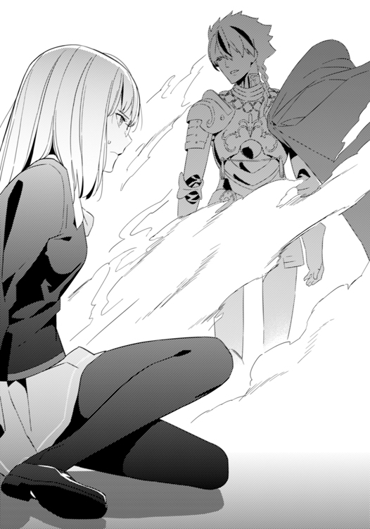

| Fate/strange Fake(1) | |
| 成田良悟 | |
本書（電子版）に掲載されているコンテンツ（ソフトウェア／プログラム／データ／情報を含む）の著作権およびその他の権利は、すべて株式会社ＫＡＤＯＫＡＷＡおよび正当な権利を有する第三者に帰属しています。
法律の定めがある場合または権利者の明示的な承諾がある場合を除き、これらのコンテンツを複製・転載、改変・編集、翻案・翻訳、放送・出版、公衆送信（送信可能化を含む）・再配信、販売・頒布、貸与等に使用することはできません。
狭間。
荒野の闇の中に浮かび上がるその街は、確かに『狭間』とでもいうべき存在だった。
昼と夜、光と闇といった『隔絶境界』などではない。同じ側に与する存在による『調和境界』。それが、この『スノーフィールド』と呼ばれる都市の特徴だった。
魔術と魔法ほどの差異はなく、人と獣よりは異質な存在を区切る分水界。
いわば、黄昏と早暁の色の混ざり合わさる曖昧な地境。区切りをつけるというよりも、混じり合った絵の具が集約することによって生み出された黒い中心点とも表現できる。
それは例えば、街と町の境界であり、自然と人との境界であり、人と都市との境界であり、夢と眠りとの間に存在する曖昧の泥を彷彿させる。
アメリカ大陸西部。
ラスベガスからやや北の位置に存在するこの都市の周囲は、そのように奇妙なバランスによって成り立っていた。
北にはグランドキャニオンを思わせる広大な渓谷。西には乾燥地域には似合わぬ深い森。東に広がる湖沼地帯に、南には乾燥した砂漠地帯が広がっている。
およそ農地というものとは無縁だが、東西南北をそうした性質の土地に囲まれ、中央に座する都市だけが異質な存在として周囲から浮き上がっている状態だ。
自然と人工物のバランスが取れている、未来を見据えた新興都市──眼を輝かせてそう評する者もいるが、現実には、この町はどこか傲慢に傲慢を重ねた思想が見え隠れする。
周囲に広がるありのままの形をした自然物。その狭間──様々な色が混じり合ったその中心点に、その街は自らが自然の調律者であるといわんばかりに、『黒色の台座』となって周囲の森羅万象すべてを天秤にかけているように感じられた。
20世紀に入ったばかりの頃は、先住民族達の居住地が点在する他は何もない土地だったと記録されている。
しかしながら、60年程前から急激な発展を遂げ、21世紀を越した現在は人口八十万人を抱える都市へと変貌を遂げていた。
「急激な発展、というのはどこの土地にもあることだがね。そんな街でも、調査対象になるとあらば、自然とその出自に疑念の眼を向けようというものだ」
そう呟いたのは、青黒いローブを纏った老齢の男だった。
今にも雨が降り出しそうな、星一つない夜。
都市の西側に広がる森林部のはずれ──やや薄まった木々の間から双眼鏡を覘きつつ、老人はレンズの向こう側に見える高層ビル群の明かりを見て淡々と語り続けた。
「しかし......最近の双眼鏡はじつに便利だな、ボタン一つで自動的にピントを合わせてくれる。使い魔を一々放つよりも手軽になるとは、まったく嫌な時代になったものだ」
どこか忌々しげに呟いた老人は、背後に立つ若い弟子に声をかける。
「そう思わないかね、ファルデウス」
すると、ファルデウスと呼ばれた青年は、老人から２メートルばかり離れた木に寄りかかったまま、疑念を含んだ声で問い返す。
「そんなことより、本当にそれほど気を張らねばならぬものなのですかね？ その......『聖杯戦争』とやらは」
──『聖杯戦争』──
神話の時代か、はたまた御伽噺の中に現れるような単語を口にした途端、青年の師匠は顔から双眼鏡を離し、呆れたような目つきで口を開く。
「ファルデウス、本気で言っているのか？」
「いえ......その......」
ばつが悪そうに目を逸らす弟子に対し、老人は頭を振りつつ怒気混じりの溜息を吐き出した。
「確認しておくこともないと思っていたが......君は『聖杯戦争』についてどれだけ理解しているのかね？」
「事前に渡された資料には一通り目を通しましたが......」
「ならばわかるだろう。如何に確率が低い話だとしても、『聖杯』と名のつくものが顕現する可能性があるとするならば──子供の噂話の中だろうが、三流雑誌のデタラメな記事の中だろうが、我々は踏みこまざるをえない」
「それは多くの魔術師達にとって悲願でもあり、単なる通過点でもあるのだからな」
× ×
かつて──闘争があった。
舞台は東洋のとある国。
その中でも単なる地方都市に過ぎない場所で、人知れず行われた闘争だ。
だが、その闘争の内に秘めたる圧力は凄まじく、確かに、『聖杯』と呼ばれる奇跡を巡る、一つの戦争であったといえるだろう。
聖杯。
其は一にして無限の奇跡。
其は伝説。
其は神の世の残滓。
其は到達点。
其は希望──されど、其を求めるは絶望の証。
聖杯という単語自体、時と共に、場所と共に、人と共にその姿を変えながら語られ続ける存在だが、このケースでは、所謂『聖遺物』としての聖杯とは少々意味合いが異なっている。
その闘争において、聖杯と呼ばれる奇跡は、『あらゆる願いを叶える願望機』として顕現すると言われていた。
言われていた、というのは、その聖杯を奪い合う戦いが開始された時点では、『聖杯』と呼ばれる願望機は存在していなかったからだ。
聖杯よりも先に顕現するのは、七つの『魂』。
この星の上で生まれ息吹いたあらゆる歴史、伝承、呪い、虚構──ありとあらゆる媒体の中より選ばれた『英雄』の魂を、『サーヴァント』と呼ばれる存在として現代の世に顕現させる。
それが『聖杯戦争』の根幹であり、聖杯の顕現に必要とされる絶対条件でもあった。
人間とは比べものにならないほどに強力な魂同士を呼び出し、互いに潰し合わせる。
それぞれの英雄の召喚者となった『マスター』と呼ばれる魔術師達が、ただ一人に許される聖杯取得の権利を巡って殺し合う。その闘争こそが『聖杯戦争』と呼ばれるものだ。
殺し合いによって敗れた魂を聖杯となる器へと注ぎ、それが満たされることによって初めて願望機が完成するというシステム。
恐らく、その舞台は世界一危険な蟲毒壺となったことだろう。
本来世界から己の存在を秘匿しなければならぬ魔術師達が、ひっそりと闇を闊歩し、人知れず戦乱の火蓋を切る。
さらに、『聖杯』と名のつく存在を監査するという目的で『教会』から派遣された監督者も加わり、蟲毒壺は血生臭い輝きを見せながら。圧倒的な熱量の魂によって清められるのだ。
そして、現在──。
東洋の島国で過去に五度行われたという『聖杯戦争』。
かの闘争において現れたものと同じ兆候が、アメリカの地方都市で湧き上がりつつある。
そんな話が魔術師達の間で持ち上がった。
結果として、彼らのような魔術師達を統括する『協会』は秘密裏に調査を行うこととなり、こうして一人の老魔術師とその弟子が派遣される形となったのである。
× ×
「......ふむ、そこまで理解しているのならば十分だ。だが、ファルデウス。そこまで識っていながら君のその投げやりな態度は感心できん。ことと場合によっては『協会』全体の問題となり、あの忌々しい『教会』も出張ってくることになるだろう。もっと気を引き締めたまえ」
戒めの言葉を紡ぐ師に対し、ファルデウスはなおも懐疑的な言葉を口にする。
「ですが、本当にこの土地で？ 聖杯戦争のシステムはアインツベルンとマキリ。そして遠坂が提供した土地によって敷かれたものでしょう？ それを誰かが掠め取ったってことでしょうかね......60年も前に？」
「ああ、真実だとするならば......最悪の場合、この都市自体が『聖杯戦争』のために作られた、という可能性もある」
「まさか！」
「可能性の話だよ、『聖杯』を追い求めた例の三家は、聖杯を手にするためにそれこそなんでもやったと聞く。そもそも、何者が『聖杯戦争』をこの町で再現しようとしているのかもつかめていないんだぞ？ それこそマキリやアインツベルンの縁者が出てきても驚かんよ。......遠坂の縁者は今は時計塔にいるのみだから、それはないと思うがね」
完全には三家の関与を否定せぬまま、老魔術師は再び双眼鏡に目を向けた。
もう午後11時を回ろうかというのに、都市の明かりはほとんど明度を落とすことなく、曇天の夜空に煌々と己の存在を誇示している。
数分ほど観察を続けていた老魔術師が、次の段階だとばかりに、レンズ越しに霊脈の流れを視るための術式を準備し始めた。
その様子を背後から見ていた弟子は、神妙な顔で師の背中に問いかける。
「もしも本当に『聖杯戦争』が起こるとすれば、我らが『協会』も、『教会』の信仰者達も黙ってはいないでしょう」
「ああ......あくまで兆候に過ぎんからな。地脈の流れに異常があると、時計塔のロード・エルメロイが言っていたのだが......彼の弟子ならともかく、彼自身の推測は粗が目立つ。こうして現地まで出向いて確認するというわけだ」
疲れたように笑いながら、老魔術師は自らの願望を語り出す。
苛立ちと嘲りを入り交じらせた声色で、弟子か、あるいは己に対して縷々と述べる。
「もっとも、英霊なぞ聖杯の下ごしらえがなければ召喚できるものではない。実際に英霊の召喚が成されればその時点で疑惑は確信へと変わるのだが......そうなって欲しくはないものだ」
「おや、意外なお言葉ですね」
「私個人としては、ただのデマであって欲しいと思っているよ。仮に何かが顕現したとしても、それが贋物の聖杯であって欲しいというのが本音だ」
「さっきの話と矛盾してませんか？ 聖杯は魔術師の悲願であり通過点だと......」
眉を顰めながら尋ねるファルデウスに、師は忌々しげに首を振った。
「ああ......そうだな。だが、仮に真なる聖杯と呼ぶに価するものだとすれば、まったくもって忌々しいことだ。このような歴史の浅い国にそれが顕現するなど......。正直、多くの魔術師は『根源に到達できるのならば関係ない』と言うだろうが、私は違う。どうにも、礼儀知らずの若造に寝台を土足で踏みにじられた気分だよ」
「そういうものですか」
なおも淡泊な調子で言葉を返す弟子に、老魔術師は本日何度目かの溜息をついて話を変える。
「しかし、本来の場所とは異なる土地で、如何なるサーヴァントが召喚されるのか......」
「まったく予想ができませんね。アサシンはともかく、他の五種に関しては召喚者次第ですから」
ファルデウスの返答に、師は苛立たしさを隠しもせずに叱咤の言葉を紡ぎ出す。
「おい、アサシンを除けば残り六体だ。先刻自分の口から七体のサーヴァントと吐き出したばかりだろう！ しっかりしてくれ！」
聖杯戦争に喚ばれる英霊には、それぞれクラスが与えられる。
セイバー
アーチャー
ランサー
ライダー
キャスター
アサシン
バーサーカー
召喚された英霊はそれぞれの特性に合わせた存在として顕現し、己の業をさらに研ぎ澄ます。剣の英雄ならばセイバーとして、槍を用いた英雄ならばランサーというように。
殺し合いを始めるにあたり、互いの真名を告げることは弱点や能力を晒すことになるため、通常はそうしたクラス名でことを進めることとなる。また、それぞれのクラスによって闘争におけるスキルにも多少の差異が生じる。
例えばキャスターの『結界作成能力』や、アサシンの『気配遮断』がそれにあたる。
いわば、それぞれ違う特性を持ったチェスの駒のようなものだ。
手駒は一つだけ。しかもバトルロイヤルという変則的なチェス。指し手たるマスターの力量次第で、どの駒にも盤を制するチャンスが存在する。
そうした、いわば聖杯戦争の常識の中の常識であるという部分を言い損じたことに、師は弟子の不肖を嘆いたつもりだったのだが──
叱咤をされた側の男は、無表情だった。
師の言葉を飄々と聞き流すわけでもなく、反省の色を見せるわけでもなく、ただ、淡々と言葉を紡ぐ。
「いいえ、六柱ですよ。ミスター・ランガル」
「......なに？」
刹那、冷たい違和感が老魔術師ランガルの背を走り抜けた。
ファルデウスが自分のことを名で呼ぶなど、これが初めてのことだ。
何をふざけているのだと怒鳴りつけるところだったのかもしれないが、ファルデウスの冷え切った視線がそれを押しとどめる。
沈黙する師に対し、男は淡々と無感情な顔を蠢かせ、師の口にした一つの『間違い』を指摘する。
「日本で行われた聖杯戦争のクラスは確かに七柱というのがルールでした。しかし、この町の場合は六柱です。こと闘争において最も力を発揮するといわれる『セイバー』のクラスですが......この偽りの『聖杯戦争』には存在しないんですよ」
「何を......言っている？」
ギチリ、と背骨から音がする。
体の中に張り巡らされた魔術回路が、通常の神経が、血管のすべてが、ランガルの耳に違和感を通り越した『警報音』を響かせている。
弟子は──少なくとも数分前までは弟子だったはずの男は、一歩こちらに踏み出しながら、感情を消した声で自らの言葉を紡ぎ出した。
「マキリとアインツベルンと遠坂、彼らの生み出したシステムはじつに素晴らしい。それゆえ、完璧にコピーすることはできなかった。完全にコピーした状態で始めたかったのですが、何しろシステムを模倣する為に参考にした第三次聖杯戦争はトラブル続きでしてね。本当に参りました」
明らかに20代中盤としか思えない青年が、まるで視てきたかのように60年以上前の出来事を語り出す。
そして、不意に表情に険の色をこめたかと思うと、口の端を紐で引いたように歪めながら、あくまで淡々と自らの感情を吐き出した。
「貴方は我が国を『若い』と仰いましたが、だからこそ覚えておくべきですよ、御老体」
「......何？」
「若い国を、あまり侮るべきではない、と」
ギチリ ギチリ ギチ ギチチ ギリ ガキリ ギチ ギチリ。
ランガルの全身の骨と筋肉が軋みをあげる。理由は警戒か、あるいは怒りによるものか。
「貴様......ファルデウスではない......のか？」
「ファルデウスですよ？ もっとも、その名以外の真実を貴方に見せたことはありませんが。ともあれ、『協会』については本日、この瞬間まで多くを学ばせていただきました。その点について、まずは謝礼を述べるべきでしょうか」
「......」
魔術師としての経験を長く積んできたランガルは、目の前の男についての認識を一瞬にして『弟子』から『敵』へと切り替える。
それなりに長い時間を共にしてきた男を、出方によっては次の瞬間に殺すべく感情をスイッチさせたのだが──それでも、ランガルの全身からは警戒音が鳴り響いたままだ。
魔術師としての腕はすでに確認しているはずだった。
力を隠している様子もなかった。それは、自分が協会の間諜にかかわっていた経験からも確信できる。
しかし、その経験のすべてが、現在自分が置かれている状況が危険であると告げているのも確かなことだ。
「つまり、外部組織から協会へのスパイだったというわけか。私の前で魔術師を志すと口にした瞬間から」
「外部組織、ねえ」
粘つくような声を漏らし、ファルデウスは相手の誤解を正そうとする。
「協会も教会も、協会に所属しない異端の魔術集団がこの聖杯戦争を仕掛けていると考えているようですが......まったく、どうしてこう......いや、いいでしょう」
あとは話すことなどないとでもいうかのように、ファルデウスは一歩前へと踏み出した。
殺気や敵意はとくに感じられないが、こちらに何かを仕掛けようとしているのは確実である。ランガルは、ギリ、と歯冠を嚙み擦らせ、体の重心を滑らかに移動させ、相手の行動に対応するための布石を完成させる。
「......舐めるなよ、若造」
同時に、自ずから先手を打つ方策を脳髄の中に展開させ、魔術師としての闘争に踏み切ろうとしたのだが──その時点で、彼はすでに敗北していたようなものだった。
魔術師としての騙し合いの時点で、ランガルはすでに目の前の男に敗れており──。
「舐めてませんよ」
冷ややかに呟く青年は、最初から魔術戦を仕掛けるつもりなどなかったのだから。
「だから、全力でお相手させていただきます」
呟くと同時に、ファルデウスはいつの間にか手にしていたライターに火をつけ、空だったはずの手には一瞬にして一本の葉巻が握られている。
物体招致のようにも見えたが、魔力が流れた様子は感じられない。
怪訝な顔をするランガルに、男はニコリと──今までとは違う、心の底からの微笑みを浮かべてその葉巻をくわえこんだ。
「ふふ、手品ですよ。魔術じゃない」
「......？」
「ああ、そうそう、我々は別に魔術師の集団ではありませんので、あしからず」
緊張感の欠片もない調子で呟きながら、男は葉巻に火をつけた。
「我らが合衆国に属する組織。その一部にたまたま魔術師もいたというだけです」
男の言葉に、ランガルはほんの数拍だけ沈黙した後、口を開く。
──「なるほど。で、その安物の葉巻が、貴様の全力とどう関係がある？」
魔力構成の時間稼ぎも兼ねて、そう口にしようとした瞬間──。
老魔術師の側頭部を小さな衝撃がえぐり抜き、すべては一瞬にして決着した。
ボァ、という、重くしめった破裂音。
老人の頭蓋を簡単に貫いた弾丸は、減速と共に鉛の体を四散させ、脳髄の海を焼き切りながら跳ね泳ぐ。
貫通することのなかったその弾丸は、脳味噌の中で歪な跳弾を繰り返し、瞬時にして老人の体の活動を停止させた。
そして──すでに絶命していることは目に見えてわかる状態だというのに、追い打ちをかける形で数十発の弾丸が突き刺さった。
方向は一カ所からではなく、発射の間隔と合わせて十カ所以上からの狙撃が考えられる。
明らかなオーバーキル。執拗な破壊。
ラップに合わせて踊る操り人形のように、老いた体は力ない四肢をくゆらせる。
「滑稽なダンスをありがとう」
赤い飛沫を背景にグチャリグチャリと舞い回るランガル。その生き生きとした骸を前にして、ファルデウスはゆっくりと手を叩きながら賞賛の言葉を紡ぎ出した。
「30歳ほど若く見えますよ、ミスター・ランガル」
数分後──。
血溜まりの中に倒れる師の前で、ファルデウスは一歩も動かぬままだった。
ただし、周囲の森には先刻とまるで違う空気が広がっている。
迷彩服を纏った男達が、ファルデウスの背後の森の中に数十人単位で散開していた。
その『部隊』は一様に黒い目出し帽を被っており、彼らの手にはそれぞれ、無骨にして精密なデザインの黒い塊──減音器つきのアサルトライフルが握られている。
表情はおろか人種すら判別できぬ状態の男達。その中から一人がファルデウスへと歩み寄り、姿勢を正して敬礼しながら口を開く。
「報告します。周囲に異状はありません」
「御苦労さまです」
部下の態度とは対照的に、柔らかい言葉を返すファルデウス。
彼はゆっくりと老魔術師の遺体に歩み寄り、その死体を薄い微笑みと共に見下ろした。
そして、背後にいた部下達に、振り返ることのないまま言葉をかける。
「さて......君達は魔術師というものをよく御存知ないでしょうから、少し説明しておきましょう」
いつの間にか彼の周囲に散開していた軍服の男達が整列しており、一言も発さずにファルデウスの言葉に聞き入っていた。
「魔術師は、魔法使いではありません。そんな御伽噺や神話のようなものを想像する必要はなく......そうですねえ、せいぜい、日本産のアニメーションやハリウッド映画を想像していただければ結構です」
師だったものの肉塊の前にしゃがみこみ、その一部を素手でつかんで摘み上げる青年。
不気味な光景ではあったが、非難する者はおろか、眉を顰める者すら存在しない。
「殺されれば死にますし、物理攻撃も大抵は効きます。中には蠢く水銀の礼装で数千発の散弾を防ぐ実力者や、体に住まう蟲に意識を移して生きながらえる魔人もいますが──まあ、前者は対戦車ライフルは防げませんし、後者もミサイルが直撃すれば、ほぼ確実に死にます」
男の発言をジョークと受け取ったのだろう。無表情だった迷彩服の男達の間に失笑が広がる。
だが──次の発言を聞いて、その笑いはピタリと収まることとなった。
「例外は......この人のように、そもそもこの場にいなかった場合です」
「......どういう意味ですか、ファルデウス殿」
硬い言い方で尋ねる部下の一人に、ファルデウスは笑いながら死体の一部を放り投げた。
表情を変えずにそれを受け取った部下は、指先の一部と思しき肉片を見て、声をあげる。
「......なッ」
ライトに照らされた肉片の断面は確かに赤く、白い骨も確かに露出していた。
だが、決定的な違いがある。
肉と骨の隙間から、光ファイバーのような透明の繊維が何本も露出し、それが現時点をもってして糸蟲のように不気味に蠢いていたからだ。
「義体というか、まあ、人形です。ミスター・ランガルは用心深い諜報屋ですからね。こんな場所に本体で来るような間抜けではありません。今頃、本体は協会の何処かの支部、あるいは自らの工房で慌てふためいていることでしょうね」
「人形......？ まさか！」
「いやあ、大した技術ですが、違和感は完全にぬぐえてませんでしたね。不自然な点を隠すためには老人の外観は都合がいいのでしょう。そうそう、彼よりも腕のいい魔術師の女性が作る人形は、本体と何一つ変わらず......ＤＮＡ鑑定すら通ってのけるらしいですよ？」
他人事のように語るファルデウスだったが、部下は訝しげに眉を顰めながら、上役である男に対して意見を述べる。
「ならば、先刻の会話も筒抜けということではありませんか」
「かまいません。予定通りです」
「は......？」
「わざわざ非合理的な『冥土の土産』を語ったのは、それを『協会』に伝えてもらうことが目的だったんですから」
ファルデウスは、贋物の肉塊と贋物の血溜まりの上で空を仰ぎ、霧雨が降り始めた闇の空を眺めて、満足そうに呟いた。
「これは、我々なりの......魔術師達への警告と宣伝ですので」
そして、この日、この瞬間を皮切りとして──。
偽りの聖杯の壇上で踊る、人間と英霊達の饗宴が幕を開けた。
その男は、結局のところはどこまでも魔術師であり──。
しかしながら、どこまでも澱んでいた。
偽りの聖杯戦争。
この儀式が東洋の島国で行われたものの贋作であるということを理解しながらも、彼はその事実を鼻で笑った。
──くだらん。
──真似だろうがなんだろうが、結果さえ同じならばなんの問題もない。
尊き魔術師ならば、他人の作り上げたシステムには頼らず、聖杯戦争を組み上げた三家のように自らそれを生みだそうと思うのだろうが、彼の場合は、手っ取り早く他者が用意したものの尻馬に乗る道を選んだ。それはそれで合理的な考えであるともいえるのだが。
最初から『贋作』として執り行われる聖杯戦争に、彼はどこまでも本気であり、誰よりも気合いを入れていたと言ってもいいだろう。
すなわち、彼は最初から覚悟を決めてこの町に現れた。
最初に噂を聞いたときは、単なる風聞の類と笑っていたが、ランガルの手によって伝えられた一報は協会を揺るがし、その振動は多くの魔術師達を通じて彼の耳にも伝わった。
彼はそれなりに名のしれた魔術師の家系ではあったが、その力は緩やかに下降の道を辿っており、現時点での当主である身として少なからずプレッシャーを感じていた。
それなりの理論も知性も技術も持ち合わせていた彼は、ただ、魔術師の家系として積み上げてきた純粋なる『力』だけが不足している状態であり、それが彼を一層苛立たせる。
通常ならば、その力の技術を研鑽し、より素養のある子孫へと魔術刻印ごと引き継がせるべきだったのだろう。
だが、彼は焦っていた。
自らの子もまた、自分より魔術師としての素養が落ちることを確認してしまったからだ。
徐々に魔術師としての素質が薄れ、ついに魔術の世界との縁を絶つこととなった家系も数多く存在する。
──冗談ではない。
──マキリのようになるのはまっぴら御免だ。
協会にも、通常の企業や組織と同じように多くのしがらみが存在する。
子孫を繁栄させるための手段を得るには、まず強い魔術師の血統たらねばならない。
そうした矛盾に晒された男は、魔術師であり、未熟でもあった。
彼は偽りかもしれぬ聖杯戦争にすべてを賭け、このスノーフィールドという町に、聖杯戦争というテーブルに、ありとあらゆるチップを乗せたのだ。
財産も、過去も、未来すらも。
──大丈夫だ、上手く行くさ。
己の覚悟を示すために、先のない息子はすでに間引いてきた。
止める妻も始末した。
繁栄をもたらさぬ女に未練はない。
だが、魔術師としての矜恃が理解されなかったことは少なからずショックだった。
あんな女に生ませたからこそ、素質のない息子が生まれたのだろう。
だが、あの女が今の自分の『ランク』で手に入る上限だ。
さらに自分の位を上げるには、この戦争に勝ち残るしかない。
仮に聖杯がまがいものであったとしても、『聖杯戦争』と名のつくものを勝ち抜ければ、それだけで魔術師としてのアドバンテージは上がる。戦いの過程で『根源』への道に到る手がかりをつかむこともできるだろう。
あるいは、アインツベルンやマキリの業を識ることができるかもしれない。
如何なる結果になろうとも、聖杯戦争は自らの魔術師としてのランクを上げるものだ。
なんと緩いギャンブルだ。
最低でも、賭けた以上のものは確実に取り返せるのだから。
そのように、様々な利益を思い描きながらも──彼は、自分が敗北して完全に家系を終わらせる可能性については考えていなかった。
だが、考えないのにはそれだけの理由がある。
彼には勝算があった。
少なくとも、自らの息子を始末するに価するだけの勝算が。
──しかし......これが令呪か。聞いていたものとは少し違う紋様だな。
男はそう思いながら自分の右手を見て、それこそ生まれたばかりの我が子を見るように、愛おしげな笑みを顔面に貼りつけた。
閉じた鎖を思わせるその入れ墨は、聖杯戦争のマスターとして選ばれた証のようなものなのだという。
──だが、これが宿ったということは......。
──認められたのだ！ この私が！ マスターとして！
──すなわち、あの英霊の主として！
言いながら、男は静かに傍らに置いた布包みに目を向け──。
もう一度、笑う。
笑う。笑う。笑う。
スノーフィールドの北部に広がる大渓谷。
赤い岸壁が連なる渓谷から程近い場所の山岳部に、その洞窟は存在した。
元々は天然の洞窟だったが、現在は人払いの結界をはじめとして、魔術師が生み出した『工房』として機能している状態だ。
ランプの明かりに照らされながら、魔術師は静かに布包みを持ち上げ、その中にある物を懇切丁寧に取り出した。
それは──鍵だった。
だが、単なる鍵というのは少々憚られる代物だ。
それは余りにも装飾過多であり、ちょっとしたサバイバルナイフほどの長さと重さを持ち合わせている一品である。
鍵を彩る宝石一つとっても、魔術的、金銭的、共に多大なる価値を持ち合わせていると思われた。
──過去の聖杯戦争においては、『それ』を蛇の化石で喚び出したと聞くが......。
──この遺物ならば、より確実に『それ』を喚ぶことができるだろう。
かつて──彼の家系にまだ力があった頃、やはり今の自分と同じように、すべてを賭けてその鍵を手に入れ、あるものを探し求めたのだという。
この世のすべてのものが詰まっているという、黄金郷の宝物殿。この鍵は、その縹渺たる伝承の奥にある扉を開くために使われたものに相違なかった。
財に興味があるわけではない。ただ、その宝物の中にはあらゆる魔術的な宝具が秘められていることだろう。
結局、先人が証明したのは鍵が本物であるという一点のみであり、結果として蔵を見つけることは叶わなかった。鍵自体にも未解明の魔力があるようだが、今の時点ではまったく関係のないことだ。
自らが望む英霊の遺物。それこそが召喚において最高の触媒となり、より確実に自らの望むサーヴァントを手に入れることができるのだ。
──時も満ちた。
──始めるとするか。
彼は静かに立ち上がると──瞬時に笑みを消し、感情も打算もすべて忘れ、自らが臨む儀式にすべての意識を集約させる。
感覚が一点に統合され、研ぎ澄まされ、必要ない階層の官能の一切合切が遮断される。
神経とも血管とも異なる、体中に張り巡らされた目に見えぬ回路。
その中に、やはり不可視の熱水が走り抜けるのを感じながら──
男は自らへの祝詞であり、万象の天秤への呪詛でもある召喚の文言を吐き出した。
数分後。
彼の人生と、この闘争に賭けた数々の代償。
そして、彼がこだわり続けた魔術師としての家系。
すべては一瞬。ただの一瞬。
ほんの数秒のやりとりで、彼の存在は、あっさりと終焉を迎える結果となった。
× ×
「やった......ハハ、ハハハハハ！ やったぞ！」
目の前に現れた『それ』を見て、魔術師は思わず言葉を漏らす。
相手の真名など確認するまでもない。
自分が何を喚ぶのか、最初から理解できていたことだ。
喜悦の笑みだけが喉の奥から押し寄せ、わずか数秒とはいえ、召喚した英霊を放置する。
英霊の顔にはあからさまに不快の色が浮かんでいるが、英霊として喚ばれた己の義務を行使する。
もっとも、呼び出された英霊がそれを『義務』などと受け取っていたかどうかは疑問だが。
「......答えよ。貴様が不遜にも王の光輝に縋らんとする魔術師か？」
黄金色の髪、黄金色の鎧。
豪奢を極めた外観のサーヴァントは、こちらを見下す形で問いかけた。
だが、問われた言葉の内容に思わず鼻白み、眼前に存る絶対的な『力』を実感しつつも、わずかな苛立ちを湧き上がらせる。
──サーヴァント風情が何を偉そうな！
魔術師としてのプライドが威圧感に押し勝ったが、自らの右手に輝く令呪の疼きを感じてすんでのところで冷静さを取り戻す。
──......まあ、この英雄の性質からすればそれも仕方あるまい。
ならば、最初にハッキリとわからせておかなければならないだろう。
あくまでもこの戦いにおいて、主が自分であり、サーヴァントとして顕現した英霊などただの道具に過ぎぬということを。
──そうだ、その通りだ。この私が貴様の主だ。
令呪を見せつけながら答えを放つべく、右腕を前に差し出し──。
その右手が、なくなっていることに気がついた。
「......え？ あ？」
形容する言葉もなく、呆けた声を洞窟内に響かせる。
血の一滴すらも出ていないが、確かに、直前まであったはずの右手がない。
慌てて自らの手首を顔の前に持ってくると、焦げた臭いが鼻腔を強く刺激する。
手首の断面からは煙が薄く立ち上っており、焼き切られているというのは明白だった。
それを認識した瞬間、脊髄と脳に痛みの流れが伝播し──
「ひがぁ......ぎひがぁぁぁっぁぁぁあっぁぁぁ！ あぁぁぁっぁぁぁぁっぁぁぁあぁ！」
悲鳴──悲鳴──圧倒的、悲鳴。
巨大な蟲の鳴き声さながらの絶叫を響かせる魔術師に、金色の英霊は退屈そうに口を開く。
「なんだ、貴様は道化か？ なれば、もっと華美のある悲鳴で我を愉しませろ」
眉一つ動かさず、相変わらず驕傲に振る舞うサーヴァント。どうやら、右手の消失は英霊の手によるものではないらしい。
「ひぁ、ひぁ、ひぁぁっぁぁっぁぁ！」
理解の範疇を超えた出来事に、魔術師は完全に理性を崩しかけたが──魔術師としての脳髄がそれを許さず、強制的に精神を落ちつかせ、即座に体勢を立て直す。
──結界の中に......誰かがいる！
──私としたことが、なんという迂闊！
本来ならば、工房と化したこの洞窟に誰かが入ってきた時点で気配を察知できるはずだった。しかし、サーヴァント召喚の決定的な隙を突かれたために、洞窟内に満ちた英霊の魔力に紛れて気付くことができなかったのだ。
だが、結界に合わせてそれなりの罠も張り巡らせていたはずだ。それが発動した気配はなく、闖入者がそれらを解除して進んできたとすれば、相当に油断のならぬ相手だと推測できる。
残った左手で魔術構成を練りながら、気配のする方角──洞窟の外へと向かう穴道へと叫びあげた。
「誰だ！ どうやって私の結界を抜けてきた！」
すると──次の瞬間、洞窟の闇からの声が響く。
ただし、それは魔術師ではなく、金色のサーヴァントに対しての言葉だった。
「恐れながら......偉大なる王の前にこの身を晒すお許しをいただきたく存じます」
声をかけられたサーヴァントは、ふむ、と一考した後、やはり傲岸な態度を見せる。
「よかろう。我が姿を拝謁する栄誉を許す」
「......ありがたき幸せ」
その声は、透き通るような無垢さと、すべてを拒絶するような感情のなさを揃えていた。
続いて、岩陰より姿を現したのは──ただでさえ若く受け取れた声の印象から、さらに数歳若い──12歳前後の、褐色の肌の上に艶やかな黒髪を掲げる少女だった。
深窓の佳人というべき形容が相応しい、下品さのない華美な礼装。端正な顔がその衣装によってさらに引き立てられているが、表情にはそれに見合った華やかさは感じられない。
ただ、粛々と畏まった調子で一歩工房内に踏みだし、祭壇上の英霊へと恭しく一礼をした後、裾が土に塗れることを気にもかけずに跪く。
「なッ......」
完全に無視された形となった魔術師は、目の前の少女の力が計りきれずに、憤ることもできずに怒りを喉の奥へと押しこめた。
英霊は少女の恭しさが当然とばかりに、視線だけを向けて力ある言葉を押しつける。
「我の前に雑種の血を飛び散らせなかったことは褒めてつかわす。だが、喰うに価せん肉の臭いを我の前に漂わせた理由について、弁解があるならば申してみよ」
一瞬だけ魔術師のほうをちらりと見やり、少女は跪いたまま英霊に対し申し立てる。
「恐れながら、王の裁きに委ねるまでもないと......蔵の鍵を盗みし賊に罰を与えました」
言いながら──少女は自らの前に一つの肉塊を取り出した。
それは、確かに先刻まで魔術師の体の一部だったものであり、令呪によって英霊との魔力の筋道を繫ぐ接合部──つまりは、魔術師の右手である。
金色の英雄は、少女の言葉にフム、と己の足下を見て、台座に置かれた一つの鍵を手に取り──興味なさげに投げ捨てた。
「この鍵か、下らん。我の財宝に手を出す不埒者など、我が庭には存在しなかったからな。造らせたはいいものの、使う必要がないと捨て置いたに過ぎん」
「......ッ！」
その行動に衝撃を覚えたのは、右手首の痛みを遮断するための呪文を呟いていた魔術師だった。
彼の先祖がすべてを賭けて追い求めた『蔵』の鍵。
魔術師の家系として唯一といってもいい誇りであったその偉業を、ゴミのように投げ捨てられたのだ。しかも、自らが奴隷や道具として扱うべき、サーヴァントという存在に。
憤慨のあまり、呪文を唱えるまでもなく右手の痛みが薄らいだ。
だが──そんな彼に追い打ちをかけるように、褐色肌の少女は首だけを魔術師に向け、威圧と憐れみをこめた声を浴びせかける。
「それが王の意向なら、貴方とこれ以上命のやりとりをするつもりはありません。どうか、お引きとりください」
「なッ......」
「そうすれば、命までは取りません」
「────── ────────」
刹那、魔術師の意識が簡単に支配される。
自らの内より湧き上がった憤懣が魔術回路を支配し、言葉すらあげることもできず、左手に集めたすべての魔力を暴走させる。
ありったけの呪いと熱と衝撃がこめられた黒い光球が、勢いよく少女の顔面を吞みこむべく空間を切り裂き──疾る、奔る、趨る。
ほんの一呼吸の間すらなく、魔力の奔流は少女を押し流すと思われた。
だが、そうはならなかった。
「【 】」
無音の詠唱。
少女は口を開きつつも、音もなく己の中で魔術の構成を紡ぎ出す。
だが、瞬時にして膨大な魔力が少女と魔術師の間に湧き上がった。
まるで、極限まで呪詛を圧縮したが故に無音に辿り着いたかのような、圧倒的詠唱。
最後の瞬間──魔術師は見た。
少女の前に現れた、自分の身長の倍はあろうかという巨大な炎の顎が、自分の放った魔力をあっさりと吞みこみ──。
──違う。
最後に思い浮かんだ言葉。
果たして何をもって『違う』という言葉が出たのか、それを考える暇すら与えられない。
──ちがッ......ち、ちがッ......こんなッ。
自分が死んでも家系は続く。魔術師である彼はせめてそう思おうとしたのだが......その家系の後続を、つい数日前に自らの手で始末したことを思い出す。
──ちがう！ 違う！ ここでッ......死ぬッ......私が......？ 違う、ちが......。
──違う違うちが──────────。
────────────。
そして、魔術師は姿を消した。
彼の人生と、この闘争に賭けた数々の代償。
そして、彼がこだわり続けた魔術師としての家系。
すべては一瞬。ただの一瞬。
ほんの数秒のやりとりで、彼の存在は、あっさりと炎の中に吞みこまれる結果となった。
「お見苦しいところをお見せ致しました」
人を一人殺したというのに、少女は平然と英霊に頭を垂れる。
金色のサーヴァントは、さして興味がないといった視線を送りながらも、今しがた彼女がつかった魔術について口にする。
「なるほど、我が不在の間、貴様らがこの土地を支配していたわけか」
今の魔術は、彼女の内から直接湧き上がった魔力によるものではない。
恐らくは、この土地自体のもつ霊脈を利用した魔術だろう。
それを肯定するように、少女はそこで初めて表情を浮かべ、顔を地に向けたまま、どこか寂しげに言葉を返した。
「支配ではなく、共生です。......御推察の通り、このスノーフィールドの土地を出れば、私の一族はただの人にございます」
「雑種は雑種に過ぎん。魔術の有無など区別する程の差にはならぬ」
自分以外はすべて同等とでもいうような傲慢な物言いに、少女は何も言い返さない。
彼女の右手には、すでに魔術師の右手にあったはずの令呪が転写されている。
魔力の流れが魔術師から少女に移り変わったことを確認しながら、英霊はやはり変わらぬ威光を放ちながら、やはりどこか退屈そうに──しかし、どこまでも堂々と言い放つ。
「ならば改めて尋ねよう。貴様が、不遜にも王の光輝に縋らんとする魔術師か？」
金色の英霊。
英雄の中の英雄。王の中の王といわれるその存在に──
少女は力強く頷き、再度、敬意の籠もった一礼をしてみせた。
× ×
「......私は、聖杯を求めているわけではありません」
洞窟の外に向かう道すがら、少女は静かに言葉を紡ぐ。
少女は、自らを『ティーネ・チェルク』と名乗り、黄金のサーヴァントを得て聖杯戦争へと参加した。
だが、彼女は聖杯を求めるわけではないという、矛盾ともいえる言葉を口にし、それに続いて詳しい真意を言葉に変えた。
「この土地を偽りの聖杯戦争の場として選び、すべてを蹂躙しようとしている魔術師達を追い払いたい......我らの悲願はそれだけでございます」
あっさりと『この聖杯戦争を潰す』と呟いた少女に対し、金色の英霊──六種類用意されたクラスの中で、弓兵のクラスとして再度この時代に顕現したという『王』は、さして興味もなさそうに言葉を返す。
「我も聖杯などに興味はない。本物ならば我の宝を奪おうとする不埒な輩どもを罰し、贋物ならばそのままこの儀式を執り行った輩ごと誅するだけだ」
「ありがたき御言葉」
少女は礼を言った後、なおも自分達の素性について語り続けた。
「このスノーフィールドは、一千年前から我々の部族が共生してきた土地......東よりこの国を制した者達からの圧政からも守り抜いた土地です。それを、政府の一部が魔術師などという連中と手を組み......わずか70年足らずで蹂躙されました」
言葉に悲しみと怒りを織り交ぜて語る少女に、英霊はとくに感慨を抱いた様子はない。
「下らんな。誰が上に乗ろうと、すべての地は我の庭に帰するのだ。庭で雑種が諍いを起こそうと、本来ならば捨て置くところだが......それが我の宝を掠め取ろうとする輩ならば話は別だ」
あくまでも自分のことしか考えていない男に、少女は何を思ったのだろうか。
とくに不快を抱いたわけでもなく、呆れたわけでもない。
彼はどこまでも王として振る舞い、だからこそ王として認められるのだろう。
一瞬だけその傲岸さに羨望のような感情を抱き、気を引き締め直して洞窟の外に踏みだした。
洞窟の外にて彼女達を待っていたのは──数十から数百を数える、黒服の男女。
少女と同じように褐色の肌をした者が多いが、中には白人や黒人の姿も見受けられる。
あからさまに堅気ではないとわかる雰囲気を持った大集団が、渓谷の麓まで何台もの車で乗りつけ、洞窟を厚く取り囲んでいる状態だった。
彼らは洞窟から出てきた少女と、その傍らに立つ威圧的な男を目にし──。
一斉にその場へと跪き、少女と『英霊』に対して敬服の意を表す。
「こやつらは何者だ？」
淡々と尋ねる王に、ティーネは自らも跪きながら答えを返す。
「......我らの部族が生き延び、魔術師達と対抗すべく、都市の中に作り上げた組織の者達にございます。私が父の後を継ぎ、総代としてこの戦にも選ばれた次第です」
「ほう」
多くの人間達が一斉に自分を崇敬し、跪いている。己の肉体が存在していた頃の光景を思い出したのか、金色の王は目を細め、少女に対する認識をわずかに改めた。
「雑種同士とはいえ、随分と慕われているようだな」
「王の威光を前にして言われては、ただ恐縮する他ございません」
「我の威を借りようとするだけのことはある。それなりの覚悟でこの戦に挑んではいるようだ」
「......」
光栄と受け取るべき言葉だが、少女には不安もあった。
目の前の『王』は、そう言いながらも、やはり退屈そうな感情を隠しもしていないからだ。
そして次の瞬間、彼女の不安が的中したとばかりに、英霊は淡々と言葉を紡ぎ出す。
「だが、所詮まがいものの台座。我以外に引き寄せられた有象無象などたかが知れておろう、そんなものにいくら裁きを下そうが、無聊の慰めにはならぬ」
言うが早いか、彼はどこからか、一本の小瓶を取り出した。
その瞬間を見ていた黒服は後に述懐する。『空気が歪んで、その中から一本の小瓶が直接英霊の手中に落ちた』と。
美しい装飾が施されているものの、いったい何を素材としているのかわからない。陶器なのか硝子なのか、滑らかな表面は半透明に透き通り、中になんらかの液体が漂っているのが見える。
「児戯ならば児戯らしく戯れ程度に相手をしてやるのが相応しかろう。我が一々本気になるまでもない。本気を出すに価する敵が出るまでは、しばし姿を変えるとしよう」
彼はそう呟くと、そのまま瓶の蓋を開け、それを飲み干そうとしたのだが──。
まさにその瞬間。
偶然というよりは、何かの運命が作用したとしか思えないタイミングで──。
大地が、啼いた。
【──￣￣──＿＿ ─ ─ ￣ ￣ ─ ─ 】
『!?』
ティーネも、彼女の配下たる黒服の集団も、一斉に空を仰ぎ見る。
遠くから聞こえてきたのは、天と地を揺るがす、巨大な咆吼。
だが、咆吼というには余りにも美麗な音で、まるで巨大な天使か何か、あるいは大地そのものが子守歌を歌っているような音だった。
それでいて、その音が遙か遠く──スノーフィールドの西方に広がる森の方角から聞こえてきたということもわかる。
物理法則すら無視したその鳴動に、ティーネは何故か確信することができた。
これは、何かが生まれたことを示す産声のようなものであり──。
それは恐らく、途轍もなく強力なサーヴァントなのであろうと。
一方、その声に動きを止めたのは、アーチャーとて同じことだった。
口につけかけた瓶を持つ手を止め、そこで初めて、金色の王は強い感情を顔面に浮かび上がらせる。
仮に、彼を以前から知る者ならば、その表情について『滅多に見られるものではない』と驚きを見せることだろう。かの『王の中の王』は激高しやすく、決して泰然自若とはいいがたい存在であったが──果たして、こんな顔をすることがあるのかと。
「この声は......まさか」
彼の目に浮かんでいたものは、驚き、焦燥、戸惑い、そして──感動。
「......おまえなのか？」
ティーネはそう呟いた英霊の表情を見て、ほんの一瞬だけ、彼から王としての威圧感が揺らいだことに気がついた。
だが──次の瞬間、アーチャーの顔には王としての傲慢な威圧感が戻り、高く高く、ただひたすらに空高く笑い声を響かせる。
そして、一頻り笑い終えた後──。
「ハッ......なんということか！ 斯様な偶然に巡り合うも、我が王たる証と謳うべきか！」
先刻までの退屈に満ちた表情が噓のように、彼の顔には歓喜と英気が満ちあふれていた。
「雑種の小娘よ！ 喜べ、どうやらこの戦、我が本気になるべき価値となったようだ！」
らしくないことを口にしながら、胸が空いたとばかりに饒舌になる英雄の王。
「かの広場での決闘の果てに向かうも一興か。......いや、もしもあやつが狂戦士として顕現していたのならば、あるいは......いや、言うまい。雑種に一々拝聴を赦すことでもなかろう」
上機嫌になりつつも、自分が王であることは欠片も損なわず、くつくつと笑いながら咆吼の震源を見据え、傍らに跪いたままのティーネに声をかける。
「面を上げよ。ティーネ」
突然名前を呼ばれたティーネは、驚きながらも言われるがままに英霊の顔を見上げた。
すると、ティーネの手に、先刻まで王が手にしていた小瓶が投げ渡される。
「若返りの秘薬だ。貴様の齢で使う必要はなかろうが、今の我には不要となった。ありがたく拝領せよ」
「はッ......？ は、はい！」
驚き目を開く少女に、アーチャーはわずかに視線を向け、威厳に満ちた声を口にした。
「我の臣下となるならば、一つおまえに命じておくことがある」
一方のアーチャーは、こちらには目もくれぬまま、だが、じつに機嫌のよさそうな声で王としての言葉を賜った。
「幼童ならば少しはそれらしくせよ。万物の道理のわからぬうちは、ただ王たる我の威光に目を輝かせておればいい」
それは皮肉混じりなのかもしれないが、あまりにも力強い言葉だった。
一族のために感情を捨てたはずの少女は、英霊の言葉に、わずかに揺らぐ。
感情を捨てたつもりだからこそ、目の前の男に心底からの敬意を払いつつ──少女はまだ目を輝かすことができず、ただ申し訳なさそうに頭を垂れた。
「努力致します」
こうして、一組のサーヴァントとマスターが戦の中へと躍りこむ。
英雄王ギルガメッシュと、土地を奪われた少女。
彼らはこれが偽りの聖杯戦争と知りながら、ただ、我を通すためだけにすべてを賭ける。
この瞬間より、王と少女は君臨する。
偽りしかない戦の全てを、己という偽らざる真実に塗り替えるために。
王の戦が、幕を開けたのだ。
英国 倫敦某所
時計塔。
それは、通常ならばロンドンの観光名所として受け取られる単語だろう。
だが、魔術師達の間ではまったく違う意味合いを持つ単語となる。
数多くの魔術師達を統括する『協会』の心臓部であり、同時に、まだ若き魔術師達を育てるための最高学府。
まさに魔術師の総本山とでも呼ぶべき場所で、英国そのものの歴史と比肩するとされるその場所からは、過去に多くの優秀な魔術師達が輩出され──それぞれが新たなる歴史を生みだし、魔術というもの全体の格調を高くする。
「ファック......」
その時計塔が誇る『最高学府』の校舎に、厳かな印象に似付かわしくない言葉が響き渡った。
「君はあれだ。一言で表すならば阿呆だな」
最初にそうした罵り声をあげたのは、長髪を靡かせる30前後の男だった。
赤いコートの上に黄色い肩帯を垂らし、その上には如何にも不機嫌といった表情を浮かべて、眼前の若者に何やら苦言を呈しているようだった。
だが、一方の若者は絶望的な表情で──
「そんな！ せめて二言以上で表してください！」
と、どこか嚙み合わない答えを返す。
「馬鹿で阿呆だ。それ以外に形容のしようがない」
ムスリとした顔で呟く男に、若者はなおも食い下がる。
「いや、どうしても参加したいんですよ教授！ アメリカで始まるっていう聖杯戦争に！」
「こんな廊下で堂々とその単語を口にするところが阿呆だと言っている！ まったく......君はどこでそのことを知った？ 重要機密とまでは言わんが、お前のようなぺーぺーの小僧ッ子が知っていていい事ではないぞ！」
周囲に誰もいないことを確認しながら、教授と呼ばれた男は縋りついてくる若者の頭を忌々しげに引き剝がした。
彼はこの魔術師達の最高学府の教授であり、『ロード・エルメロイⅡ世』と呼ばれている存在だ。本名は別にあるらしいが、彼を知る者は皆敬意をこめてロード・エルメロイⅡ世と呼んでいる。
まだ若い身の上でありながら、時計塔の中で最も優秀な教師といわれ、彼に教えを受けて巣立っていった生徒達は、その誰もが秀逸なる魔術師として世界に羽ばたき、各々が魔術師達の間で数多くの功績を生み出していた。
ゆえに、彼は魔術師達の間でも尊敬の念を集め、『プロフェッサー・カリスマ』や『マスター・Ｖ』、『グレートビッグベン☆ロンドンスター』『マギカ・ディスクロージャー』など、じつに多くの二つ名を与えられている。
もっとも、彼自身はこれといった功績もなく、弟子だけがどんどん輝いていく姿に苛立ちを感じている様子だが──。
現在彼が苛立っているのは、現役の教え子である目の前の青年に対してだ。
どこで『聖杯戦争』を知ったのかという質問に、青年はケロリとした表情で言葉を返す。
「昨日、地下講堂で教授や協会の幹部の人達が会議開いていたじゃないですか。ランガルさんってあの有名な人形師の人ですよね？ 俺、初めて生で見ましたよ！」
青年の言葉を聞いて、エルメロイはタダでさえ苛立たしげな顔をさらに曇らせ、冷静なまま自らの生徒の顔面にアイアンクローを極めこんだ。
「ど・う・し・て・あの会議の内容をおまえが知っている？」
「いや、ちょっと気になって盗み聞きを」
「極秘の報告会だぞ!? 何重にも結界が張ってあっただろう！」
自らの師である男の詰問に、青年は申し訳なさそうに目を逸らしながら答えを返す。
「ええ、その、悪いと思ったんですけど、俺どうしても気になって......」
そして、誤魔化すように笑いながら、拳をぐっと握りしめ、言った。
「試しに部屋そのものの結界にハッキングを仕掛けたら、うまくいきました！」
──沈黙。
魔術の話に『ハッキング』という単語を用いるのは、彼に限らず若い生徒達の間でしばしば見受けられる。実際にはハッキングともクラッキングとも関係ない行為なのだが、要するに『結界をすり抜け、誰にも気付かれずに会議の内容を傍聴した』と言っているのだ。
フラット・エスカルドス。
彼はロード・エルメロイⅡ世の教室の生徒でもあり、同時に最古参の人間でもある。
まだ年若き少年の頃にエルメロイの生徒となった彼は、そのまま時計塔を卒業できずに何年もの時を過ごしている。
彼のことを一言で表すならば、ロードの言う通り罵りの言葉しか出てこないことだろう。
だが、もっと多くの言葉を用いて彼のことを語るならば──「魔術の技術と才能は底知らずだが、それと引き替えに魔術『師』としてもっと大事な部分をどこかに落としてきた男」というのが相応しいだろう。
地中海に居を構える魔術師の家系、エスカルドス家の長男として生を受け、過去に類をみない魔術回路とそれを制御する才能を持っていると期待されたのだが──
いかんせん、彼は魔術はともかく、魔術師とは正反対の気性の緩さを持ち合わせていた。
元々は期待の神童として他の教授に師事していたのだが、多くの教師はほどなく胃痛を訴える結果となり、最終的に『貴方しかいない』とエルメロイⅡ世に預けられることとなった。
それから数年。彼は魔術の才能に関しては、見事に他の生徒達を追い越して成長し続けていた。他の教師ではこうはいかず、そこはマスター・Ｖの面目躍如といったところだろう。
だが、その他の問題が積み重なりすぎて、未だに時計塔を卒業することができぬ身である。
本来ならば放り投げてかまわないところを『中途半端で放り出せるか』と律儀に受け持ち続けるエルメロイⅡ世であったが、今回という今回はその選択を後悔しかけていた。
「才能のある馬鹿というのは、本当に始末に負えんな......」
怒ることを通り越して、どこか悟りを開いた僧侶のように穏やかな声色となるマスター・Ｖ。しかし顔は相変わらず仏頂面のままで、ポン、と自らの教え子の肩に手を置き、言葉をかける。
「今のは聞かなかったことにしておく。だからこれ以上私の平穏の邪魔をするな」
「教授に迷惑はかけません、ただ、ほら、何かヒーローを召喚するためのアイテムがいるんでしょう!? それ、どうやって手に入れたらいいのかわからないんですよ！ ナポレオンの肖像画とか持って行ったらナポレオン召喚できるんですか！ 皇帝なら最強じゃないですか！」
「私がナポレオンの英霊なら契約する前に君を銃殺しているところだ！」
このまま走って逃げだそうかとも考えたが、聖杯戦争に何か思うところでもあるのか、やや声に真剣みを帯びさせ、改めて問いかける。
「......。フラット、君はあれだ......どうして聖杯を求める？ 君に魔術的根源を求める程の魔術師らしさがあるとも思えんが。まさか卒業したいからとか、いつまでも卒業させない私に一泡吹かせたいとかいうわけではないだろう？」
しかし、フラットはその問いに対して、完全に相手の想定外である答えを吐き出した。
「見たいからです！」
「......なんだと？」
「だって、超カッコイイじゃないですか！ 聖杯なんて！ あのヒットラーやゲッペルスが第三帝国のために追い求めて、秦の始皇帝やノブナガやゴ●ラも追い求めた一品ですよ！ 本当に存在するなら、どんなのか見てみたいじゃないっすか！」
「ゲッペルスじゃない、ゲッベルスだ。あとゴジ●は別に追っていない。ノブナガや始皇帝は知らんが時代や文化的に違和感がある」
どうでもいい部分の誤りだけを指摘し、そのまま黙りこむエルメロイ。
てっきり怒鳴り返されるかと思っていたフラットは、おっかなびっくり教授の次の言葉を待っていたが──やがて、教授は静かに溜息を吐き、優しく言い聞かせるような声を紡ぎ出す。
「魔術師同士の闘争というのがどういうものか理解しているのか？ 死ぬよりも悲惨な目にあった挙げ句、何を成す事もできぬまま惨たらしく殺されるかもしれんのだぞ？」
「その覚悟をしてでもみんなが追い求めるものなんでしょう？ ますます見たくなるじゃないですか！」
あっさりと答える青年に、よく考えろと怒鳴ろうとしたが──。
──多分こいつは、よく考えても同じ答えを出す。
という真理に辿り着き、別の方面からの問いを投げかけた。
「おまえは、それだけのために相手を殺す覚悟があるのか？」
「うッ......。殺さないで勝てる方法とかは......チェスで決めるとか......」
「ああ凄い！ 相手の魔術師がチェスの世界チャンピオンなら承諾してくれるかもしれんな！ チェスボクシングでもいいがね！」
「......むずかしい問題ですよね。他の英雄とかも凄く凄く見てみたいし、できれば仲良くなりたいじゃないですか！ 英雄を六人も友達にできたら、これ、魔術師として凄いでしょ！ 世界征服だって夢じゃないっすよ！」
相手の話を聞かぬどころか、途中から趣旨が完全にずれているフラットの言葉を聞いて、エルメロイは完全に沈黙する。
ところが、怒鳴りつけることも呆れることもしなかった。
顎に手を当て、しばし何かを考えているようだったが──。
やがて、ハっと正気に戻り、
「......駄目に決まってるだろう」
と、にべもなく突き放した。
「ま、ま、ま、頼みますよ教授！ いえ、グレートビッグベン☆ロンドンスター！」
「本人を目の前にして二つ名で呼ぶな！ しかもよりによってその二つ名を選ぶか普通!? 馬鹿にしてるだろ、おまえ、絶対に私を馬鹿にしているだろう！」
「そこをなんとか！ 教授にピッタリな新しい二つ名を考えてあげますから！ ええと、ほら、『絶対領域マジシャン先生』とか！」
「死ね！ 永遠に卒業できんまま死ね！」
× ×
結局冷たくあしらわれたフラットは、あからさまにションボリとしながら学府内をうろついていた。もう二十歳になろうかという青年の姿にはとても見えず、「とぼとぼ」と口で呟きながら長い階段を下っていた。
すると──
「あ、ちょうどよかった」
と、階下にいた女性から声をかけられる。
時計塔の事務員の女性で、手には大量の郵便物と──一つの小さな小包を抱えていた。
「これ、あなたのところの教授への荷物よ、渡しておいてくれるかしら」
そうして、彼は先刻一方的に突き放されたマスター・Ｖへと荷物を届けることになったのだが──。
──うう、まだ怒ってるだろうな。
と、ネガティブな想像をしつつ長い階段を上る最中──彼は箱の中身が気になって、透視の魔術で中にあるものを確認する。
それは、何か儀式で使われるような、禍々しいデザインの短剣のようだった。
次の瞬間、彼の研ぎ澄まされた透視能力は、ナイフの刃に彫られた銘を見て、全身に電流が走ったような感覚に囚われる。
──これは......もしかして！
──教授......！ 俺のために!?
自分勝手ここに極まれりな勘違いをした少年は、その箱を持って走り出す。
箱の中には色々と文字が刻まれていたが、自分にはまったく読めない文字だ。恐らくは異国の魔術的な説明書きか何かだろう。
だが、その文字の内容を解読するよりも先に、彼は一心不乱に学舎の中を駆けだした。
× ×
「やれやれ......また来たか」
廊下の奥から走ってくる姿を見つけて、エルメロイⅡ世はあからさまに嫌な顔をしたのだが──フラットは手にした小包を掲げながら、聖杯戦争とは無縁の言葉を吐き出した。
「教授ッ......こッ......こッ......この荷物ッ......おれッ......俺にッ！」
百メートルを超す距離を全力で駆けてきたせいか、急速に酸素不足となったフラットは息も絶え絶えにその箱を差し出した。
一方の教授は、何事かと箱を見たのだが──そこに書かれていた住所や包装紙のロゴマークなどを見て、ああ、と頷きながら尋ねかける。
「ああ、こいつは......なんだ、君はこれが欲しいのか？」
その問いに対し、ヘッドバンキングをするようにブンブンと首を縦に振る青年。
「まあいい。君が欲しいならくれてやる。私には必要のないものだ」
教授の答えを聞いて、フラットは人生で最大といってもいい輝きを顔の上に浮かべて見せた。
「ありがとうございます！ 本当に......本当にありがとうございます！ 俺、教授の弟子でよかったです！」
半分涙ぐみながら駆け去っていく弟子を見て、呆れたように呟いた。
「まったく、私の若い頃とは正反対の奴だな。恐らく透視で中身を見たんだろうが......あいつ、そんなに欲しいものが入ってたのか？」
数分後──。
自室に戻ったエルメロイⅡ世は、不肖の弟子の事を思い出しつつ、部屋の奥にある一つの戸棚に眼を移す。
物理的なものと魔術的なもの、二重に鍵をかけられた戸棚の前に立つと、エルメロイⅡ世は丁寧にその鍵を外し、中にあったものを手に取った。
それは、特殊な保管ケースに収められた、一枚の布地だった。
見るからに年代物の一品であり、朽ち果てたその生地には実用性などないだろう。
だが、部屋のあらゆるものの中で最も厳重に保管されていた事から、その布がただの襤褸切れではない事を証明している。
「他のサーヴァントを従え、世界征服とはな......」
先刻のフラットの戯言を思い出し、彼は眉を顰めたまま口元を歪ませた。
「まさか、私の弟子からそんな馬鹿げた、懐かしい響きを聞く事になるとは」
そして、ケースの中の布地を、どこか郷愁を孕んだ瞳で見つめ、独り言を呟いた。
「どうしても止められぬようならば、これを渡す事も考えたが、そうならずに済んだことに感謝すべきか」
エルメロイⅡ世は眉を顰めたまま安堵の息を漏らすと、ケースの蓋を閉じながら、弟子に渡した荷物の事を考える。
「しかし、私が言えた義理ではないが、個人宛の荷物を他人に届けさせるというシステムも考え物だな。別段重要なものでもなんでもないが」
「まあ、なんにせよ、あの景品で聖杯戦争のことを忘れてくれるならばいいことだ」
数カ月前──。
教授は自室で趣味である日本産のゲームに興じた後、丁寧なことに、ゲームソフトのパッケージに同梱されていたアンケートハガキを記入していた。
わざわざ高い切手を貼ってエアメールで送るわけだが、その物珍しさが功を奏すのか、アンケートハガキの抽選による関連商品などが部屋の中に所狭しと並んでいた。
もっとも、彼はそうした商品のほとんどに興味がなく、純粋にゲーム会社に意見を反映して貰うためだけに送り続けているだけなのである。
そして、数カ月後──。
本当に欲しい商品があれば直接注文して買いそろえるタイプの彼は、小包に書かれた日本のメーカー名を見て『またいつもの特典商品だろう』と判断し、目を輝かせながら迫ってくるフラットに開封もせぬまま贈呈してしまったのだ。
彼の判断した通り、それはいつもの通り、ゲーム関連のプレゼントだった。
彼はメーカー名から、ロボットを主体としたゲームのアクションフィギュアか何かだと思っていたのだが──。
実際は、『大英帝国ナイトウォーズ』と書かれたシミュレーションゲームのものだった。
そして、その特典の商品とは──────。
× ×
数日後 スノーフィールド市 中央公園
頭上に燦々と太陽が輝く昼下がり。
フラットは準備もろくにせぬまま飛行機に飛び乗り、そのままアメリカ本土へと渡航していた。
聖杯戦争について、大雑把には調べたものの、彼は細かい点についてはまるで理解していない。
そんな状態の、参加資格云々以前の問題であるフラットなのだが──。
彼は現在、自分の右手に浮かんだ紋様を嬉しそうに眺めていた。
「カッコイイなあ、これ。令呪ってのを使うと消えるのかな、これ」
しげしげと手をさすり、時折何かを呟き──次の瞬間、がっくりと肩を落とす。
「消えちゃうみたいだ。よし、令呪は絶対に使わないようにしよう！」
如何にして『使うと消える』というシステムを見抜いたのか、その場に『聖杯戦争』の関係者がいたらつかみかかって詰問するところだろう。
だが、運がよかったことに、周りには一般人の親子連れなどしか見あたらない。
フラットはそのまましばし令呪を眺めた後、手にした布包みを開け広げた。
中から出てきたのは、ひと振りのナイフ。
禍々しいデザインの、黒と赤を基調とした悪趣味な一品だ。
歯止めはしてあるものの、刃の光沢などはどことなく高級感がある。
「でも、本当に教授には感謝しなきゃね。なんだかんだ言って、俺のためにこんなにカッコイイ遺物を用意してくれたんだから！」
箱から取り出した後も自らの勘違いに気付くことはなく、むしろ、より一層誤解を深めながらこの土地まで来てしまったのだ。
そして──あろうことか、聖杯は彼を選び、聖杯戦争への参加資格である令呪をその身に宿らせたのだ。
ただ、ナイフと令呪を見比べながら──彼は先刻と同じように、時折何かを呟き続ける。
30分ほど経った頃だろうか──。
他の令呪の持ち主達が知れば卒倒しそうな出来事が、その公園の中で巻き起こる。
それは正しく奇跡とでもいうべきもので、仮に彼の師であるエルメロイⅡ世がここに居たら、とりあえず三度ほど膝蹴りを入れた後で苛立たしげに賞賛することだろう。
奇跡と呼ぶべきか偶然と呼ぶべきか、あるいは彼自身の才覚を理由とするか。いずれにせよ、彼の成したことは、ある意味でこの偽りの聖杯戦争に対する多大なる侮辱であるともいえた。
ただし、それを知覚したのは当のフラット本人だけだったのだが。
『問おう。汝が我を召喚せしマスターか？』
「は、はいッ!?」
ヤケにハキハキとした声が響き渡り、思わず立ち上がって周囲を見渡すフラット。
だが、周囲には家族連れやカップルが闊歩するのみで、今しがたの声の主がどうにも見あたらない。
『今の返答は肯定と見ていいのかね？ ならば契約は完了だ。共に聖杯を望む者同士、仲よくやっていこうではないか』
「え？ ええッ!?」
首を上下左右に激しく動かすが、やはりどこにもそれらしき姿は見あたらない。
混乱する青年を余所に、声はなおも語り続ける。
『なんと......祭壇もなく、こんな衆人環視の中でサーヴァントの召喚を行うとは、我がマスターとなる者は中々に剛気なことよ！ ......いや、待て......。祭壇がないということは、もしや召喚の呪文もなしか!?』
「え、ええと......すいません、色々魔力の流れとか弄ってるうちに......なんか、『繫がっちゃった』みたいですね。いや、すいません、こんな召喚の仕方で」
『ふむ......まあいい、それだけ優秀な魔術師ということなのだろう』
どうやらサーヴァントらしき存在の声は、自らの頭の中に響いているようだ。
自分の中から、令呪を通して魔力が『どこか』に流れていくことを確認しながら、フラットは恐る恐る自分の頭の中に話しかけた。
「あ、あの......どうにも俺、いや、私、感動のタイミングを逃してしまったみたいなんですけど......サーヴァントって、みんなこういう感じなんですか？」
『いや、私が特殊なだけだ。とくに気にしないでくれたまえ』
サーヴァントの声は思ったよりも気さくな調子で、奇妙なことに、紳士風ではあるが具体的な素性はまったく感じさせない。
『何しろ私には、確たる「素性」というものがないのでな。姿も形も、如何様とでもいえるし──如何様にもいえぬという次第だ』
男なのか女なのか、老人なのか子供なのか、どのような職業についているのか、普通ならばどこか声に表れるものなのだが、頭の中に直接響くその声は驚く程に特徴がなく、まるで顔のない怪物とでも会話しているような気分になる。
「あの......貴方の名前を聞かせていただいてかまいませんか？」
ふと、そう尋ねてみた。
自分が手にしたナイフの出自が事実ならば、その正体は自分の想像通りのはずだ。
だが、フラットの中ではどうしても頭の中の声と、彼のイメージする『英霊？』との印象が一致しない。
頭の中で『英霊？』としたのは、フラットにも、それが『英雄』と呼ばれる類の存在ではないと知っていたからだ。
だが、恐らく──英国産の映画や小説が普通に出回る国ならば、ほとんど知らぬ者はいないだろう。もっとも、知名度ではシャーロック・ホームズやルパンに劣るだろうが──彼らと違い、その存在は過去に確実に実在した存在である。
何故か問いかけに返事はなく、フラットは不安げに視線を躍らせたのだが──。
その視界の中に、不意に黒を基調とした大柄な男の姿が目に入る。
「あ、やっと顕現してくれたんですか！」
「何を言っている？」
怪訝な顔をする男の姿を見て、フラットはアッと声をあげ、途端に顔を真っ青に染め上げた。
黒い服なのは当たり前だ。
腰に拳銃をぶら下げた警官が、厳めしい顔をして噴水に座る自分を見下ろしていたのだから。
「ナイフを握って独り言とは怪しい奴め」
「い、いや！ あの！ 違うんです！」
大慌てで弁解を始めようとするフラットだったが──。
「驚いたかね？」
と、眼前の警官が突然柔和な態度となり、手にした警棒をフラットに持たせる。
それは質感などは本物の警棒であったのだが──その質量が、途端に手の中から消え失せる。
驚いて前を見ると、そこにはすでに警官の姿など存在せず、代わりに扇情的な服装の女が一人佇んでいた。
そして、その女性が、女の声のまま、先刻頭の中に響いたものとまったく同じ口調の言葉を紡ぎ出す。
「自己紹介の前に、私の特性を理解してもらおうと思っただけだ」
「え？ え？ あれ!?」
さらに驚くフラットの前から、一瞬にして女の姿が消え去り──。
『驚かせてすまない。我がマスターよ。実際に見せたほうが早いと思ってな』
声は再び、頭の中に。
周囲にいた家族連れの何人かはその『異常』の一端を目にしていたようで、目を擦る者や首を傾げる者、「ママ、お巡りさんが女の人になって消えちゃった」などと言って親に笑われる子供など様々だった。
その様子や、目の前に残るハイヒールの足跡などを見ても、今しがた見た者が幻覚などではないと確信できる。
訝しむ一般人達を置き去りとし──真実は、青年の頭の中でだけ明かされる。
『では、改めて自己紹介するとしよう。我が真名は──』
フラットはゴクリ、と息を吞み、相手の言葉の続きを待った。
彼はこのサーヴァントの正体を知っている。だが、真命はその『伝説』にとって、まったく別の意味で重要な意味合いを持つ。
彼は期待をこめて相手の声が脳内に響くのを待ち続けたのだが──。
サーヴァントの答えは、彼を別の意味で驚かせる結果となった。
『正直な話、私にもわからん』
「ちょっとッ!?」
思わず中腰になる青年だが、中腰になったところでつかみかかる相手もいないことに気付き、恥ずかしそうに周囲を見回しながら腰を下ろす。
そんな青年の様子を相手にすることもなく、声は、やはり感情も特徴も感じられない調子で自らの素性を語りだした。
『私の本名を知る者が居るとすれば──恐らくは、伝説ではない、真実の私と......あるいはその凶行を止めた者だけだろう』
× ×
フラットの持つナイフは、実際遺物などではなく、イミテーションに過ぎなかった。
だが、その英霊に限っていえば──。
大衆向けとして作られたイミテーションだからこそ、より強く魂を引き寄せられたともいえる。
そのサーヴァントに名前などなく、だが、確実にこの世界に存在した証はある。
だが、人々は誰もその正体を知らない。
姿すらも、本当の名前すらも、男なのか女なのか、
いや、果たして人間であるのかさえ。
恐怖の象徴として世界を恐れさせた、性別すらわからぬ『彼』は、やがて人々の手によって様々な姿に想像され、数多の物語や論文の中に記され続けてきた。
あるいは医者、
あるいは教師、
あるいは貴族、
あるいは娼婦、
あるいは肉屋、
あるいは悪魔、
あるいは怨念、
あるいは陰謀、
あるいは狂気。
そもそも、『彼』が一人であるのかどうかも定かではなく、人々は、恐怖すらも利用して自由にその存在を描き出し──一つの『伝説』にまで昇華させた。
だが、彼は単なる伝説などではなく、確実に存在したのだ。
むしろ、長く『時計塔』で過ごしたフラットにとっては、もっとも近い場所に存在した伝説であるともいえた。
存在の証だけは、誰もが知っている。
ホワイトチャペルと呼ばれる倫敦の一画に残された──。
五人の娼婦の凄絶なる死体という、この上ない存在の証明を。
× ×
『だが、人は私をこう呼ぶし、手紙にて私が名乗ったとされる字は存在する』
『すなわち──切り裂きジャック、と』
数カ月前──。
エルメロイⅡ世のプレイした『大英帝国ナイトウォーズ』というゲームだが──
彼は日本から通販でそのソフトを購入した際、てっきり英国の伝説にある騎士同士の戦いを描いたシミュレーションだとばかり思っていた。
だが、カタカナで書かれたナイトとは『夜』という意味のナイトであり、そのゲームは、とある実在の人物を主人公として、自らの内に潜むもう一人の自分の狂気と戦いながら倫敦の夜を彷徨い、次第に魔物達との戦争に巻きこまれていくというアドベンチャーゲームだった。
まったく想定と違うゲームだったにもかかわらず、彼はきちんとクリアするまでプレイし、『タイトルのセンスに難あり』という意見を始めとして、思う所を正確に書き連ねていった。
ふと、アンケートハガキの裏を見ると、そこには抽選で当たる賞品についての詳細が書かれている。
『アンケートに答えた人の中から抽選で百名様に、「ジャック・ザ・リッパーの銘入りナイフ」レプリカプレゼント！（歯止め処理済み）』
──ジャック・ザ・リッパーがナイフに銘なんぞ入れるか。
鼻で笑いながら、彼はその賞品自体からは興味をなくし、淡々とゲームへの評価を書き連ねた。
そのアンケートハガキが、後にどのような結果をもたらすのかも知らぬまま──。
× ×
そして、数カ月後──。
公園の噴水に座り、相変わらず頭の中の『何か』と会話を続けるフラット。
ほんのわずかな時間で状況に慣れてしまったようで、じつに自然な感じで頭の中の声と会話する。
「つまり、貴方のその『誰でもない』という状況こそが、『誰にでもなれる』っていう能力なわけですか......」
『ああ、しかし君は運がいい。もしも他のクラスで顕現していたならば、君のその身を乗っ取って狂気のままに......とりあえず、この公園の中を血の海にしていたことだろう』
「えッ......」
相手の言葉が冗談とは思えず、思わず周囲の家族連れなどの顔を見るフラット。魔術師ならば『魔術師の存在が公になる』などと別の心配をするのだろうが、彼は魔術師らしからぬ理由でその状況を免れたことに安堵した。
「あ、あの......ところで、貴方のクラスっていうのはなんですか？ アサシンですか」
『おお、これはすまない。私のクラスは、バーサーカーだ』
「へ？」
相手の答えを聞き、ますます混乱するフラット。
うわべだけとはいえ、軽くは聖杯戦争について調べてきたつもりだ。
だが、バーサーカーのクラスといえば、正気を失わせることによってその力を引き出すのが特徴のクラスのはずである。
フラットの疑問を感じ取ったのだろう。ジャックは自らとクラスの関係について淡々と語り始めた。
『私は狂気の象徴として生み出された伝説だからな。狂気こそが私の波長と合う唯一のクラスであるといえよう』
「ああ......マイナス×マイナスはプラスって話ですね！」
通常の魔術師なら......いや、普通の人間ならば誰もが『そう都合よくいくのか？』と指摘するところを、フラットはすんなりと受け入れる。
これは逆にジャックが驚いたようで、ふむうと頭の中で唸り、補足するように言葉を吐いた。
『まあ、私が実在の人間の精神をそのまま移したものであれば、こうはいかなかったであろう。だが、狂気という記号の象徴として生み出された私だからこそ罷り通った奇跡だろうな。あるいは、この聖杯戦争自体に何か特殊なものがあるのかもしれん』
「へー。やっぱりサーヴァントって凄いんですね！」
やはりあっさりと答える青年に、サーヴァントは一抹の不安を覚えつつ話を変えた。
『それにしても、さっき私が警官の姿を取ったとき──何故、催眠術......魔術的な暗示などで切り抜けようとしなかったのかね？ 魔術師なら初歩の初歩だろう』
「え？ ......いや、でも、誤解はといておかないといけないと思って」
『君が優秀な魔術師なのか、途端に不安になってきたぞ』
頭の中に響く声に気まずさを感じたのか、今度はフラットのほうが即座に話題を切り替える。
「ところで、貴方は聖杯を見つけたらどんな願いごとを？」
『うむ......マスターには伝えておくべきだろうが......笑わないでくれたまえ』
正気を保ったバーサーカーは、少し躊躇った後、マスターの問いに答えた。
『......あの、ホワイトチャペルにて五人の娼婦を殺したのが誰だったのか──つまり、私は何者なのか。ただ、それを知りたいのだ』
「何者かって......」
『私は伝承に過ぎず、真実ではない。だが、自分が何者かもわからぬまま、ただ人々の紡ぎ出す物語や考察で自分の形を変容させていくというのは、とてもとても恐ろしいことなのだ。肉を持ち、名を持ち、過去を持つ君には理解できないことかもしれないが』
神妙な声色で語るサーヴァント。
自らの正体を知る。
奇妙な話ではあるが、恐らくはただそれだけがそのサーヴァントのすべてなのだろう。
青年はしばし何かを考えていたが、疑問に思ったことを素直に口にする。
「で、正体を知ったらどうするんですか？ 例えば、今後聖杯戦争じゃないところで、誰かに召喚されたとき......その、自分の正体だった人の姿を真似て現れるんですか？」
『そういうことになるのかもしれんな。結局は今の私と別人であることに変わりないが、私は殺人鬼であるということを前提として語られし伝承だ。真実の存在する伝承なれば、私はより真実に近くあるべきだろう』
どこか寂しげな声色を乗せたサーヴァントの言葉に──
空気の読めない青年は、あまりにもストレートに自分の意見を吐き出した。
「それこそ、自分がないみたいに思えますけど」
あっさりと──いともあっさりと告げた青年の言葉に、サーヴァントは驚いたような気配を青年の脳内に響かせた。
『......君はよく、空気が読めないとか言われることはないか？』
「アハハ、よく言われるんですよ！ ありがとうございます！」
『別に褒め言葉では......いや、よしとしよう。もうこの話をすることはなかろう。しかし......よくもまあ、私を喚び出そうなどと思ったものだ。英雄達ほどの力も、人間としての倫理観も期待できぬであろうに』
常識的といえば常識的な問いだった。
それを切り裂きジャック本人がするのはどうかという問いはともかく、普通に考えれば二の足を踏むであろう存在をサーヴァントとして召喚したことについて──
あっさりと、やはりあっさりとその言葉を口にする。
「俺は好きっすよ、貴方みたいな、正体のわからない謎の怪人って」
『......』
「だって、かっこいいじゃないですか！ しかも、今はいい人みたいで良かったです！」
魔術のセンスはあっても、魔術師としての性根が希薄である青年。
唯一、彼に魔術師らしい性根があるとすれば──
彼のセンスが、通常の人々のそれとはいささか違っているということだけだろう。
もっとも、最大限に快く受け取れば、好奇心旺盛という魔術師の素養を強く持ち合わせているとも言えるのだが。
青年の答えをどう受け取ったのか──
本来は狂気と凶気しか存在しないはずのサーヴァントは、ほんの少しだけ前向きとも思える声色で戦いに足を踏みこむことにした。
『さて、マスターよ、まずはどう動く？ 私の能力があれば、あらゆるところに侵入し、敵のマスターを直接潰すことも可能であろう！ 私は貴方の指示通り動かせてもらうつもりだが？』
気合いの入ったサーヴァントの言葉に対し、マスターである魔術師は、やはり魔術師らしからぬ爽やかな微笑みを顔面に貼りつける。
「とりあえず、いい天気だから日向ぼっこしましょう。あったかくて超気持ちいいっすよ」
『なッ......!?』
こうして──悲劇を知らぬ青年と、悲劇しか生み出さぬ悪霊との旅が始まった。
共通点はただ一つ。
お互いに、聖杯戦争の理念とは最も遠いところにいる存在。
その一点だけだった。
とある国に、とある信仰篤き者がいた。
それだけの話。ただ、それだけの話だった。
信仰篤き者は、その常軌を逸する程の信仰心から、人々に『狂信者』と蔑まれた。
よりにもよって、同じ神を崇める者達からも同じ蔑みの言葉が与えられた。
だが、狂信者は人を憎まない。
自らが蔑まれるのは、まだ未熟だからだ。
信仰心が足りない。ただそれだけのことだ。
狂信者はなおも自らを追いこみ続ける。
先人達の起こした奇跡を追い求め、そのすべてを再現してみせた。
だが、足りぬ。
まだまだ足りぬ。
世界は狂信者にそう叫び続けるかのようだった。
信仰者の誰もが狂信者を忌み始める。
──足りぬ。
──足りぬ。
──足りぬ。
結局、その狂信者は何を成すこともなく、ただ狂信者として生き、殉教することすら許されず、ただ無為な人生を過ごして姿を消した。
だが、狂信者はそれでも世界に恨みを抱かない。
己の未熟を恥じ、再び信仰の渦へと身を落とす。
狂信者は恨みなど持たない。ただ異なる神を憎むのみ。
そうした、常人には度しがたい狂信者がいた。
ただ、それだけの話だった。
それだけの話で終わるはずだった。
──偽りの聖杯が、その狂信者を選ぶ瞬間までは。
× ×
夜 スノーフィールド東部 湖沼地帯
いくつかの澄んだ湖が点在する、都市の東部に広がる湖沼地帯。
湖の合間には無数の沼が広がり、その間を縫うように道路が張り巡らされている。
都市の四方に広がる土地の中では比較的開発が進んでいるといってもいい区画だが、それでも、せいぜい釣り場やレジャー用の別荘が点在する程度だった。
そうした別荘地の一画。
結界が張られ、通常の人間には知覚することはできても、その建物を『気にかける』ことができぬ状態となっている、一際巨大な別荘が存在した。
決して趣味のいい建物とはいえず、西部の湖岸に建つペンションにしては、黒と灰色を基調としたデザインはいささかゴシックに過ぎるだろう。
そして──。
屋敷の地下には数人の魔術師達が存在し、今、まさに召喚の儀を終了したところだった。
顕現は無事に成功。
あとはサーヴァントの放つ『問い』を肯定し、契約を締結させるのみ。
だが──。
──妙だな。
そのサーヴァントを召喚せし魔術師、ジェスター・カルトゥーレは訝しげにその英霊を睨めつけた。
彼の周囲には弟子の魔術師達が十人程度。
さらに、その輪の中心には、明らかに人とも魔術師とも異なる気配を放つ姿が一つ。
どこまでも深く、それでいて純粋な威圧感を放つのは──。
黒いローブを身に纏う、一人の『女』。
かなり若そうだが、顔を床に向けて伏せているためにその顔立ちはわからない。
だが、ジェスターはその時点ですでに強い違和感を感じていた。
──私は、アサシンの英霊を召喚したはずだが。
通常は、英霊達の器となるクラスを完全に選ぶことはできない。
ただ、例外はある。
アサシンとバーサーカーのクラスは、ある特殊な性質から、詠唱や下準備などによって任意に召喚することが可能なのだ。
そして、ジェスターはそのルールに従い、『アサシン』のクラスを召喚した。
暗殺者の位を冠するサーヴァントは、やはりその性質から自然と一種類の英雄のみが召喚されるという約束事が存在し、一見すると、目の前に顕現した存在はその英霊であると思えるのだが──。
──聞いた話では、白い髑髏の面をつけていると......。
アサシンの名を冠する英霊は、皆一様に黒いローブに身を包み、顔面を覆い隠すように一枚の髑髏面をつけている。ジェスターは事前の情報収集でそこまで調べ上げていた。
だが、目の前の黒装束の女は、白い面をつけておらず、黒いローブの間からゆらりと素顔を晒している状態だ。
──さりとて、こちらから何か問いかけていいものか......。
ジェスターは、実際に聖杯戦争を体験するのは初めてのことだ。そもそも、本来の聖杯戦争とは違う贋作でもある。日本で行われたものと比べ、どのような差異が起こるのかは予想もつかない。
そもそも、この段階においても今回の聖杯戦争の『立役者』が存在を浮き上がらせないことが不気味ではある。これほどの大がかりな仕掛けを作り出すのだから、アインツベルンなどと同程度に名のしれた魔術師の家系によるものと考えていたのだが、今のところ、それらしき魔術師の気配は感じられない。
よほど上手く隠れているのか、それともどこかで高見の見物を決めこんでいるのか──。
ジェスターは様々な疑問を胸中に押しこみ、眼前のサーヴァントが動くのを待ち続けた。
すると──黒衣の女はゆっくりと顔を上げ、その瞳にジェスターの姿を映し出す。
「問おう......」
彼女自身が放つ威圧感と同じように、どこまでも深く暗いが、淀みなく、その奥底まで透き通るような強い眼差し。
魔術師はホウ、と思わず声をあげ、薄く笑いながら相手の言葉の続きを待った。
「貴方が......聖杯を得るために......私を呼び出した魔術師か......？」
女は口もとに巻いた黒衣を擦り抜け、消え入るような声色をゆるりゆるりと紡ぎ出す。
ようやく放たれた問いに安堵しながら、ジェスターは自信に満ちた表情で一歩踏み出し、両手を広げながら彼女を迎え入れるべく口を開いた。
「ああ、その通りだ。私が──────────」
【......妄想心音......】
女の呟きと共に、時が止まる。
トスリ、と、何かが胸に触れたような気がして、思わずジェスターは顔を下に傾ける。
──なんダ？
そしテ──自分の胸の前に赤いナニカが伸びており、やはり赤いナニカをツカンデいるコトに気付キ、続イテソレガジブンノ心臓デアるトキヅキ──────。
頷かせた首を戻すことなく、ジェスターの体はそのまま床に倒れ伏す。
「なッ......!?」
ピクリとも動かなくなる主の様子を見て、弟子の魔術師達はあからさまに狼狽し、目の前で繰り広げられた状況に目を剝いた。
女の背から唐突に現れた三本目の赤い腕が──主人である魔術師まで一直線に伸び、一瞬にしてその胸板に触れたかと思うと──。
あろうことか、その赤い手の中に一つの心臓が現れ、それを勢いよく握りつぶしたのだ。
倒れたまま動かない主と女の間で視線を往復させながら、魔術師達は混乱して喚きだす。
「き、貴様！」
「ジェスター様に何を!?」
「サーヴァントではないのか!?」
口々に恐慌の声をあげながら、己の手に武器を握り込んだり、魔力を急激に収束させていく魔術師の見習い達。
その様子を無表情に眺めながら、黒衣の女はただ一言。
やはり、消え入るような声で呟いた。
「我らが神は......杯など持たない......」
彼女の言葉を聞いてか聞かずか、特殊な力をもつと思しき短刀を手にした男が音もなく跳躍し、女の背後にその刃を突き立てようとする。
刹那──。
ゴギリ、という湿った怪音が響き渡り、女の肩が歪に曲がる。
異常な角度で後ろに回された左手は、やはり優しく男の頭に触れ──。
【......空想電脳......】
次の瞬間、男の頭そのものが爆弾にでもなったかのように、彼の体は激しい炸裂音を響かせて炎と共に四散した。
その衝撃音と閃光に、魔術師の弟子達は恐怖で体をすくませる。
ほんの一瞬、二人倒されただけだが──目の前にいるのは紛れもなくサーヴァントであり、自分達の手ではどうしようもない存在なのだと思い知らされた。
「異端の魔術師は......排除する......」
消え入る声で呟きながら、動きを見せずに数秒の間をあける。
それは、弟子達が構えをといて逃げ出すのを待っているかのようにも見えたのだが──弟子達はその道を選択せず、一斉に背後に飛び退り、女との距離をあけたまま魔力を浴びせかける道を選ぶ。
だが、その光景を見た黒衣のサーヴァントは、哀れむようにも、寂しげとも受け取れる瞳で首を振り──。
さりとて一切の容赦なく、力ある言葉を口にした。
【......夢想髄液......】
そして──部屋の中に沈黙が訪れた。
黒衣のサーヴァントの周囲にあるのは、魔術師達の屍。
彼女に魔力を解き放とうとしていた者達は、皆、何故か自らの体を焼き尽くして床に倒れ伏している。
いったい何が起こったのか、それを唯一知るサーヴァントは、無音のまま階段を駆け上がる。
その姿を霊体と化し、誰にも見えぬ状態となった彼女は──。
当てなどない筈なのに、一つの明確な目的を持って夜の闇を駆けだした。
× ×
狂信者が求めたものは、証だった。
自分が確かに信仰者であったと、神の信徒であったと言えるだけの証。
それを求めること自体が未熟だと気付いたのは、ずっとずっと先のこと。
まだ若かった頃の『彼女』は、信仰の証として、一つの名を得るべく修練を積んだ。
信仰の徒の長たる証であるその名を手に入れるためには、神の奇跡とでもいうべき力を手に入れなければならない。
だが、その奇跡とは少々特殊な縛りがあった。
異端者や神敵より、速やかに、そして確実に命を消し去るための奇跡。
彼女が所属したのは、その奇跡を追求する一派だった。
暗殺者の集団たる、存在自体が狂信的といってもいい一群。
だが、彼女はその内部においてですら『狂信者』と蔑まれる存在だった。
過去の長達が名前を受け継ぐために手にした、堕天使の名を冠する奇跡の数々。
誰もが彼女の所行に目を見開いた。
にわかに信じる者もいなかった。
まさか、まだ年若い女の身である信徒の一人が──。
過去に存在した十八人の長の奇跡を、すべてその身に習得させようとは。
それこそ、血の滲む修練をくぐり抜けたことは明らかだった。
彼女が誰よりも純粋に、疑いなくその血を流したことも明白だった。
だが、教団の者達は──彼女に長の名を継がせることを認めなかった。
「おまえがしていることはなんだ？ 写本の域に届かぬ『奇跡の模倣』に過ぎん。おまえ自身が奇跡を生み出すことができぬのは、己の中に未熟を残しているからであろう」
彼女には、確たる才があった。
それは、過去に存在したあらゆる技術を習得し、それを得るための血の代償──ときには己の体を切り刻み、組み直すといった苦痛にも耐えることができる──いわば、水火も辞さぬ努力を行使する才はあったのだが──自らの創意工夫を用いて、新たなる業を創る才には恵まれていなかったのだ。
しかしそれは理由の半分に過ぎず、実際は、通常ならば一つ習得することに一生を費やすといわれる『業』の数々。それをものの数年ですべて習得した彼女の才に、多くの者達が畏怖の感情を抱いたということもあるのだろう。
「故に、おまえは未熟。そんな者に我らが長の名を継がせることなどできぬ」
牽強付会の論としか取れぬその言葉にも、彼女は疑念一つ抱かず従った。
──そうか、まだ私は信仰が足りなかったのか。
──なんと私は未熟なのだろう。過去の長達の業を侮辱してしまった。
彼女は誰も恨むことなく、純粋に己の業を磨き続けた。
新たな長として、『百の貌』と字される者が選ばれたとき──。
有りと凡ゆる事柄をこなすその姿を見て、確かにそれは自分にはない能力であり、彼女はその長を羨むでもなく、ただ自分自身の未熟を恥じた。
彼女は結局なんの証を得ることもできず、ただの狂信者として歴史の闇に消えていく。
そのはずだったのだが──。
如何なる運命の悪戯か、ジェスターという男によって呼び出された彼女は、聖杯より与えられた知識をもって、即座に自らの運命を知る。
自分が聖杯を望むのは、異端の証であるその存在を、その手で無へと帰するため。
彼女は同時に、歴代の長達の幾人かが、その聖杯を求めたということを知り──。
ただ、悲しんだ。
その長達を恨むつもりはない。蔑むつもりもない。
彼らは自分よりも確かに信仰が篤く、今でも敬意を払うべき存在だ。
憎むべきは、彼らを惑わせた『聖杯戦争』という存在そのもの。
彼女はそれをすべて打ち壊すべく、夜の闇を切り裂き、聖杯の気配を求めて行く当てもなく駆け抜ける。
魔術師を殺したからには、魔力の供給もじきに終わるだろう。
現在はまだ魔力が流れこんでくるが、残滓に過ぎまい。
それが途切れたとき、自分は消える。
果たして数日後か、数時間後か、あるいは数秒後か──。
だが、時間など関係はない。
最後に消え去る瞬間まで、
例えこの身が一時の幻であろうとも──。
名前すら与えられなかったアサシンは、己の行為を疑わない。
せめて自分という存在に、信じた者に報いるための信仰心があることを信じて、
彼女はなんの躊躇いもなく、聖杯戦争のすべてを敵に回すと決意した。
× ×
数分後。
名無しの英霊が召喚された、湖岸の別荘の地下室。
そこには屍しか存在しない。
アサシンが去ったことによって、それはより確実な事実となった。
「クハッ」
無邪気な笑い声が鳴り響く。
しかし、事実は変わらない。
この部屋には屍しか存在しない。
「クァハッ！ クハハハハハハッ！」
子供のように、心の底から愉しそうな、それでいてどこか歪んだ笑いが木霊する。
だが、やはり事実は変わらない。
この部屋には、屍しか存在しない。
「いや、驚いた！ 聖杯もまた、とんだ異端児を呼び寄せたものだ！」
右手に令呪を輝かせたままの男が、バネ仕掛けの人形のように飛び起きようが──。
「美しい......」
──聖杯の力で蜘蛛でも起こし、退屈な世を滅びと共に凌ごうかと思っていたが......。
──まさか、まだ私の中に『感動』という人間の残滓が残っていようとは！
その男が、心の中で感動に打ち震えようが──。
事実はやはり変わらない。
この部屋には、屍しか存在しない。
よって、それが事実である以上──喜び噎ぶ魔術師、ジェスター・カルトゥーレが現段階でも屍であることに間違いはない。
「可憐か、醇美か？ 妖美、八面玲瓏、清楚、風光明媚、キュート。いかんな、せっかく時間がありあまっていたというのに、もっと詩吟を学んでおくべきだった！ 彼女の信念を形容する言葉が見つからん！」
ジェスターは驚喜に胸を躍らせながら、周囲に『ただの屍』が転がり続けていることも気にせず、この世の春が来たというべき表情で己の上着のボタンを外す。
そして、はだけられた胸元に現れたのは、令呪とは全く異なる、魔術的な印象の刺青。
彼の身体には、まるでリボルバーの弾倉のように、六つの赤い紋様が円状に並んでいた。
ただし、その内の一つ、左胸の部分に位置する紋様だけがどす黒く変色している。
「魔術師としての概念核をこうもあっさりと屠り潰すとは！ 魔術師としての私に油断は無かった！ だが、それに意味はない！ たとえ私よりも遙かに力のある存在だろうと、あの腕は全てを無に返す事だろう！」
ジェスターは、黒く変色した紋様に指を添えると、その爪先をズブリと皮膚に沈み込ませた。不思議な事に、血の一滴も流れる事はなく、肉色の泥の奥へとその手首を押し込んだかと思うと、彼は己の内側をぐずりぐずりと搔き乱す。
「魔術師としての魂は、完全に滅びた」
次の瞬間、まるでその紋様が蠢いたかと思うと、歯車、もしくはそれこそリボルバーのように勢いよく回転し、黒い紋様は左脇腹へと移動し、入れ替わりに新たな赤が左胸に装塡された。
「ならば、ここからは別の顔を使役うとしよう」
すると、どうしたことか──紋様の変化に合わせて彼の身体つきや顔つきまでもが脈動し、先刻までとは異なる男の外見を作り出したではないか。
そして、男は胸元から指を抜き去り、恍惚とした表情で脇腹の黒い刻印を撫でまわす。
「この概念核も、幾重に及ぶ魔術的防護を施していたというのに、あの赤き腕はその全てを完全に虚無の彼方に押しやり、命の中心へとその爪を届かせた......単純明快にしてなんとも凶悪な毒手よ！ しかし、それ故に美しい！ あれが宝具というものか！」
周囲に転がる屍達に向かって朗々と語り続けるが、当然ながら反応はない。
「しかし、あの恐るべき業を、ああも躊躇いなく、しかも連続して行使するとはな。私以外の者......並の魔術師の魔力では、とうに力尽き果てていた事だろう」
男はやや鋭すぎるとも思える犬歯をニイ、と覗かせ、蕩けるような心持ちで、独り言を屍達の祭壇に響かせる。
「まだまだ世の中に退屈する必要はなさそうだ......あの美しい暗殺者を！ その信念を！ 名も無きまま薄れさせていいものか！」
それは──彼女の記憶を知る者にしか語ることのできぬ言葉だった。
魔力の通り道を通じ、マスターは夢などの形でサーヴァントの思念や記憶、過去を読み取ることがあるという。
「否！ そんなもったいないこと、誰が認めるものか！」
それが事実だとするならば、ジェスターは死にながらにして彼女の夢と信仰を覘き見たということになるが──。
「私が名を与えよう！ あの美しい顔を、魂を、力を、信念を......汚し、穢し、貶し、屈服し、堕落す！ それ以上の快楽が何処にある！」
彼はひたすらに笑いながら、その笑みの中へ徐々に邪悪な色を織り交ぜる。
「楽しいだろうなあ！ 儚いだろうなあ！ 美しいだろうなあ！ あの美しきサーヴァントを跪かせ、信仰を砕き、その力を吸い尽くしたときに彼女が見せる表情は！」
ジェスターの高揚に鼓動を合わせ、彼の足下から影が伸びる。
男の身体に浮かぶ刺青と同じ色をした、どこまでも深い赤色の影が。
やがてその赤い影は、周囲に散らばる弟子達の骸に絡みついたかと思うと、唐突に床から乖離し、赤い波となって無数の屍を覆い隠す。
次の瞬間、影は再びジェスターの身体へと戻り始める。ただし、その影の色をより深く輝かせながら。
僅か数秒の間に白骨と化した弟子達の骸に、なに一つ未練を残さずに。
「聖杯？ 世界の滅び？ それも素晴らしい！ 認めよう！ だが下らん！ 彼女の絶望の前には塵芥も同然だ！」
そして──。
生きる屍、『吸血種』と呼ばれしその存在は、屍の目に生気を爛々と輝かせて、サーヴァントの血の味を想像し絶頂へと至る。
「聖杯から見れば異端の者同士、せいぜい仲良くしようじゃないか！ クァハ......クァハハハハハハハハハハハ！」
こうして、正式な契約も交わされぬまま──。
アサシンのマスターは、聖杯戦争の中へと毒の闇を染みこませた。
笑いながら、笑いながら────。
暗い部屋だった。
わずかに明かりが漏れるカーテンの隙間からは、隣にそびえ立つ高層ビルの屋上が見える。
その背後に見える風景から見ても、その部屋もまた、スノーフィールドの中でもかなり高い場所に位置する部屋だと伺い知れる。
窓の外には星明かり。
その淡い光に照らされた室内は、近代的なオフィスのように感じられた。
机などは数台しか並べられていないものの、その上に乗るパソコンや、天井に設置されたエアコンなどが、この場所も『聖杯戦争』の舞台の一部であるということを忘れさせる。
だが、蛍光灯をつけることもないまま──その部屋の主は、広い空間の中に凜とした声を響かせた。
この街そのものが、どうしようもない程に『聖杯戦争』なのだと示さんと。
「さて......他の五体のサーヴァントは顕現したらしいな」
重い調子の男の声に、部屋の暗闇から畏まった調子の声が響く。
「はい。現在マスターともども正体が確認されているのは『英雄王』を従えたティーネ・チェルクただ一人です。我々が共闘を持ちかける予定だった繰丘夫妻とは連絡が取れなくなっており、他の魔術師達に関しては、何人も街に入っていることは確認できるのですが......いかんせん、誰に令呪が宿ったのかまでは察知できませんので」
「そうか。意外と街全体の監視システムも使えぬものだな」
スカを食った苛立ちを隠しもせずにいう男に、報告係は淡々と言葉を繫げていく。
「ただ一人、堂々と日中の公園でサーヴァントの召喚を行い、令呪を眺めている魔術師がいたのですが......結局サーヴァントは奇妙な幻影を見せただけで姿を現さず、日光浴をしている間につけた監視はあっさりとまかれました。間抜けかと思ったら、どうやら相当に出来る魔術師のようです」
「英霊の性質などもわからぬままか？」
「はい、とくに、最初に顕現した英霊に関しては、町中に監視の目を光らせていますが影も形もつかめません。顕現したことは確かなようなのですが、その際の『起点』すらつかめぬ状態です」
「ふむ......。国の連中も、宣伝などと余計なマネをしてくれたものだ」
恐らくは、先日のランガルとファルデウスのやりとりについて言っているのだろう。
だが、報告係は首を振りながらその言葉を否定する。
「いえ、それが......最初の顕現の時刻は、彼の『宣伝活動』とほぼ同時刻です」
「......ならば、それこそが繰丘の呼び出した英霊という可能性が一番大きいな」
男は静かに椅子から腰を上げ、苦虫をかみつぶしたような顔で語り続ける。
「まあいい。どの道、英雄王が最大の障害となろう。それさえ排除できればいい」
「はッ」
そのまま部屋の中に沈黙が訪れるかと思ったのだが──不意に窓際の机に置かれた電話が音をたてる。
部屋の主らしき男は、進まぬ顔で受話器を手に取り、極めて事務的な声を口にする。
「......私だ」
『いよう、元気にしてるか、兄弟！』
受話器の奥から響く声に、男は露骨に眉間に皺を寄せて言葉を返す。
「キャスターか......なんの用だ」
『なんの用だはねえだろうが！ あれだ！ ちょいと今、テレビで見たんだけどもよお！ この国にゃ、抱くのに一晩何百万もかかる、すっげえいい女がいるってのは本当か!?』
「......そうだと言ったらどうするんだ？」
『今晩、ちょっと呼んでくれよ、兄弟』
ストレート極まりない通話相手の言葉に、部屋の主である男は露骨に頰を引きつらせた。
「貴様と兄弟になった覚えはない」
『なんでぇ、俺と兄弟の杯を交わしたのを忘れたとは言わせねえぞ？ 兄弟の杯を交わすってなかなかいい言葉だよな。ネットで調べたんだが、東洋人がよく使うらしいぜ。気に入った！』
「......貴様は英霊としてマスターたる私と契約した。それ以上でも以下でもない」
コメカミをひくつかせながら、男は受話器を強く握りこむ。
その手の甲には、鎖を思わせるデザインの令呪がハッキリと浮かび上がっている。
つまり、今電話している相手は彼のサーヴァントであるということだが、マスターと電話で会話をするという、いささか奇妙な距離感に存在しているようだ。
英霊と呼ばれたサーヴァントは、『わかってねえな』と呟いた後、マシンガンのような勢いで言葉の塊をマスターに押しつける。
『勘違いするなよ？ 俺の仕事は英雄を生み出すことだ。決して俺自身は英雄なんかじゃない。ただし、英雄のように俺をもてはやすのはＯＫだ。女ならなおよしだな。確かに、女を百人抱いてガキを千人生ませたなんてのは、モテない男どもにとっちゃ英雄って見られても仕方ないかもな！』
「３秒で看破できるホラ話をするのは止めたまえ。そんな噓を並べ立てる暇があったら、とっとと作業の続きに取りかかれ」
『っかー！ まだやらせる気か？ 少しは俺の都合ってもんも考えて欲しいね！ いいか？ 俺は別に聖杯に向ける願いなんざ、美味い飯といい女ぐらいのもんだ。それよりも俺はな、この戦争に乗っかる連中がどんなドラマを生みだし、どんな結末を迎えるのか、それが見てみたいだけだ！ それなのにおまえ、これじゃ結末を見る前に発狂しちまうぞ！』
声高らかに不平を唱えるサーヴァントを、マスターは溜息を吐いて宥め賺す。
「女も飯も世話してやる。だから貴様は、とっとと宝具昇華の作業を続けろ」
『やれやれ、つまらん野郎だねえ。そもそも、人を呼び出しといて専門外の仕事を押しつけてるってことを忘れるなよ？ だいたいだな、模造品作りならもっと適任がいるだろうがよ！ 昨日インターネットで調べたぞ。エルミア・デ・ホーリーとかいう奴とかな！ それに、なんたらかんたらってスゲー魔術を使って無限にコピー作れる奴とかもいるって噂を聞いたぞ？』
「単なる贋作では意味がないのだ。原典を越えねば、英雄王の蔵には歯が立たぬ」
『はッ！ 俺のアレンジ力を評価してくれるってか！ 嬉しくて涙が出る！ 死ね！ あぁあぁ、こんなこったら、剽窃騒動ん時にジョークで「本物よりも俺のほうがおもしれぇだろ？」なんて言わなきゃよかったぜ。まさか１００年以上も後に、クレオパトラや楊貴妃を抱いて寝てるところを叩き起こされてコキ使われるたぁ思ってなかった。こんな話売れねえよ、ふざけんな』
やはり一瞬で噓と解る愚痴を言うサーヴァントに、マスターは感情を抑えながら語りかけた。
「勘違いするな。君を選んだのは、何もその真偽の怪しい逸話があるからではない。純粋に──伝説を上回る伝説を生み出すことができる人物だと判断したからだ。いかに完成された伝説だろうと、それを上書きして真実とできるだけの力がある、そう思っただけだ」
『はッ！ 男に世辞を言われても嬉しくないねえ。今の台詞を台本にしろ、あんたの奥さんに読ませてやれや。寝物語にゃぴったりだ！ ああ、その前に、台本にしたら一回俺のところに持ってこい、俺は本来、伝説なんぞより、出来の悪い台本を直すほうが得意─────』
相手の言葉を最後まで聞かず、男は静かに受話器を置いた。
言葉の洪水が去り、部屋はまるで空気そのものが裏返ったかのように静まりかえる。
部屋の主である男は、今しがたの会話など存在しなかったとばかりに涼しい顔をしており、暗闇が続く部屋の奥に向かって怜悧な声を響かせた。
「英雄王ギルガメッシュ......奴の宝具の中で厄介なのは、無名の剣と無限の蔵だと聞く」
男は再び椅子から立ち上がり、手を後ろに組んだままゆっくりと部屋の中を歩み出す。
「ならば、こちらも数で押すしかあるまい。奴が剣を抜くより前に。如何なる手練手管を使ってでも虚を生みだし、正々堂々と謀殺すべし、だ」
一歩、また一歩と踏み出すごとに、男から異様な威圧感が漂い、暗闇そのものに焦眉の色を浮かばせる。
「だが、ただ数で押して勝てるわけもない。そもそも英霊には物理的な攻撃が通じない上に、純粋な腕力だけでも一流のアスリート達を圧倒的に上回る。ああ、私の召喚したキャスターは別だがね。恐らく、殴り合いならば私にも分がある......まあ、それはいいだろう」
そして、余計なことを言ったとばかりに目を逸らし、気を取り直して歩を進める。
「だが......逆にいえば、人の身で宝具を使いこなすことができたとすれば？」
聖杯戦争における『宝具』とは、それぞれの英雄が持つ、まさに神業とでも呼ぶべきワイルドカードだ。ヤマトタケルの伝説における天叢雲剣のように、それはまさに英雄達の象徴であり、各々の力を最大限に引き出す代物だ。
当然ながらガンショップや骨董品屋に並んでいるはずもなく、サーヴァントを召喚するという行為は、延いていえば『宝具を召喚する』と言い換えてもいい──それほどまでに、宝具の存在は戦争の行方を強く左右するのである。
「さらに、それらの武具が、あらゆる宝具の原典を上回る力を持っていたとすれば？」
暗闇の奥まで辿り着いた男は、壁の寸前で立ち止まり──
令呪の浮かぶ右手を前に出し、スイッチを押して部屋の明かりを点灯させる。
そして、急激に光を取り戻した部屋の中に浮かび上がったのは──
広い部屋の左右に整列する、黒い制服姿の大集団だった。
黒い制服といっても、当然ながら日本の学生などではなく──腰に下げた装備が特徴的な、まさに権力の象徴とでもいうべき集団だった。
男女がランダムに入り交じり、総勢三十人程で構成された警官達。
堅苦しい威圧感を与える制服に身を包んだ彼らの手には──それぞれ、すべて違う種類の装備が握られていた。
なんと異様な光景だろうか。
無表情を決めこむ制服警官達が、大真面目な顔をして剣や弓、盾、槍、鎖、鎌、棍といったものを握りしめている。しかも、腰には手錠と拳銃をぶら下げたままだ。もはやそれは、似合わないという評価を通り越して滑稽な印象さえ受ける。中には金色の火縄銃のような武具を背負っている者までおり、これから警察が地域振興のショーを始めるとでも言い出しそうな雰囲気だった。
だが──多少センスのある魔術師がその光景を見れば、笑うどころか卒倒しかねない。
彼らが握るそれらの武器は、部屋に満ちる空気そのものを浸食するとでも言わんばかりに、魔力と英気が練り合わされた力が滲みだしている。
その宝具は、すべてが贋作。
されど、その力は伝説をも上回る。
「──『二十八人の怪物』──」
「かつて、ケルトの伝承の中でクー・フーリンと相まみえた戦士の名。今日から、これが君達のコードネームのようなものになると思ってくれたまえ」
自らの左右に並ぶ圧倒的な『違和感』の列を満足げに眺めながら──。
スノーフィールドの警察署長である男は、両手を広げて高らかに宣言する。
「安い言葉ではあるが、警察署長である私が保証しよう。魔術師たる私は確約しよう」
「君達は、正義だ」
その言葉を聞き、警官の列は一斉に足を踏みならし、完璧に調和のとれた動きで、自分達のマスターたる警察署長であり、師でもある魔術師に対し、一斉に敬礼をして見せた。
ただその動きを見ただけで──眼力のある者には理解できただろう。
彼らが、決してただの警官ではなく、本来の警官としての修練の他に、何か特別なことを積み重ねている集団であると。
街のあらゆるところに、物理的な『網』を巡らせる警察機構。
彼らがサーヴァントを頼ったのは、手駒の魔術師達を協力させた『宝具の作成』というただ一点のみ。
すなわち、彼らは──。
人間の手で英霊達を打ち倒すという、聖杯戦争の根本を揺るがす道を選んだのだ。
果たして如何なる結末が彼らに待ちかまえているのか──。
キャスターとして呼び出されたとある男は、未だにその物語を書き上げてはいなかった。
× ×
しかしながら、だ。
書き上げられていない物語にも、観客は存在していた。
パチパチパチ、と、警官達が去った後の部屋に、可愛らしい拍手が鳴り響く。
警察署長は、そちらに視線を向けぬまま、忌々しげに呟く。
「......何をしに来た」
小動物の魂ぐらいなら押し潰せそうな圧力を声に籠め、あからさまな嫌悪の色を滲ませる。
すると、拍手の主が部屋の陰からそっと顔を覗かせた。
「あれれれ、なんだか反応が冷たいぞ？ 用が無きゃ来ちゃいけない？」
それは、10代半ばを少し過ぎたと思しき少女だった。
白と黒を基調とするゴシックロリータ風の服装に身を包んでおり、室内だというのに過剰な装飾が施された傘を手にしている。
「少なくとも、部外者が入っていい場所ではないな」
「へぇ、私を部外者呼ばわりかぁ。えらくなったなぁ、新米君」
少女は傘を振り回しながら、クスクスと嗤った。
拗ねるような言葉とは裏腹に、不機嫌な様子は感じさせない。
「それにしても、さっきのは傑作だったよ。なんだっけ？ 『君達は、正義だ』だっけー？ 凄い名演技だったよ。私がゴールデンラズベリー賞の審査員だったら、迷わず主演男優賞に投票してるね！」
「演技で言ったつもりはない。真実を述べただけだ」
「あれ？ あれれ？ もしかして、自分達が正義だって本気で思ってるの？ この壮大な詐欺を仕掛けた側にいる貴方が」
「そうだ」
あっさりと答える署長に、少女はカラコロと笑い出す。
「凄い凄い！ その鉄面皮、憧れちゃう！ 愛国心とはちょっと違うよね？ 本当にこの国の事が好きなら、こんなこと正義だなんて言わないもん！」
「確かに私は愛国者ではないし、敬虔な神の徒でもないかもしれん。だが、信じるべきものを信じた結果の行動だという自負はある」
少女に対してというよりも、まるで自分自身に言い聞かせるように署長は語り続けた。
「もっとも、我々の正義が聖杯にとってもそうだとは言わんがね。場合によっては、協会と教会だけではない。聖杯戦争のシステムそのものを敵に回す事になるだろう」
強い覚悟を持って紡がれた言葉を嘲笑うように、少女は手をヒラヒラと振りながら口を開く。
「大丈夫大丈夫、この聖杯戦争に調停者は来ないから」
「なに？」
次の瞬間、少女の笑みの色がガラリと変わった。
「仮に、本物の聖杯戦争に切り替わった後に調停者が来ても、もう遅いの」
無邪気な笑顔なのは同じなのだが、今は、子供がアリの行列をリズミカルに踏み潰している時のような、残酷な色に変貌している。
「スノーフィールドの聖杯戦争は偽物から本物に昇華されて、正道から逸脱する。そうなれば、調停者には止められない、介入すらできない。やりたい放題に聖杯戦争を陵辱できるの！」
彼女は恍惚に浸りながら、呼気を白く染めつつ意気揚々と語り続けた。
「これって凄い事だよ？ あの聖処女をもう一度陵辱し尽くして、ブタの餌にもならないような消し炭に変えられるなんて！ ああッ！ 凄い！ 最高！ やっぱり来ないかな、来てくれないかな、調停者！ あの時は心が折れてなかったけど、今回は仕事をやり終えた英雄じゃない。役目を果たせなかった聖杯の調停者として死ぬんだから、きっと悔しがると思う！」
そこまで言った所で、不意に笑顔を元に戻し、テンションを平坦に戻しながら署長に問う。
「これって、とっても素敵な事だと思わない？」
しかし、署長の反応は素っ気なかった。
「......必要があるならばそうするが、讃美すべき行為とは思えんね」
「堅いねー。かちんこちんだねー。正義の味方って疲れない？」
少女は、傘をクルクルと振り回しながら、からかい混じりに語りかける。
「悪人を気取ると楽だよー？ 何しても『自分は悪人だから』で済ませられるから。狂ったフリするのも楽だよー？ 何しても全部『自分は狂ってるから』で済ませられるから」
そして、最後に意地悪く目を細めながら、皮肉の言葉を呟いた。
「あ、それは正義も一緒だったね！ ごめんごめん！」
そのまま背を向けた少女だが、ふと立ち止まり、署長の方を振り返りながら尋ねる。
「あ、そうそう、偽物のキャスターさん、女の人がお望みなんだっけ？ だったら、私が行って相手してあげよっか？」
「余計な事をせずに、とっとと本部に戻れ」
殺意にも似た凄まじい怒気を含んだ言葉を身に受け、少女は肩を竦めながら背を向け直した。
「はいはい、私は私の出番まで、大人しくしてますよ......っと」
そのまま普通にドアを開けて出て行った少女を見送った後、署長は一言だけ吐き捨てる。
「せいぜい黒幕を気取っていろ、老害が」
しかし、その顔には笑みもなければ余裕も感じられず──
見る者が見れば『負け惜しみ』のようにも取れる一言だった。
しかし、仮に負け惜しみだとしても、彼の心に微塵も曇りは浮かばないだろう。
彼の信念は、既に自分のプライドや、あるいは命さえをも凌駕した場所にあるのだから。
結論からいえば、『彼』は異質そのものだった。
今回の『偽りの聖杯戦争』において顕現したライダーのサーヴァント。
その存在は、まさにこの聖杯戦争が偽りであり、『聖杯』などという言葉からはもっとも遠き存在であるということを証明していると言ってもいいだろう。
英霊とは名ばかりであり、その存在は英雄に類するものなどではない。
ならば悪霊、邪霊の類か？ と問われれば、それも素直に肯定することはできないだろう。宗教や地域によっては、『彼』は『呪い』と呼ばれ、別の教義では『神罰』と表現される存在。
サーヴァントというものは、過去から未来、この地球上の歴史に存在する、ありとあらゆる時代の中から選ばれる。
召喚すべき英霊達の留まる『座』には、時間の概念など存在しない。過去の伝説的英雄を呼び出すこともあれば、まだ生まれていない英雄の魂を呼び寄せることもある。もしも天草四郎の生きた時代に聖杯戦争があれば、天草四郎が英雄の偶像として力を得た後世の自分自身を呼び出してしまうという可能性もあり得るのだ。
だが、そういう意味でいえば──『彼』は遙かな太古から存在し、恐らくは、遙かな未来までも存在していくことだろう。誰よりも短命であり、誰よりも長命ともいえる存在だ。
そして、英霊ではなく、現在も物質的に存在し続ける方の『彼』は──。
この瞬間も──確実に、この星に住まう生命を奪い続ける。
あるいは、自らを新たな生命の糧とするために。
× ×
なんてきれいなんだろう。
それが、目の前に広がる光景を見た、一人の少女の感懐だった。
場所は、見慣れていたはずの街の中。
自分が生まれ育った街。いくつものビルが天を擦るように聳え立ち、地を歩くこちらを青空ごと吞みこもうかという勢いだ。
片側三車線の幹線道路の交差点。スノーフィールド市の中心近くに存在するこの交差点は、南北と東西に貫くそれぞれの道路が交わり、上空から見れば街の中に巨大な十字架が浮かび上がっているように見える、まさしく『街の中心』とでもいうべき場所だ。
この大通りだけを見るならば、ＮＹやシカゴと比肩しうる都市とも受け取ることができるだろう。それほどまでに、この通りは突出した発展を遂げており、街の周囲に広がる様々な自然に対して、自らも自然の一部である──いや、自らこそが自然の完成系なのだと主張しているかのようだった。
だが──違和感は、ある。
その違和感こそが、少女が見慣れていたはずの光景を美しいと感じた理由であった。
少女が立つ場所は、街の中心である交差点のさらに中心。
スクランブル交差点の横断歩道が交わる場所であるが、当然ながらいつまでも立っていられるような場所ではない。
しかし、彼女はすでに10分以上もその場所に立ち続けていた。
信号は何度も入れ替わる。
しかし、彼女の周りにはクラクションの音一つ響かない。
それもそのはずであり──。
彼女の見る光景の中には、人間という存在が完全に消え去っていたのだから。
誰もいない交差点。
車は一台も走らない。
音は疎か臭いすらも存在しないということに、果たして彼女は気付いているのだろうか。
道路の中心から見る、人気のない幹線道路。
アスファルト色のレッドカーペットという矛盾したものを想像しながら、少女はその直線的なビル群の美しさに圧倒された。
人がいないというだけで、人間の象徴たるコンクリートの塊が、地面から生えた美しい自然物のようにも感じられる。
ビル群が樹木だとすれば、なんと雄大で調和の取れた森なのだろう。さながら、最も高い建物であるカジノ付きホテルは長老の木といったところだろうか。
何故、自分がこんな場所にいるのかはわからない。
わからぬなりに、彼女はこの状況について知ろうと、ただ街の中を彷徨い続けた。
しかし、それは同時に悲しみでもある。
人のいない世界というものを美しいと想い続けることはできたが──寂しいとも思う。
だが、最初は寂しさしか感じられなかったが、それは最初の数日で慣れてしまった。
そう。彼女はすでに、この人のいない街を長く長く彷徨っている。
３カ月ほど過ごした時点で、いちいち日にちを数えることを止めた。
何故か空腹に襲われることもなく、ただ、少女は街を彷徨い歩き、日が暮れたら眠る。
夜になれば、人が存在しないはずのビルに明かりが灯り、地上の星空となって少女の心を癒し続けた。人がいないビル明かりほど不気味な光景もないだろうが、少女はすでに、人がいないという異常に慣れきってしまっていたのだ。
寂しさすら薄れ始め、余裕のできた少女の心には、無人の街というのがとても美しいと感じられた。
一頻り街を眺めた後、少女は自分の交差点の真ん中に仰向けに寝転がり、ぼんやりと空を眺め続ける。
──おとうさん。おかあさん。
思い出すのは、両親の顔。
──ごめんなさい、私、ちゃんとできなかった。
自然と出てきたのは、謝罪の言葉。
しかし、彼女は別に自分が今は何もしていないということを思い出し──。
二つの感情を思い出す。
一つは、人に会えぬというこの状況の寂しさ。
もう一つは────。
× ×
スノーフィールド中央病院
スノーフィールド市の中央区に存在する、巨大な白塗りの建造物。
一見すると美術館のような外観をしているが、そこは街の中でも最高の設備を整えた大病院であった。
外科から心療内科に至るまで、多くの患者達が治療を求めてその門を叩く希望の城。
だが、当然のことながら、望まずにその場所を訪れる者達も数多く存在する。
「......やはり、娘さんが今後意識を取り戻すことはむずかしいと言わざるを得ません」
女医の言葉に、目の前にいた男女は互いに顔を見合わせた。
年齢は30前後だろうか。東洋人らしきその夫婦は、少なからず動揺した表情を見せ、夫のほうが流暢な英語で尋ねかける。
「今日で娘が入院してから一年が経ちますが......それは、悪化した、ということですか？」
「......いえ、肉体的には顕著な悪化事例はありません。ただ、意識の回復という点では、時間がかかればかかる程に可能性が低くなります」
彼女の担当している患者は、すでに一年近くも入院したまま、意識を取り戻していない。完全な植物状態となって、体の成長だけが緩やかに進んでいく状態の少女だ。
まだ年齢は10歳と３カ月に過ぎない。
いったい如何なることがあったのか、少女は突然意識を閉ざしたまま目を覚まさなくなったとのことで、両親が大あわてで病院に運びこんで来たのだ。
検査の結果、少女の体内、とくに脳の周辺に未知の病巣が点在することが確認された。
その病巣の一部を摘出して検査した結果──それは、未知の細菌によって引き起こされていると確認され、院内は感染の可能性なども含めてちょっとしたパニック状態となった。
しかし、その細菌に感染性は認められず、いったい何故少女の体を蝕んだのかもわからない状態である。さらに設備が充実している市外の病院で検査を行うという案もあったが、何故か受け入れを拒否され、この市内病院で経過を観察するという形となった。
「細菌が変異している様子も見られませんが、逆にいえば、これからも彼女の脳の活動を阻害し続けるということです。脳の組織を壊死させるほどのダメージを与えるわけでもなく、ただ、その活動だけを緩やかに阻害している状態です」
鎮痛な面持ちで語る女医に、妻のほうが不安そうな声を紡ぎ出した。
「そうですか......」
「しかし、可能性がないわけではありません、植物状態となり、10年以上経過してから意識を取り戻した患者の例もあります。細菌のＤＮＡ解析が進めば道が開ける可能性もあります。どうか、お気を落とさずに」
なんとか気落ちする二人を励まそうとして言葉を吐き出した女医だったが──。
患者の父親は、なおも不安そうな顔を崩さぬまま、一つの疑問を口にした。
「娘の意識はともかく......生殖機能は無事なんでしょうか？」
「......は？」
一瞬、何を質問されたのかわからなかった。
『意識はともかく』という言葉の意味がわからず、しばしの沈黙が空間を支配する。
だが、男はその沈黙を長くは許さず、細かく言葉を砕いて問い直した。
「卵巣と子宮、最悪でも卵巣だけでも正常に成長するのか、調べていただきたいのですが」
「え......いや、病巣が活動を阻害しているのは脳の一部だけですので、臓器などに顕著な異常は現れていませんが......」
相手の質問の意図がまったくわからず、単純な事実だけを並べ立てたのだが──
ただのそれだけで、患者の両親は再び顔を見合わせ、その表情を輝かせた。
「そうですか！ いや、それならば何よりです！ 入院費は変わらず出し続けますので、どうぞ今後とも娘を宜しくお願いします！」
「え？ あの、いや......」
「先生にはとても感謝しています！ さあ、貴方、これで心配の種はなくなったわね？」
「ああ、そうだな、早く今夜の準備に戻るとしよう」
戸惑う女医を無視して、上機嫌で病院の外へと向かう若い夫婦。
なんと声をかけていいかもわからぬまま、女医はただ、その背中を見送ることしかできなかった。
「まったく......なんだったのかしら、あの夫婦......」
もしかして、娘が意識不明になったというショックで精神的に混乱しているのではなかろうか。次に来院したときにはカウンセリングを勧めるべきかもしれない。
そんなことを考えながら、女医は除菌室の扉を潜る。
体に除菌用のガスと紫外線を浴びた後、入ったときとは反対側の扉が開かれ──その先に存在する一台のベッドに目を向けた。
ベッドの上に眠るのは、点滴を受け続ける一人の少女。
眠っているようにしか見えないが、その顔は力なく瘦せ細っており、その意識が戻る傾向は見られない。
「......両親が見捨てたとしても、私は絶対に見捨てないわ」
呼吸音だけを響かせて眠る少女の姿を見ながら、女医は決意を新たに点滴の状態などをチェックし始めた。
そして──一つの異変を発見することとなる。
「......あら？」
異変に気付いたのは、姿勢の状態を確認していたときのことだ。
身動き一つしない彼女の右手に、赤い何かが浮かび上がっている。
「なに......これ......？」
少女の手を取ってみると、それは、閉じた鎖を連想させる、真紅に染まる紋様だった。
「タトゥー......？ いったい誰が？」
この病室への出入りは厳重にチェックされており、墨を入れるための器具など持ちこめるものではない。そして──女医は、午前中に検診した時点では確かに何も異常はなかったことを思い出し、背中に空寒いものを走らせた。
「なんなの......これ......悪戯？」
魔術師の存在すら知らない彼女には知るよしもなかったのだが──。
それは確かに、『令呪』と呼ばれる紋様だった。
× ×
少女が思い出したものは──痛みと恐怖。
今でさえ幼い少女だったが、更に幼き頃より、両親に何をされて来たのか──。
それは決して虐待ではなく、冷静な愛を持っての行動だった。
『おまえを立派な魔術師にしてあげよう』
その言葉と共に注がれた愛。それは、彼女の幼い心にも理解できた。
だが、痛みは彼女を蝕んだ。
痛みが、痛みが、痛みが、痛みが痛みが痛みが痛みが痛みがどうしようもなく彼女の過去を支配し、楽しかった思い出も嬉しかった思い出も哀しかった思い出も存在するはずなのに、そのすべてが圧倒的な痛みの記憶に上書きされる。
「ごめんなさい、ちゃんとやりますから」
忘れようと思っても、痛みだけは克服できない。
いっそ虐待であれば、心を閉ざすことができたのかもしれない。
しかし、彼女は両親からの愛を確かに感じていた。
だからこそ、彼女は逃げることもできず、ただひたすらに耐え続けた。
幼いながらに、耐えることこそが両親への愛に応える行為なのだと信じていたのだ。
しかし、彼女は知らなかった。
両親の愛情は、彼女という人格ではなく、彼女が紡ぐ『魔術師としての未来』にのみ注がれていたということを。
彼女の両親は魔術師の家系であり、本来の『聖杯戦争』から技術を掠め取った者達の一画を担っている。
だが、彼の一族が入手したのは、聖杯戦争のシステムだけには留まらず──とある魔術師の『蟲使い』の魔術体系を一部入手し、それに独自の応用を加え始めたのだ。
彼らが目をつけたのは、より微小な蟲による細やかな肉体改造。
数十年に渡る試行錯誤の結果──元の『蟲使い』とは似て非なる技術が完成されつつあった。
魔術的に改良を加えた『細菌』の数々。
それらを巧みに使役し、まだ幼い状態の魔術師の体に用いれば、魔術師として後天的に魔術回路を増幅させられる。そうしたもくろみだった。
そして、技術が完成した後に最初に生まれた娘は──記念すべき最初の『献体』として選ばれ──実際に、多くの苦痛を代償として、肉体的にはほとんど変異を促さぬまま、魔術回路だけを絶大的に増幅させることに成功する。
あとは、成長に従って回路が完成した暁に、一族の魔術を受け継がせればすべてが丸く収まるはずだったのだが──
運の悪いことに、細菌の一部が暴走し、まだ幼い少女から意識を奪い去った。
両親は魔術回路を増幅させた存在の血が受け継がれるのかどうか、それを確認するために少女を入院させて生きながらえさせることにしたが、彼女の人格については、すでに両親にとってどうでもいいことだった。
そして、彼女は──。
自分という人格が両親にすでに捨てられているということも気付かぬまま、自らの夢の中に生み出した、生と死の狭間の世界を彷徨い続ける。
細菌によって魔術的な改造を受けた結果だろうか、それは通常夢よりも圧倒的にリアルな映像を見せる。しかし、味も匂いも存在しないその世界は、結局のところは夢に他ならなかった。
「ごめんなさい、ごめんなさい......痛がってごめんなさい......！」
過去の記憶が一瞬にしてフラッシュバックし、少女は誰もいない世界の中で、一人叫び続ける。魔力に満ちてはいるが、まだ何一つ覚えさせられてはいない無力な魔女。
彼女は夢の中で体中に力を振り上げただ、叫ぶ。
改造された体が、彼女の意思を後押しするように、夢の中で魔術回路を暴走させる。
このまま消えていくことを感じたのだろうか、まるで『捨てないで』と泣き叫ぶ子供のように──細胞のすべてが、啼き叫んだ。
「ちゃんとやりますから！ ちゃんと、ちゃんとがまんしますから！」
何をちゃんとすればよいのかもわからぬまま──。
「だから、だから捨てないで！ 捨てないで......！」
刹那──少女は、閃光を見る。
音のない世界に生まれた、轟々たる風の音。
いったい何が起こったのかわからず、少女は飛び起き、交差点の周囲を確認し──。
その道のすべてが、黒い霧に覆われていることに気付く。
理解できない『変化』に立ちすくんでいた彼女の耳に、一つの声が響き渡った。
まるで、蟲同士がギチギチとせめぎ合うように耳障りな音。
だが、たしかにその音は、言葉としての意味を持っていた。
「トオウ、アナタガ、ワタシノマスターカ」
少女はそれを知るはずもないのだが──。
そのサーヴァントは、あまりにも異質だった。
本来、『彼』には英雄としての資質どころか──『人格』すらも存在しない。
そもそも『彼』は、人間ではないのだから。
だが、聖杯という存在により『知識』を与えられたその存在は、サーヴァントとして顕現した瞬間から、ただの知識の塊として現れる。感情の機微はなく、ただ聖杯戦争としての知識をシステム的に再現するロボットのような存在として。
恐怖の塊のような声で呟かれた言葉だが──。
少女は、恐れなかった。
思い出した寂しさを埋める者が現れた。変化のない世界に変化が訪れた。
ただそのことが嬉しくて──少女は黒い霧に覆われた摩天楼を見上げながら、おずおずと自分の名前を吐き出した。
「だあれ？ わたしは、くるおかつばきです」
そして、彼女は──この偽りの聖杯戦争の、記念すべき最初のマスターとして選ばれた。
夢の中での契約は、誰にも知られることはなく──。
現実世界での彼女は、相変わらず意識不明のままだったのだが。
× ×
スノーフィールド市 繰丘邸
「さて、そろそろファルデウスが『宣伝』を開始する頃だろう」
病院から戻ってきた繰丘夫妻は、やや上機嫌さを残したまま、今晩行うべき『儀式』に備えることにした。
「もうすぐ土地の霊脈に力が満ち、私の手にも令呪が宿るだろう。そうなれば、私の準備は完璧だ」
「そうね、宝具そのものといえる聖遺物も用意できたし......イザとなれば、その宝具そのものも手持ちの武器として扱えるでしょうしね」
「ああ、そうだな。かの始皇帝を呼び出すとあらば、それなりの敬意を示すための準備を整えねばなるまい」
すでに娘の名前など会話に出てくることはない。
彼らはどうやら、中国の歴史の中でも指折りの人物を呼び出すべき準備を進めてきたようだ。
しかしながら──そのすべては無用の長物と成り果てる。
令呪が意識不明の娘に奪われたから、というわけではない。
それだけならば、彼らにも別の令呪が宿る可能性があったからだ。
だが、結果として彼らに令呪は宿らず──
別のものが、この瞬間彼らの体へと浮き上がる。
妙な違和感を覚え、男は自分の右腕を覗き見る。
「ん......？」
それは、黒い斑点だった。
一見痣のようにも見え、何処かにぶつけたかと眉を顰め、男は妻のほうに目を向ける。
「なあ、これ、なんだと......おい!?」
そして、繰丘の名を受け継ぐ魔術師は驚愕する。
妻の顔面や腕にも、自分と同じような黒い斑点が浮き上がり──次の瞬間には、糸の切れた人形のようにその場へと崩れ落ちた。
「お、おい......!?」
妻に駆け寄ろうとするが、その視界がグニャリと歪み──すべてのものが七色の軌跡を描きながら、上へ上へと落ちていく。
そして、落ちているのは自分のほうだと気付いたときにはすでに遅く──魔術師は、すでに立ち上がることすらできなくなっていた。
意識を失いそうになりつつも、魔術師は確かに感じ取る。
自分の体中から、何かを通じて、魔力が何処かに吸い取られているということを。
生命エネルギーそのものを取られているわけではないので死ぬことはないだろうが、このままでは昏睡状態に陥るに違いない。
──冗談じゃない。
──こんな状態で......敵に襲われたら......。
──いや、まさか......もう誰か......仕掛けて......。
最後まで聖杯戦争に彩られた彼の意識はとうとう闇の中に落ちこみ、最後まで娘を思い浮かべることはなかった。
そして、数分後──
体中に黒い斑点を浮かべたままの夫婦が、何事もなかったようにムクリと起き上がる。
「......そういえば、今日は椿の誕生日だったな」
「そうね、貴方、ケーキを作ってあげなくちゃ」
不健康極まりない顔色をしながら、とても穏やかな調子で妙なことを呟く夫婦。
彼らには現在、元の人格など残ってはおらず──
ただ、娘の望んでいた生活をトレースするだけの生き人形に過ぎなかった。
× ×
少女は踊る。少女は踊る。
目覚めの時を忘れるために。
少女と踊る。少女と踊る。
彼女のすべてを叶えるために。
「わあ！ ありがとう！ おとうさん！ おかあさん！」
「いいんだよ、つばき。おまえはよく頑張ったんだから」
「そうよ、貴方は私達の大事な宝物なんだから」
プレゼントを受け取った娘は、家の中で嬉しそうにハシャギ回る。
彼女は一頻り悦んだ後、傍らに立つ黒い霧の塊に微笑みかけた。
「ありがとう！ あなたがここにお父さん達を呼んでくれたんだね！」
そんな彼女の言葉に、サーヴァントは頷きもせず、ただ立ち続けるのみだった。
現実の光景を、夢の中に投影させる。
それは恐らく、彼女が無意識の内に開花させた魔力。しかし、夢からは現実に影響を与えられない以上、物理的にはまったく意味のない魔術であるともいえ、進んで開発する魔術師は少ないだろう。
サーヴァントはただ、彼女の無意識の魔術の手助けをしたに過ぎない。
マスターの理想のままに、自分の力で現実の彼らを操っただけだ。
もっとも、その際に魔力を吸収するという本能的な行為も存在したのだが。
彼には、人間の感情など理解できない。ただ、知識で知っているだけだ。
だが、それ故に──そのサーヴァントは強力な力を有し、少女をこの聖杯戦争最大にして最悪のダークホースへと仕立て上げた。
風に乗り、水に乗り、鳥に乗り、人に乗り──。
それこそ世界を制覇したといってもいいその存在は、確かにライダーのクラスを冠するのが相応しいとも思えた。
だが、それよりも何よりも──。
人々がその『災厄』に与えた二つ名。擬似的な人格こそが──彼をライダーとして顕現させた最大の理由になるかもしれない。
かつて、黒死病の風を噴かせて三千万の命を奪い、
ときにはスペイン風邪という名目で五千万の命を奪い、
様々な風を起こした『災厄』という名の騎手。
その二つ名に、このサーヴァントの存在自体に気付く者が現れるのか──。
偽りの聖杯戦争は、いよいよ混沌の渦へとその座を投じつつあった。
その森はどこまでも深く──
彼の姿は、まるで永遠に続く底無し沼を落ちているようだった。
──走る
──走る ──走る
──走る ──走る ──走る
彼はただ、夜の森を風を裂いて駆け抜ける。
なんのために走るのか、その理由を彼が一々考えているのかはわからない。
『逃げる』という単純にして一言で済む言葉があるのだが、恐らくはそれを意識しながら走れる程の余裕はないだろう。
敢えていうなれば、その『逃げる』という行為の先に在るもの──。
すなわち、『生きる』というただ一点のためだけに、大地を全力で蹴りつける。
思考ではなく、本能。
理性ではなく、衝動。
どこに逃げるべきなのかも理解できぬまま、彼はただ、前へ前へと己の身を躍らせる。
すでにどれだけの時を駆け続けているのだろうか。
一歩踏み出すごとに足が悲鳴をあげ、その痛みは全身へと狂いなく放散する。
だが、それでも彼は足を止めない。体も脳味噌もブレーキを求めない。
すでに脳内麻薬も切れかけたのか、ただ苦痛だけが彼の体を襲うが──。
────────────ッ。
獰猛な本能は、それすらも乗り越える。
木々が風のように流れ、彼はまさに風となって夜の森を潜り抜けようとしていた。あと少しで風の先が見えようかという、その刹那──
魔力を帯びた弾丸が、その風を撃ち落とした。
「ッ！」
痛みよりも先に、衝撃が彼の全身を包みこむ。
踏み出したエネルギーは失われることなく、彼の体を容赦なく地面に叩きつける。先刻まで足蹴にし続けたことのお返しだとでもいうように、大地は凶器となって彼の体を打ちすえる。
「 ッ！」
ッ！」
声にならぬ悲鳴。
立ち上がろうにも、全身を襲う痙攣がそれを許さない。
全身の悲鳴が脳味噌に響くのと同時に、静かな声が鼓膜へと響き渡る。
「......手こずらせおって」
理知的な声ではあったが、その冷静な声色の裏にはあからさまな憤怒が見え隠れする。
手にした装飾銃を下げながら、魔術師らしき男は、倒れる逃亡者の腹をゆっくりと踏みつけ──次いで、まだ熱を持ったままの銃口を足の銃創に突きこんだ。
ジュウ、と肉の焼ける音が響き、焦げた匂いが森の中に木霊する。
逃亡者は口を限界以上まで開け広げ、喉の奥から濡れた空気だけを吐き漏らした。
「まったく、よりにもよっておまえに『令呪』が宿るなどと......いったいなんの冗談だ!?」
無音の悲鳴と共に体をのたうち回らせる逃亡者。彼の体には、確かに令呪と思しき鎖状の紋様が浮かび上がっている。
「なんのために無理矢理おまえを作ったと思っている？ なんのために限界まで魔術回路を『増設』してやったと思っている？ なんのために、今まで生かされて来たと思っているのだ？」
魔術師は静かに首を振ると、のたうつ逃亡者の頭部をボールのように蹴り飛ばした。
「......聖杯戦争を勝ち抜くには、英雄を越える存在を手に入れなければならん」
歩み寄り──再び顔面を蹴り抜く。
「すでに英雄を通り越し、『神』と呼ばれし格を手に入れた者を喚ばねば『王』と呼ばれる類の英雄どもに勝つことはできん」
蹴り抜く。
「なれば......英雄の起源よりさらに過去──エジプトにて『神』となった者達を喚び寄せるしかあるまい」
踏みつける。
「だが、令呪と土地の力だけでは、『神』の座に位置する者までは喚べぬ。こちらもいくつかの反則をせねばならんのだ」
踏みにじる。
「貴様は、そのための触媒なのだぞ！ 神を喚ぶ触媒となる栄誉を何故受け入れん!? 恩を仇で返しおって！」
すでに悲鳴をあげることもできず、逃亡者の視界はすでに半分以上が血の赤と暗闇に染められつつあった。
それでも──。
すでに息をすること自体が苦痛となっていようと──。
喉の奥から溢れる血を吞みこみながら、彼はなおも立ち上がろうとする。
あくまで諦めぬ様子の逃亡者を見て、魔術師は呆れたように溜息をつき──。
逃げようとするその背に足を乗せ、なんの容赦もなく体重をかける。
「もうよい、スペアは何体か用意してある......令呪だけは返して貰うが、その後は死ね。だが、貴様に自由はないぞ。窯に放りこんで、新たなモルモットの素体としてくれる」
男の右手が、逃亡者の令呪へと伸びる。
だが、実際、彼にとって令呪などというものはどうでもよい存在だった。
彼は『聖杯戦争』の意味すらも、名前すらも知らなかった。
──生きる。
ただ、彼は一個の生命として、体の内より湧き上がる本能に従っただけなのだ。
──生きる。 ──生きる。
そして、その衝動はこの期に及んでも一滴たりとも失われてはいなかった。
──生きる。 生きる。 生きる。
と、ただそれだけを意識する。
──生きる。 生きる。 生きる。 生きる 生きる 生きる 生きる
──生きる。 生きる。 生きる。 生きる 生きる 生きる 生きる
生きる。 生きる。 生きる。生きる。生きる。 生きる。生きる。
生 生生生生 生生 生生生生生 生 生生生生 生生 生生 生生 生生 生生 生 生生生 生 生生 生 生 生生生生生生生生生生生生生生 生生 生生 生生 生 生生 生生 生生生生 生生 生生生生生 生生生 生生 生生 生生 生生生生生生生生生生生生生生生生生生生生生生生生生生生生生生生生生生生生生──。
──生きる！
『死にたくない』ではない。
『生きたい』とも少し異なる。
願望ではなく、純粋な本能として、
ただ『生きる』とだけ願う。
その差異に彼自身気付いているのかどうか──。
いや、そもそも彼の中に『死にたくない』という言葉があるのかどうかすら疑わしい。
彼は徐々に動かなくなる体の中で──。
スノーフィールドという土地に住まう、ありとあらゆる生き物の中で、もっとも強くその意思を叫びあげた。
「────────────────」
だが、その『叫び声』の意味を魔術師は理解できず──故に、彼は気付かなかった。
その瞬間、まさに『儀式』は完遂されたのだということを。
彼にしか紡げぬその叫びこそが、彼にとっての魔術であり、召喚の言葉であったのだと。
魔術師は知らなかったのだ。
つい先刻、五体目のサーヴァントが北部の渓谷にて召喚され──。
偽りの聖杯は、多少強引にでも六体目のサーヴァントの顕現を望んでいたということに。
もっとも、最初に召喚されたライダーの経緯からして、この聖杯戦争において『召喚』の儀式についてはじつに曖昧な定義が成されていると見てもいいのだろうが。
ともあれ、この瞬間──。
六体目のサーヴァントが、ついにスノーフィールドの森に降臨したのである。
森の中をまばゆい閃光が貫き、巻き起こる旋風が周囲の木々を激しく揺らめかせる。
力強い風に数メートル吹き飛ばされた魔術師は、何事かと銃をかまえ──次の瞬間、圧倒的な魔力を感じ、己の全身に巡る魔術回路を強ばらせた。
「なッ......」
魔術師の目の前に現れたモノは──質素な貫頭衣を身に纏っていた。
顕現した『それ』が英霊であるというのは、目の前に存在する圧倒的な魔力の量を見れば一目瞭然だ。
しかしながら、不自然な点もある。
英雄と呼ばれる存在としては、あまりにも質素な外見だった。
コレといって装備らしき装備を携えてはおらず、纏っている服もそれほど価値のあるものではないだろう。無論、英雄の価値が財力で決まるわけではないが──それにしても、武器一つすら持ち合わせていないとは如何なることだろうか。
彼は静かに相手の姿を観察する。
──女？
顔だけを見るならば、女だと判断できる。
艶のある肌に、柔らかい印象の目鼻立ち。
だが、胸元や腰骨はゆったりとした衣服で隠されており、そこから覗く手足は幾分引き締まっているようにも感じられる。
──い、いや、男かもしれん......。......？ どっちだ......？
そのサーヴァントの顔は、どことなく幼さも残しているせいか、男女どちらとも受け取れる。男にしろ女にしろ、適度に引き締まった身体をしていて、全身がしなやかなバネのように動くであろう事は見ただけで容易に推測できる。もっとも、男女どちらだとしても、じつに端麗な顔立ちをしていることだけは確かだったのだが。
──そ......そもそも......人、なのか？
どこかしら違和感をのあるその雰囲気に、魔術師は思わず鼻白む。
確かに人間の顔をしているのだが、どこか、口では上手くいえない違和感がある。完成されすぎているとでもいうべきだろうか。見ただけではわからないが、全体から放つ雰囲気がどこかマネキン人形や──魔術師達が作る魔術的な意味での『人形』を思わせる。
ゆるりとした服装のせいか、体型はよくわからない。それがますますその英霊の性別、ひいては『人間なのか否か』ということもあやふやにさせる。
だが、ただ一つだけ確かな事がある。
現れた英雄は、あまりにも美しかった。
人間らしい淫靡さと、自然の物が持つ純粋さを併せ持つ矛盾した存在。
ヴィーナス像に絡みつくように生えた滑らかな木を思わせるその英霊の姿は、男や女、人や自然、神や悪魔といった区分すらも無意味なものであると主張しているかのように。
背後の森と完全な調和を見せる英霊は、わずかに残る風に艶やかな髪をなびかせ──。
目の前に横たわる、傷ついた逃亡者に問いかける。
「君が......僕を呼び出したマスターかい？」
と、じつに柔らかい声色で。
声すらも中性的であり、ついに魔術師は、最後までその英霊の正体をつかむことができなかった。
逃亡者は突然の閃光と風に面を喰らっていたが、そこに顕現した存在を見て、確信する。
──目の前の者は、敵ではない。
ただ、それだけが絶対の事実であると。
逃亡者は一端逃げるという衝動を抑え、その救いの主をじっと見つめる。
まるで、相手の心のすべてを推し量るかのような純粋な瞳で。
その瞳を正面から受け止めた英霊は、静かにその場に跪き、よろよろと立ち上がった逃亡者と同じ目線の高さで──。
「── ── ──────」
と、魔術師には理解できない言葉を口にする。
逃亡者はその言葉を聞き、自らも静かに言葉を返す。
「────── ──────」
すると、英霊は静かに手を差し伸べ、逃亡者の傷ついた体を抱えあげた。
『ありがとう、契約は成立した』
長年の友に語るような言葉に──逃亡者は心から安堵する。
生きることを許された。そんな感覚が彼の心を包みこむ。
もう逃げる必要はなくなったのだと確信し──彼は、ようやく全身の力を抜いた。
「ばか......な......馬鹿な！ そんな話があるか！」
魔術師は目の前の光景が理解できず、銃を振りかざしながら森に叫び声を響かせる。
「こんな馬鹿な話が認められるか！」
叫びながら彼が銃口を向けた先にあったもの。
それは──
唐突に現れた英雄に抱え上げられる、
銀色の毛並みを血と土に染めた狼の姿だった。
「獣がッ！ そんな......さしたる能もない合成獣がマスターだとッ!? ふざけるな！」
装飾銃をカタカタと震わせながら狙いをつける魔術師だが、英霊はそんな彼に対して静かに言葉を紡ぎ出す。
「その銃を降ろしてください。マスターは、貴方に殺意を抱いていない」
「なッ......」
存外に丁寧な言葉使いにも驚いたが、それよりも、その言葉の内容に動揺する。
「馬鹿な！ 適当なことを......」
「僕には、彼らの言葉が理解できますし......マスターが貴方に何をされたのかも、状況を見れば想像はつきます」
嘲笑を浮かべようとした魔術師に、サーヴァントは真剣な表情で語り続け──。
「ですが、マスターは貴方に殺意を抱いていない。......この意味が、わかりますね」
それだけ告げると、魔術師にあっさりと背を向け、ゆっくりと森の奥へと歩み始める。
「ま、待て、待ってくれ！ おまえも聖杯を望んでいるんだろう!? そんな犬畜生をマスターとするより、私と組んだほうがより確実に聖杯へと近づけるぞ？」
すると、英霊はその言葉にピタリと足を止め──。
ただ、振り返る。
それだけだった。
しかし、次の瞬間──魔術師は『ひ......』と声を漏らし、銃を持ったまま自らも英霊と獣に背を向け、そのまま森の中を駆け出した。
英霊が魔術師に向けた視線には──それ程までに強い『拒絶』がこめられていた。
彼は魔術師が姿を消したことを確認すると、瞬時に視線から険の色を消し去り、マスターとして認めた友を治療すべく、川のほうへと歩き始めた。
水音もなく、視界にもない状態だが──。
確かにそちらに水の『気配』を感じ取り、大地の化身は優しく大地を蹴り────。
胸に優しく獣を抱きながら、ハヤブサを思わせる速度で森の中を跳躍した。
× ×
森の中を駆けながら、魔術師は心中で悲鳴をあげる。
──ぁ ぁあ ぁぁあ あぁああぁあぁぁぁああぁぁ──。
先刻とは逆の立場。
追う者であった筈の自分が、今は追われる者として木々の間を駆け抜ける。
──何故だ！
──何故だ！ 何故だ！ 何故、何故、なぜ！
──何故私ではなく！
──あんな......あんな犬っコロが選ばれた！
英霊も銀狼も、彼のことなど追ってはいない。
それを理解しつつも、魔術師は足を擦り切らせる勢いで逃げ続ける。
自分自身に襲いくる、限りない屈辱と、もはや覆せぬ現実から。
暫し走った所で、いつしか周囲が森ではなくなっている事に気付いた魔術師は──自分の工房がすぐ側にある事を思い出し、ようやくその足の動きを緩め始めた。
そして、完全に足を止めた所で、背後の森を振り返りながら独りごちる。
「あの英霊は......一体なんだというのだ！」
自らが魔術師として引き継いできた全ての系譜を注ぎ込んで精製した一匹の合成獣。確かにその身体には、並の魔術師の身体を遙かに超える魔術回路を組み込んでいる。無論、代償として生物としての寿命は極端に短くなっているが、どのみち英霊召喚のための触媒として用意していたものに過ぎない。
だが、よもやその捨て駒に令呪が宿るなどとは──。
ましてや、聖杯戦争の意味すらも知らぬただの獣が英霊そのものを召喚し、マスターになるなどとは、彼の魔術師としての経験と知識をもってしてもまったく想像できぬ事態であった。
「獣に繫がる英雄......？ だが、あれは獣ですらない合成獣だ。ただの肉人形に過ぎん。合成獣と近い要素を持つ英雄など......」
狼の外観などから、犬に縁を持つケルトの英雄を想像もしたが、やはり実際に眼にした英霊とそうした猛者達のイメージが繫がらない。
「くっ......、まあいい。なんとかして奴から......いや、他の誰でも構わん。令呪を奪う算段を始めなければ。奴らが町に入った隙をついて、残りの合成獣を放てば、あの犬コロを攫うぐらいは......」
先刻の絶望的な逃走から瞬時に冷静さを取り戻したのは、流石魔術師と賞賛すべきなのかもしれない。
だが、彼に待っていたのは賞賛の言葉ではなく──。
「それは困りますねえ」
「？ ──っ。......っ!?」
「これ以上の不安定要素は排除しておきたいのですよ。申し訳ない」
喉元を過ぎ去る冷たい感覚と、同じように冷えきった言葉の羅列だった。
「──」
何者だ、と声に出そうとした所で、魔術師は自分の喉から声の代わりに赤く生温かい液体が溢れ出ている事に気がついた。
「ただでさえ令呪も発現しなかった魔術師達が町中をうろついているのです。そんな中で聖杯戦争以外のゴタゴタを起こされると困るのですよ。『協会』や『教会』はともかく、市民団体まで敵に回すわけにはいきませんからね。公務員なもので」
魔術師はその声を聞いて、目の前に現れたのが、かつて人形師ランガルの弟子として協会に所属していたファルデウスだという事に気付く。
だが、今の彼にとって重要なのは、相手の素性などではなく、自分の喉から溢れる液体をどのように止めるかという事だけだ。
「あ、そのままで聞いて下さい。質問に答える気はありませんし、生かしておくつもりもないので首を斬らせて頂きました」
淡々と呟くファルデウスの手に握られているのは、赤い滴を垂らす一振りのアーミーナイフ。魔術師が使うような儀礼的な装飾などなく、通常のサバイバルショップで取り扱っているような一品だ。
「いけませんよ。予想外の事態が起こったとはいえ、なんの魔術加護も無いナイフに切り裂かれるようでは貴方の家系が泣きますよ」
「──。────。」
喉からヒュウヒュウと吐息が漏れるが、息を吸う事は叶わない。
急速に失われていく意識の中で、魔術師はファルデウスの言葉を聞いた。
「......とはいえ、貴方、なんて魔術師でしたっけ？ まあ、答えられそうにありませんし、もう、どうでもいいのですが」
見下しながらも、最後まで油断を表情に浮かべる事はなく、ファルデウスはゆっくりと右手を振った。
衝撃が走る。
たったそれだけの事で、魔術師の意識は永遠に閉ざされた。
ファルデウスが手を振ったのと同時に、周囲から無数の弾丸が飛来し、魔術師の全身を引き裂き始める。
その光景を眺めながらも、男は全くの無表情だった。
流れ弾が飛んできて自分に当たるなどとは微塵も想像しないのか、目の前を行き交う弾丸にも呼吸一つ乱さない。
ランガルの人形を破壊した時と同じように、銃声は殆ど響かず、ただ鉛色の暴力だけが魔術師の肉体という領域を闊歩する。
相手の原型が半分以上無くなった所で、ファルデウスは再び右手を振る。
銃弾の雨は一秒と経たずに止み、彼は近場にある石の上に腰掛け、そこで初めて表情を和らげた。
「失礼。私はお喋りなものでしてね。機密情報をうっかり話しかねないので、死体相手でなければ安心して話せないんですよ」
もはや何を聞くこともできなくなった肉塊に、仕事の取引相手に向けるような丁寧な言葉を投げかける。
「まったく、繰丘夫妻が一体何を喚んだのかも気になりますが......。貴方もまた、厄介なことをしてくれたものです。今しがた、貴方の工房を漁らせて頂きましたが......まさか英霊ではなく神と呼ばれる類の方々を呼ぼうとは。そりゃシステム的に反則ってものです。知らないんですか？ 戦争にもルールがあるんですよ」
それまでの寡言な態度は何処へやら、相手が死体となった途端に流暢に言葉を紡ぎ出すファルデウス。
「我々の目的の為の試験的な場とはいえ、身勝手は困ります」
ランガルの人形を破壊した時と違うのは、彼の周囲には部下の兵士達すら集合しておらず、本当に死体に向けて語りかけているという事だろうか。
「しかし、森の中で撮られた映像を見ましたが......まさか、彼、いや、彼女かもしれませんので『アレ』と呼びますが......まさか、『アレ』が英霊として現れるとは。万が一バーサーカーのクラスで召喚されていたとしたら、それこそ貴方の望んだように『神』に手が届く力の顕現を許してしまう所でしたからねえ」
想定外の事実というのは確かなようで、彼の感情には心の底からの驚きのようなものが含まれている。
ただし、それが嬉しい誤算だったのか、口元には僅かな微笑みが浮かんでいたのだが。
「まあ、システム的にそれは不可能......の筈ですが、何しろイレギュラーだらけなもので、こちらにも確証が持てないのですよ。それこそ、私の知らない所で何かとんでもないものが召喚されているかもしれませんし。いや、貴方のペットが喚んだあれも充分とんでもないんですよ？」
昔ながらの友人に語りかけるように、ファルデウスは手振りを交えて語り続ける。
死体を相手にすると同時に、自分自身の口から語る事によって、現在の状況をより正確に理解する為に。
「そもそも、アレは本来、英雄というよりも......」
「神が使用した宝具そのもの、というべき存在なんですからねえ」
× ×
その英雄は──当然ながら人の姿をしていた。
だが──彼は人ではなかった。
はるか太古──神の泥人形として地上に落とされた彼は、男か女かの性別すらなく、ただ、妖怪じみた泥人形として森の中に顕現した。
人間としての知性もなく、ただ森の獣と戯れ続ける泥人形。
しかしながらその力は人智を超えており、一度怒りを解き放てば、当時国を治めていたとある英雄の力を上回るとすら噂された。
当の王はそれを鼻で笑い飛ばし、『獣と力比べなどできるか』と眼中にも入れなかった。
王は自分の力を絶対だと信じており、それを上回る者など存在しないと確信していた。だからこそ、王はそれをただの噂として一笑に付したのだ。
だが──聖娼として名高い娘がその獣と出会ったことにより、すべての運命は流転する。
男女の区別すらなかった泥の塊は、男女の垣根を越えたその女の美しさに、一目で心を奪われたのだ。
六日七晩共に過ごす内に、泥人形は徐々に己の姿を人間へと近づけていった。
自らと寝食を共に過ごす、美しい娼婦の姿を真似るように。
聖娼としての美しさを模倣する、人間を知らぬ泥の獣。
矛盾した美を己の身に宿らせた時、泥人形は多くの力を失い、入れ替わりに人としての理性と知恵を手に入れた。
もっとも、多くの神気を失ったとはいえ──。
彼の力は、人のそれを遙かに凌駕していたのだが。
そして、人間の姿と知恵を手に入れた人形は、偉大なる王の前に立つ。
天地を揺るがさんとした私闘の末、彼らはその力を認め合う。
黄金の王と泥人形。
これ以上ないという程に立場に差のある二人だったが──彼らは唯一無二の朋友として数多くの冒険をこなし、互いにその苦楽を共有する存在となったのである。
その黄金と大地の色に彩られた日々から幾星霜。
運命は再び流転し──────。
× ×
10キロほど移動した場所にあった小川で最低限の手当を済ませ、英霊は草地にマスターである銀狼の体を横たわらせた。
『しかし......安心したよ、この世のすべてがウルクの街のようなものに埋め尽くされていると思ったけれど、世界は相変わらず美しいらしい』
周囲に広がる雄大な自然を前にして、彼は『獣の言葉』で傍らのマスターに語りかける。
だが、すでにマスターたる狼は深い眠りに落ちていたようで、その言葉に対する返事はない。
英霊は微笑みながら静かに腰を下ろし、しばし川の音に心を委ねようとしたのだが──。
ふと、その目を北の方角へと滑らせる。
彼のスキルである最高クラスの『気配感知』の力が──自分達のいる場所よりも遙か北に、とても懐かしい気配を捉えたのだ。
それはまさに、黄金の鎧を纏った英霊が、魔術師の結界が張られた洞窟から出てきた瞬間のことであった。
「まさか──」
最初は運命を信じられず、静かにその目を見開き──。
「まさか......君なのか？」
北に感じる気配が、自分の知る『王』のものであることを確信し、ゆっくりとその身を起き上がらせる。
しばしの沈黙。
その間に、彼の胸に去来したものはなんだったのだろうか。
戸惑い。
焦燥。
やがて──圧倒的、歓喜。
聖杯戦争である以上、その『王』と殺し合うという運命もあり得る。
だが、それがなんだというのだ。
結果として、こちらが相手の首を刎ねようとも、相手が自らの心臓を抉ろうとも。
自分達の間に織りなされた綿布は、たかが一度や二度の殺し合いなどものともすまい。
いや、例え千度殺し合おうとも、決して裂かれることはないだろう。
「はは......」
自然と笑みが零れ、英霊は、静かにその両手を広げていく──。
「あの広場での決闘の続きも......それはそれで楽しそうだね」
彼は両手を開ききると、自らの心中をすべて吐き出すかのように────。
優しげな声のまま、喉の奥より歌を奏でる。
英雄エルキドゥ。
彼の唄声は大地そのものを震わせ──美しき大地の鳴動となって、スノーフィールド全土へと響き渡った。
そして、それこそが、すべてのサーヴァントが揃った証であり────。
同時に、闘争の開始を告げる合図でもあった。
偽りの台座に集まった魔術師と英霊達。
これが偽りの聖杯戦争であると知りながら──彼らはそれでも、台座の上で踊り続ける。
真偽などは彼岸の彼方。
聖杯ではなく──他でもない、彼ら自身の信念を通すために────。
彼らだけの聖杯戦争。
その火蓋は、確かに切って落とされた。
その空間は、一つの完成された世界だった。
漆黒と光点。
夜空の色に染まった広い真球の部屋の中央に、木製の椅子が浮かんでいる。
形状だけ見れば豪奢と呼ぶに十分だが、素材である木が趣ある具合に色あせており、嫌味な高級感は感じさせない。寧ろ、ただそこに在るだけで、周囲の空気を一際荘厳なものへと変えている。
下手な人間がその椅子に座れば、椅子の存在感に完全に吞み込まれてしまい、周囲の目から隠れてしまうだろう。そう思わせる程の椅子だった。
この空間は、その椅子を讃える為だけに用意されたものである。
そう言われても納得せざるを得ない光景であったが──
椅子を超える荘厳な空気を纏った男が、背もたれをギイ、と強く軋ませた。
「むう......」
この部屋が宇宙の縮図だとするならば、その中心で椅子に腰掛ける男は、まさにその主に相応しい空気を身に纏っている。
外見年齢は、50代から60代と言ったところだろうか。
深く刻まれた皺に人生の年季を感じさせているが、その双眸には未だ英気が漲っており、10歳程男を若々しく見せていた。
「この軸は違うな......、この偏光線も全滅か......」
男が宙に指を滑らせると、周囲の壁に映し出された天体そのものが回転する。
「おう、このカッティングはなかなか......いや、最悪だ。大蜘蛛めが目覚める。対応するには百年足りん」
そして、それに合わせて男の眼前に浮かぶ書物の頁がペラペラとめくれあがり、様々な『情報』がリアルタイムで書き記されていく。
書物の厚さは、普通の百科事典程度のものだ。
それにもかかわらず、男が指を滑らせる度に、何千、何万と新しい頁が生まれては消えて行く。
暫しその作業を続けた後、老齢の男は退屈そうに呟いた。
「やはり、どう転んでも協会にとってろくな結末にならん。さりとて儂が干渉するには道理が足りん。うむ、完全に手詰まりだな」
独り言のようにそう口にした男は──唐突に、背後の空間に対して意見を求める。
「貴公はどう思う。そろそろ挨拶の一つでもする頃だぞ。そこからでは通信料も馬鹿にはなるまい」
すると、その呼びかけに、空間が答えた。
『これは失敬。気付いていらしたか』
そこには椅子と同じような意匠の小さな木卓が置かれており、上には一台の『電話』が置かれていた。
それは、とても古い電話の形をしており、一見すると電気スタンドのようにも見える。ライトの代わりにぶら下がっているのは円錐台形のスピーカーで、細く伸びた支柱の先端にはマイクが、それを支える台にはダイヤルが備え付けられている。
今や映画の中か博物館、骨董屋等でしか見られない形状の電話だったが、ただ一つ、色だけがアンティークの黒電話とはかけ離れていた。蒼玉を思わせる美しい青色に包まれたその電話は、一見すると巨大な宝石細工に見えるかもしれない。
一体何時から存在していたのか、つい数分前までは何も無かった筈なのだが、まるで最初からそこに在ったとでも言うように、見事に部屋の空気と調和している。
まさに、呼びかけられた事で存在が確定し、部屋の歴史そのものが塗り替えられたかのようでもあった。
『もう少しタイミングを見計らってから、ベルを鳴らすつもりだったんだけどな』
電話のスピーカーから、若々しい声が響く。
まるで、電話そのものが意志を持って喋っているかのようだ。
「独り言の多い年寄りだとでも思っていたのか？」
『ボクだと解って声をかけたのかい？』
「ここをどこだと思っている。入り込める者は数える程しかおらん」
老人は肩を竦めながら、背後の蒼電話をチラリと見る。
「して、何用だ？ 茶飲み話なら別の時間をあたれ。ここは生憎と面倒な仕事を抱えていてな」
『ああ、ボクが来たのも、その件さ』
「なに？」
『スノーフィールドの事件を一つ選んで観測するつもりなら、魔術師達じゃない。【乱入者】を基準に世界を選定した方がいい』
すると、電話のダイヤルがゆっくりと回り始め、ある程度まで行った所で元の位置に戻るべく逆回転を始める。
同時に、その回転に合わせて部屋の天球が回り──老人が読んでいた本の頁が、これまで以上の勢いでペラペラとめくれていく。
その頁に映し出されていたものは、一人の人間の顔と、映し出された者の情報だった。
ある時は男、ある時は女。
ある時は老人、ある時は子供。
ある時は筋肉質、ある時は肥満。
ある時は聖人、ある時は殺人鬼。
ある時は魔術師、ある時は神父。
人種、性別、年齢、体格、服装、人格、職業と、ありとあらゆる要素を変化させながら、物凄い勢いで本の頁がめくれていく。
「星の動かし方に迷いがないな」
『未来への道筋は、迷宮のようなものだからね。ボクの得意分野さ』
恐らくは二人の間でだけ通じるような、奇妙な会話だった。
『もっとも、ボクの迷宮と違って、何を【到達点】とするかは、人それぞれだけどね』
頁が高速でめくれ、頁に描かれる『顔』がパラパラと滑らかに変化していく。
昔ながらの活動写真を見ているかのような光景を、老人は興味深げに眺め、電話機は自らのダイヤルを回しては戻す、という行為を繰り返した。
そして、暫くした所で、頁のめくれる勢いが弱まっていく。
画面上には、一人の東洋人が映し出されていた。
『あとは......そう、眼鏡をかけていた筈だ』
慎重に頁がめくられていき。細いフレームの眼鏡がその顔につけ加えられる。
「......それは、重要なのか？」
『さあ？ 辿り着く結果から逆算しただけだからね。意味のあるなしは後から考えればいい』
「ふむ」
老人は、最終的に開かれた頁に書き記された情報に目を向けつつ、背後の電話機に向かって言葉をかけた。
「しかし、貴様がわざわざ浮世に絡んでくるとはな。退屈を持て余しているのなら街に出ろ。読書家ならば贔屓にしている喫茶店の一つもあろう？ そこで存分に暇を潰せばよかろうに」
『いや......暇つぶし......というわけでもないんだ。今回の件は、ボクにも多少関わりがある』
「......なるほどな。あやつが考えそうな事だ」
電話の放った言葉の意味を即座に理解し、何者かの顔を思い浮かべながら、老人は大きく溜息をつき──口元を笑みの形に歪ませる。
「少しばかり筋が通ったが......だからこそ手は出せんな。アレは闖入者が多ければ多いほど喜ぶ手合いの魔物だ。今回の聖杯戦争も、部外者を貫かせて貰うとしよう」
『ああ、そうだね。下手に貴方が干渉すると、世界が確定してしまう』
やはり彼らの間でしか通じない奇妙な会話を交わした後、電話の向こう側にいる誰か──あるいは電話そのものである存在が、開かれた書物に描かれた人物を見ながら楽しそうに言った。
『彼女の宇宙が単なる偽典となるか、あるいはその逆か。期待を持って見届けようじゃないか』
開かれた頁には、一人の少女の姿が描かれている。
髪を金色に染めた、東洋人と思しき10代後半から二十歳前後の娘だ。
肖像画の下には、Ａの文字から始まる名が綴られている。
そして、彼女を中心として──
今ここに、偽りと虚飾に塗れた聖杯戦争の幕が開かれる。
ギルガメッシュとは、如何なる存在なのか。
マスターであるティーネ・チェルクが事前に知っていた事は、ほんの一握りに過ぎない。
しかしながら、その些末な情報だけで、彼女はその英霊に己の運命と、祖先から受け継いできた執念の全てを懸けると決意した。
英雄王、ギルガメッシュ。
太古の昔。後にメソポタミアと呼ばれる地の英雄にして、偉大なる王。
まだ神が神で在り続け、人が今よりも『個』の力に満ちていた時代に産声を上げた、神と人の間に生まれた半神半人の英雄であり、ウルクと呼ばれる城郭都市の主として君臨した存在だ。
暴君故に国を滅ぼしたとも、あるいは頂点を極めた時点で次世代の王に国を譲ったとも言われているが──どのような結末を迎えたにせよ、彼の代でウルクという国が華々しい栄華を築き上げていたという事実は変わらない。
彼の所有する蔵には有りと凡ゆる武具や神具が蓄財されていると言われ、それらの品々は後世の英雄達が使用した宝具の原典となっているという噂もあった。
強い神性に満ちたその英霊は、かつて日本という地で行われた聖杯戦争に喚び出された事があるという。
数多の英雄達の中でその力は抜きんでており、過去の聖杯戦争では最後まで勝ち残ったと言われているが、その戦争がどのような結末を迎えたかまでは、ティーネにすら預かり知らない。
伝え聞く所では、様々な手練手管を使って八面六臂の活躍をしたというよりは、周囲の者達を圧倒的な力で蹂躙するような戦い方をするらしいが──ティーネは何よりも、城郭都市を造り上げ、数多の財を収集したその我欲に注目した。
この聖杯戦争に身を投じると決めた時から、清廉さは捨てると覚悟している。
我欲によって蹂躙された自分達の土地を取り返す為ならば、それを超える力が必要であり、つまりは簒奪者達をも凌駕する強欲を胸に抱く必要があると──
少なくともティーネは、そう教えられて育ってきた。
だからこそ、彼女は手段は選ばない。
例え暴君であろうとも、蹂躙した相手を更なる蹂躙を以て排除できればそれでいい。
自分の名誉がいくら泥にまみれようと構わない。
土地を穢した者達を追い出し、全てを浄化しなければならない。
祖先から受け継ぐ使命を守る為に、少女は心を捨て、力ある暴君に己の全てを贄として捧げるつもりだった。
死に対する怖れなどない。
彼女にとって真に恐ろしいのは、祖先から受け継いだ大地が余所者の魔術師達に陵辱され続ける事に他ならないのだから。
しかし、彼女は見誤っていた。
ギルガメッシュという英雄の在り方をではない。
暴君であろうと名君であろうと、神と人の交わりし時代に生きた英雄というものを、現代の世を生きるティーネは本当の意味で理解していなかったのである。
彼女は単純に、ギルガメッシュの力量を見誤っていたのだ。
ティーネは知らない。
金色の鎧を纏う英霊が圧倒的な強さを見せたと言われる、過去の聖杯戦争。
だが、ギルガメッシュという英霊にとってその戦争は、ほんの刹那の時を除き──常に慢心と油断に満ちたものであったという事を。
ギルガメッシュとは、如何なる存在なのか。
ティーネは彼に忠誠を誓った直後、その一端にして根源を知る事となる。
王の資質を王たらしめ、英雄の魂を英雄たらしめたモノ。
英雄王から驕りの衣を引き剝がした時に見せる、純然たる『力』の奔流を。
× ×
夜 スノーフィールド北部 大渓谷
「幼童ならば少しはそれらしくせよ。万物の道理のわからぬうちは、ただ王たる我の威光に目を輝かせておればいい」
「努力致します」
ギルガメッシュの言葉に対し、少女が頭を下げた直後に、『それ』は起こった。
「......？」
膨大な魔力の流れが、周囲の空気を巻き込みながらティーネのすぐ傍へと収束していく。
「!?」
単なる魔力ではない。
彼女の知る中でも最も純度の高い魔素、いや、神気とでも言うべき何かが、英雄王の右手へと収束し、物質と化して一振りの短剣を形作った。
だが、単純に短剣、と呼ぶには、些か奇妙なシルエットをしている。
先刻、ティーネが消し去った魔術師が所持していた、ギルガメッシュ召喚の触媒と良く似ていた。
「鍵の......剣？」
思わず呟いたティーネの言葉に対し、ギルガメッシュが尊大に答える。
「先刻の道化が持ち込んだ鍵などと一緒にしてくれるなよ」
鍵剣を握ったまま、ギルガメッシュは切っ先を天に向けた。
「これは我が自ら結んだ、形ある約定のようなものだ」
気だるげに声をあげるが、その表情には僅かな高揚の色が見て取れる。
「気を抜くな、ティーネ。そして我に証明して見せよ」
「......？」
首を傾げるティーネの前で、『それ』は開かれた。
鍵剣から伸びた魔力が周囲の空間のあらゆるものに浸蝕し、世界そのものの扉を押し開く。
ティーネの仲間である黒服の集団がざわめき始めるが、数百にも及ぶ人々の些末な声は、空間の揺らぎによって全て搔き消される事となった。
次元そのものが揺れ動いているかのような振動の中、ギルガメッシュの声だけは、淀みなくティーネへと届く。
「決闘の余波程度で場打てするようでは、我の臣下には値せぬと知れ」
彼の言葉が終わるか終わらないかの所で、空間の歪みは一カ所へと収束していた。
ギルガメッシュの眼前に集約されたその歪みから、一振りの剣が現れる。
先刻の鍵剣とはまったく違う、しかし、やはり通常の刃とは異なる、不思議な刀身を持つ一振りの剣だった。
どこか楽しげに目を細め、ギルガメッシュはその剣に対して言葉を紡ぐ。
「エアよ。寝覚めで不機嫌だろうが、暫しの饗宴に付き合って貰うぞ」
次の瞬間、英雄王が動いた。
「何、退屈はさせん。誰一人な」
どこまでも優雅に、どこまでも傲慢に。
そして、隠しきれぬ高揚を内包した一歩を踏み出すと、その姿がティーネ達の前から忽然と搔き消えた。
ただ一歩踏み出し、ここではない何処かへと移動する。
彼がやったのは、ただそれだけの事だったが──魔術に身を委ねたティーネが、今まで感じた事もなく、あるいはこれからも感じる事はないであろう程の圧倒的な熱量が、その行動に籠められていた。
マスターを置き去りにして場を離れるという、サーヴァントとしてはありえない行動。
全てのサーヴァントは、召喚された時点で聖杯戦争についてのシステムが脳に刻み込まれている。彼が『マスターから離れる事』についてのリスクを知らぬ筈はなかった。
だが、目まぐるしく変わる状況に圧倒されたティーネには、彼の行動を咎める事もできない。
そして、令呪を使ってまで呼び戻す気も起こらなかった。
これから何が起こるのか、その目に焼き付けねばならない。
そんな予感が、ギルガメッシュの『力』を前にした少女の全身を駆け巡ったのである。
感情を消した筈の少女の心に湧き上がったのは、未知なるものへの恐怖か、それとも──
× ×
数十秒前 スノーフィールド西部 大森林
「マスター、少しの間......ここで待っていて欲しいんだ」
エルキドゥは、不安げな目を向けてくる銀狼に対し、そう言って頰を撫でた。
そして、マスターの前に片膝をつきながら、大地にそっと指を這わせる。
「大丈夫だよ」
笑いかけるのと同時に、周囲の木々が蠢いた。
「森が、君を守ってくれる」
急速に生い茂る枝葉は彼らの姿を空から隠し、大地に力強い魔力の流れが渦巻き始める。
まるで、意志を持った森が、自らの手で天然の結界を作り出すかのように。
「僕は、行かなくちゃいけない。ここで『彼』を迎える事もできるけれど、森を殺す事になるし、なにより君を守り切る術がない。許してくれるかい？」
「──」
クウォン、と小さく鳴く銀狼を、エルキドゥはそっと抱きしめた。
「ありがとう、マスター。この命が停止しない限り、僕は君の所に戻ると約束するよ」
ギルガメッシュがティーネ達の前から姿を消したのと時を同じくして、エルキドゥもまた、大地を一歩踏み出した。
風のように慎ましやかに、泉のように敬虔に。
さりとて、その力強い歩みに籠められた高揚だけは、英雄王と同質のものだった。
× ×
「......まずいですね。森を出ましょう」
異常を感じ取ったファルデウスが、無線を通して部下達に撤退を促した。
「何事ですか」
「魔力の流れが変わりました。恐らく、この森は既に『アレ』の支配下です」
言いながら、ファルデウスは膨大な力が森の中を駆け抜けていくのを感じとる。
音も無く、森を傷つける事もなく、大地を滑るように移動するその様は、まさしく風と呼ぶに相応しかった。
森と一体化したかのようなその英霊の気配に畏怖を覚えつつ、ファルデウスはその力の向かう先を確認した後、部下達に指示を付け加える。
「......撤収の際に、砂漠からは極力離れて下さい。そちらには無人偵察機と使い魔を送ります」
そして──スノーフィールドの上空を、大気を蹂躙するかのような勢いで、同質の力を持った『何か』が駆け抜ける。
ファルデウスがその流れを感じ取ったのは、撤収を始めてから僅か数秒後の事だった。
「まさか、ですよね？」
これから何が起こるというのか。
それを推察した挙げ句、弾き出された答えをファルデウスは否定した。
むしろ、あってはならない事だと願うかのように。
「勢力図すら把握していないでしょうに......もう、始めるつもりなんですか？」
× ×
市内 安モーテル
街の中心部から少し離れた場所にある街道沿い。街の中でも古い部類に入るという安モーテルの中で、ぐっすりと寝入っていた筈のフラットが目を醒ます。
目をこすりながらムクリと起き上がった少年に対し、サーヴァントであるジャックの声が掛かった。
「どうしたマスター。寝ぼけたのかね？ トイレに行くならそう言いたまえ。私は霊体化してここで待つ」
「......今気付いたけど、寝起きに話しかけられるって、なんだかキャラクターグッズの目覚まし時計みたいですね」
そう言ってフラットは、自らの左手首に目を向ける。
するとそこには、スチームパンク風の古めかしい腕時計が付けられており、その時計から、ジャックの声が響き渡った。
「本来なら霊体化しているべき所を、『スパイみたいで格好いいから』の一言でこの状況に持ち込んだのは君だろう？」
ジャックは現在、フラット専用の腕時計となっていた。
フラットは公園から姿を消した後、『何にでも変身できる』というジャックの能力を確かめる為に、彼を人間から動植物、果ては無機物に致るまで様々なものに変身させたのである。
最初は『切り裂きジャックの正体が無機物などありえないから無理だろう』と考えていたのだが、ジャックが言うには、『呪いのアイテムに操られた人々が切り裂きジャックの正体』という伝奇小説が複数あるらしく、彼は驚くほど幅広いものに変化してみせた。
試しに腕時計に変じた所、フラットがデザインを気に入り、普段から装着して身の安全を図るという話になったのである。
シャワーやトイレの時以外は常に装着しており、最初はテレパシーで話していたのだが、フラットが『なんだか味気ないから、普通に会話した方が楽しい』と魔術師らしからぬ事を言い出し、こうして人目が無い所では音声を媒体として会話をしていた。
そんなフラットは、ベッドから降りつつ、モーテル備え付けの時計とジャックが変じた時計を見比べる。
「でも、凄いですよ。時間が全然ずれてない」
「まあ、英国紳士は時間に正確なのだ、という事にしておこう。私の正体が紳士であればの話だがね」
「紳士が連続殺人とかするかなあ」
「......」
無自覚なままジャックの心を抉った後、フラットは洗面所に行き、シンクの排水口に栓をして水を溜め始める。
「何をしている？」
そんな英霊腕時計に対し、フラットは指を水で濡らしながら尋ねた。
「何か、感じませんか？」
「む......」
言葉に詰まるジャックに対し、マスターである少年は、洗面台の鏡に指を這わせ、簡易的な魔法陣を描いていく。
「派手な魔力の『ノイズ』が二つ。南に向かって動いてる」
すると、腕時計から些かばつが悪そうなジャックの声が響いた。
「自慢ではないが、私には基本的に魔術師としての素養は薄い。魔術師に化ければそれに合わせて能力が上がるが、この姿では魔力の異変を察知しろというのも無理な話だ」
「レーダーに化ければ感知能力が上がるかもしれませんよ」
「......君は本当に時計塔の魔術師か？」
訝しむジャックを余所に、フラットは淡々と指を動かし続け、魔法陣を完成させる。
そして、何か呪文めいた事を鏡に向かって囁くと──シンクに溜めた水に変化が起こった。
水面に波紋が連続して走った後、そこに一つのビジョンが映し出される。
砂漠の様子を映した水面を見て、腕時計が針を捻る。
「これは？」
尋ねるジャックに、フラットはあっさりと答えた。
「使い魔で砂漠を監視してる魔術師の人がいたんで、ちょっと覗かせて貰ってます」
「......なに？」
「今から俺の使い魔を飛ばしても、間に合わなさそうなんで」
事もなげに言うフラット。
だが、魔術の専門家ではないジャックとは言え、聖杯のシステムにより、基礎的な知識は身につけている。
その基礎的な知識から見ても、『他人の使い魔の視覚情報を覗き見る』など、簡単にできる事ではないと判断できた。
魔術を覚えたての初心者ならともかく、聖杯戦争を見物に来たか、あるいはマスターとして参加するような魔術師の行使する魔術に割り込むなど、正気の沙汰とは思えない。
もしも簡単にそんな事ができるならば、使い魔というシステムそのものが崩壊するのではないだろうか？
そんな疑問を頭に浮かべ、ジャックは言った。
「本当にそんな事ができるのか？ いや、仮に可能だとしても......危険では無いのか？ 逆探知されればこちらの位置を知られる事になるぞ」
「んー、バレないようにはしてますけど......。絶対バレないとは言いきれないかも......。教授なら探知はできないだろうけど、違和感から後で俺まで辿り着くだろうし......。ルヴィアちゃんレベルだと、魔力を逆流させられてこのモーテルが爆発するかも......」
ブツブツと不安げな言葉を口にした後、少年は気を取り直して言葉を続ける。
「まあ、もしもバレちゃったら、ごめんなさいって誠心誠意謝りますよ！」
無邪気に笑うフラットに、ジャックは心に寒風を吹かせながら呟いた。
完全な正解ではないとはいえ、ほんの僅かに、フラットというマスターの本質を表す一言を。
「君は......人を殺した時にも同じ事を言いそうで怖いな」
× ×
スノーフィールド南部 砂漠地帯
街の南に豁然と広がる砂漠地帯。
コロラド砂漠やアリゾナ砂漠ほど広くはないが、都市部から見ると地平線がどこまでも続き、迂闊に足を踏み入れれば簡単に遭難する事だろう。
そんな砂漠の中心辺りで、彼らはついに相見えた。
ここからではすでに森も都市も見えず、ただ、砂土と乾燥地帯特有の草が疎らに生えているのみの空間。
先にそこで待ち構えていた槍兵の英霊──エルキドゥは、静かに夜空を仰ぎ見た。
無数の星々の輝きを打ち消すように、金色の人影が浮かんでいる。
黄金の鎧を纏い、手に一振りの『何か』を携えた弓兵の英霊だ。
エルキドゥは、上空の男が手に持つ『何か』の正体を知っている。
彼が空に浮かんでいるのは、特殊な宝具の力という事も知っている。
そして──当然ながら、その男が何者であるのかも。
天と地。
距離にして、およそ１２０メートル。
二人の英雄が目を合わせた。
大地を見下ろす目と、夜空を仰ぐ目。しかし、その視線は同じ高さに並んでいる。
相手の姿をそれぞれ確認した二人は、何も言葉を交わす事はなかった。
しかし次の瞬間、まったくの同時に口元を緩ませ──笑う。
彼らはただ、静かな笑みだけを互いに向け合った。
まるで、それで全てが事足りるとでも言うかのように。
× ×
同時刻 スノーフィールド都心部 ビルの屋上
名も無きアサシンは、スノーフィールド中心部にあるビル群の中で、最も高く聳え立つカジノホテル、『クリスタル・ヒル』の屋上に立っていた。
街の周囲の地形を確認する事と、聖杯戦争に関わる者達の気配を感じ取る為に。
目立つ行動だが、それで自分を狙う者が現れれば話が早い。
そんな愚直なまでにストレートな動機でビルから街の様子を窺っていた彼女だったが──
ふと、ある方向に目を向けた。
街の南。その先には砂漠の地平線しか見えない。
「......」
だが、狂信者は目を逸らさず、ただ只管に天と地の狭間を睨み続けた。
「ほう......祝祭の始まりか？」
別のビルの屋上から、彼女の様子を眺めていた吸血種の魔術師──ジェスターもまた、その異変に気付く。
気配感知に関しては、それほど長けている方ではない。
それにもかかわらず、彼は街の南方からピリピリと背に響く、何かの気配を感じ取っていた。
永き時を生き、生死の狭間を歩む故の本能だろうか。
今からあの砂漠のどこかで、何かが起こる。
魔術感知とは別種のセンスでそんな予感を覚えつつ、彼は邪悪な笑みを浮かべながら呟いた。
「この戦は私と彼女のバージンロードだ。せいぜい派手な花火をあげてくれよ？」
× ×
スノーフィールド 砂漠地帯
互いに交わした微笑みを契機として、ギルガメッシュが動いた。
手にした奇妙な剣──『乖離剣エア』が発動し、宝具として真の姿をさらけ出す。
宝具。
英霊達が持つ、自らを構成する概念の一部とでも言える存在だ。
あるいは英雄が終生手にしていた武具、あるいは己の身体の一部、あるいはその英雄の魂そのものと言える風景を模した空間など、その存在は英霊によって千差万別の形を取る。
全ての財を手にしたギルガメッシュにとって、生半な宝具など蔵の中に無造作に捨て置くだけの存在に過ぎなかったのだが──その剣は、ギルガメッシュが所有する宝具の中でもとりわけ珍重される、数少ない例外の一つである。
だが、その剣には銘など存在していなかった。
エアというのも、ギルガメッシュが名付けた便宜上の渾名に過ぎない。
更に言うならば、それは剣ですらないのかもしれない。
なにしろそれは、剣や槍というものが歴史に姿を現す以前より存在していたものなのだから。
人、あるいは星よりも古き時代。
神が世界を開闢すべく振るう、純然たる力そのものを具現化した奇貨中の奇貨。
この星の全ての始まり。天と地を切り裂きしモノ。
無を斬り裂いて空を為し、空を穿ちて無へと帰す。
始まりと終わりを象徴するその力は、神の因子を受け継ぐギルガメッシュにしか扱う事は許されない。
故に、ギルガメッシュがその剣を全力で振るう時、それは次のようにカテゴライズされた。
対界宝具。
対人、対軍、対城などと、攻撃用の宝具は性質によってランクが変わる。
英霊同士の一体一の戦闘においては対軍、対城宝具よりも対人宝具の方が有用な場合なども多々あるが、対界宝具に関しては、もはやそうした相性や状況などという次元では計れぬ程の力を宿している。
世界そのものを滅する事も可能な、絶対的な武力。
相手が個であろうと群であろうと、所属する世界ごと切り崩す。
英雄王が撃ち放つ全力の一撃とは、即ちそういうものだ。
それが今、たった一柱の英霊に対し、なんの躊躇いもなく振るわれようとしている。
遊びや手抜きなどではない。
強者故の慢心を消し去った英雄王による、今の己を全てさらけ出した一撃。
大地に立つ英霊──エルキドゥ。
この一撃は、最古にして唯一の友に贈る言葉。
王として、英雄として、そしてギルガメッシュという個の全てが謳いあげる、再会の喜びに他ならない。
「エアよ、存分に謳うがいい」
ギルガメッシュは眼下の英霊ではなく、手にした剣に語りかけた。
それに呼応するかのように、ギルガメッシュの持つ円筒状の剣が、削岩機のように回転しながら空気を纏う。
渦巻く風が更に多くの空気を引き込み、小さな竜巻を生み出した。
竜巻同士が重なり合い、更に巨大な空気の歪みを生み出し──その全てが剣の元へと集い、圧縮されていく。
物理的な限界を超えて尚も密度を高める空気の層は、やがて万物を切り裂く凶器と化し、空間そのものを吞み込み始めた。
音や光すら歪みの中へと収束し、静寂と闇が剣の周りに渦巻き始める。まるで生き物のように唸りをあげ始めた剣の柄を、ギルガメッシュはより強く握り締め──再会したばかりの友に対し、躊躇いなく振り下ろし────────
「......天地乖離す──開闢の星！」
歪みが、弾ける。
エアの御許に収束し、極限を超えて圧縮された森羅万象が、斬撃と共に解放された。
放たれた圧力は周囲の空間そのものに亀裂を生みだし、その狭間の虚無に吸い込まれる形で、世界そのものが裏返っていく。
その光景を、剣の一振りだなどと誰が信じる事だろう。
引き裂かれた空間の狭間から顔を出す虚無が更に周りの空間を引き裂き、世界そのものが無数の亀裂に浸蝕されていく。
砂の大地は粘土のように引き裂かれ、空も雲も無造作に千切れていく。
まるで紙に描かれた風景画をミキサーにかけているが如き地獄。
斬撃という名の浸蝕が、星を捻り裂きながら地上の英霊へと突き進む。
そして、エルキドゥは────
× ×
警察署
魔術師の端くれでもある警察署長──オーランド・リーヴもまた、街の南方に渦巻く気配を察知していた。
「市内からも、微細な魔力が無数に感知されています。恐らく、入り込んでいる魔術師達が使い魔を砂漠に向けて放ったものかと」
部下からの報告に数秒黙りこんだ後、署長は静かに窓の外を見つめていた。
つい先刻、サーヴァントが六体揃ったという報告は受けた。
しかし、まさかこうも早く状況が動くとは予想外である。
ファルデウスや『老害』の奸計ではないかとも疑ったが、それは今詮索しても意味がない。
遙か遠くに離れたこの場ですら身震いしそうになる程の『力』だ。
数10キロメートル先の出来事とはいえ、対岸の火事などという言葉では済まされない。
僅かに肌をざわつかせる鈍い波動が、署長の全身に警報を鳴らしていた。
幼少時、最大クラスの巨大な竜巻が自分達の街に迫ってくるのを目撃した時の感覚に良く似ている。
臓腑の奥に湧き上がる様々な感情を抑えつけ、オーランドは冷静なまま部下に告げた。
「......実行部隊を全員呼べ。状況の開始を通達する」
本来ならば、この場に集める必要はないかもしれない。
実際、数分前までは、個別連絡で事足りるだろうと考えていた。
しかし、斯様な魔力の奔流を身に受けて、彼は認識を改め、今後のプランを微修正する。
この聖杯戦争を『魔術師同士の闘争』として考える事は、この時点で不可能となった。
だからこそ──自分は実行部隊の面子に告げなければならない。
埒外の戦場に踏み入れる彼らの背後に、常に正義の旗が靡いていると告げる為に。
気休めの精神論で勝てる程甘くはない。
だが、本当に切迫した闘いの中において、その気休め程度の差が生死を分ける事もある。
打てる手は全て打つべきだ。
署長は砂漠の空間そのものが捻れていくのを察知し、確信する。
正義。
そんな言霊を保険として仕込まねばならぬほどに、自分達の敵は強大な存在なのだと。
× ×
砂漠地帯
偽りの聖杯戦争の開幕を告げる一撃は──本来ならば、聖杯戦争最後の一撃となってもおかしくない代物だった。
多くの英霊は、まず『エア』を抜かせる事すら不可能だろう。
王によって『剣を振るうに値する』と選ばれた英霊達の大半は、その力に驚嘆しつつも、それでも王に挑むだろう。
天地開闢の力を前にした英雄達は、様々な感情を目に浮かべる。
覚悟、決意、怖れ、畏れ、恐れ、憎しみ、あるいは歓喜。
だが、死と虚無の塊であるこの世の地獄を前にして、微笑みながら懐かしむ英霊は、ただ一柱しか存在しない。
──ああ。
浩蕩たる力が天地を蹂躙し、世界そのものを斬り砕きながら自らに迫る中、エルキドゥは深い安堵の笑みを浮かべた。
自分を隠す事も偽る事もしない、全てをさらけ出した一撃だ。
神世の時代程の力ではないにしろ、その力の質は何一つ変わっていない。
──嬉しいよ、ギル。
──また君とこうして......性能を比べる事ができるなんて。
人を嫌いながら誰よりも人間らしく、神を拒絶しながら誰よりも神々しい。
森羅万象の頂点である英雄王が、自分に対して本気で相対してくれている。
ならば、自分も応えねばならない。
そう考えた英霊は、緩やかな動きで身を捻る。
「この時代に調整して言うなら......こんな感じかな」
地割れという形で迫り来る虚無を前に、英霊は更に微笑み、微笑み、微笑み──
魂のスイッチを、一瞬で切り替えた。
「僕も......フルスロットルで行くよ、ギル」
そして、全ては流転する。
× ×
北部 大渓谷
「これは......一体......？」
ティーネ・チェルクは混乱していた。
使い魔のコンドルに英霊の後を追わせたものの、とても追いつけそうにない。
だが、南から大地を震わせる振動から、何が起こっているのかはすぐに解った。
ギルガメッシュはここを去る直前に、『この戦、我が本気になるべき価値となった』と言っていた。つまり彼は、あの大地を震わせる咆吼の主であるサーヴァントと本気で闘いに行ったのだろう。
自分の身体から、大量の体内魔力──精気が流れ出していた。
契約したサーヴァントへの魔力供給は、土地に用意された聖杯とマスター自身の魔力によって賄われている。
この地にいる限り、地脈より湧き出るマナをそのままオドへと変換できるティーネだったが、それでも、気を抜けば身体中の魔力を吸い尽くされそうな勢いだ。
あまりにも急激な変化に、ティーネの魔術回路が軋みをあげる。
しかし、彼女は顔を歪める事すらせず、ただ耐え続けた。
自分を信じてついてきている仲間達の前で、下手な弱みなど見せられない。
それに、この程度で怯むようでは、それこそギルガメッシュが言うように『王の臣下』など務まらないだろう。
彼女はそんな事を考えながら、一つの確信を抱いていた。
世界そのものを破壊する勢いの宝具。
使い魔であるサーヴァントとの感覚共有もテレパシーも、ギルガメッシュの方からシャットダウンされてしまっている。それ故に現地で何が起こっているのかは理解できないが、この魔力の流れを見るだけで解る事もある。
この力をぶつけられたサーヴァントに、生き残る術など存在しないだろうと。
早くも駒を一つ減らせた事を喜ぶべきか、他のマスター陣に手の内を知られた事を憂うべきか。そんな迷いの中にいた少女は、次の瞬間、さらに困惑する事となる。
「......？」
大地と魔力を共有する特殊な魔術師だからこそ、彼女はこの距離でも『それ』を感知する事ができた。
「......まさか！」
砂漠地帯に、ギルガメッシュの力に対抗する程の魔力が流れ込んでいく。
ギルガメッシュの宝具の影響かとも考えたが、彼とは異なる類の力だ。
地脈どころではない。
まるで、星そのものが力を一カ所にねじ込んでいるかのように、膨大なマナが収束していく。
世界そのものを破壊しかねぬギルガメッシュの力に、星の抑止力そのものが対抗しているのではないかと錯覚を覚える程だった。
そして、彼女は理解する。
今、南の砂漠で英雄王と相対している英霊は──
最低でも彼と同等の力を持つ、まさしく『規格外』の存在なのだと。
× ×
砂漠地帯
エルキドゥが槍兵の英霊として顕現したのは、彼の持つ宝具が原因だろう。
だが、宝具というのは、些か正確ではない。
神と人とを繫ぎ止めるための楔。それがエルキドゥの本質だった。
一説によると、ギルガメッシュは、神が力を失わぬよう、人が神を神として崇め続ける為の楔として地上に産み落とされた存在だとも言われている。
しかし、己の使命を忘れたのか、あるいは敢えて無視したのか、英雄王はその役目を果たさず、自らの手で神と人の離別を促すかのような統治を行った。
己の使命を果たさぬ英雄王を正し、質し、糾す為に打ち込まれた槍──すなわち、彼自身が反目者を貫き、楔を神の手に取り戻すという概念で産み落とされた神造兵器であるが故に、彼は槍兵のクラスとして聖杯に選ばれた可能性が大きい。
そして、彼の宝具──すなわち自らの身体を武具とした一撃こそが、最も槍兵らしさを体現していると言えるだろう。
彼はただ、世界を貫き縫い止める。
天と地の狭間に壁があるならば、それを概念ごと貫き通す。
だが、ギルガメッシュの反目と同じように、神々には一つの誤算があった。
地に降り、人と交わる事で知恵を得たその『兵器』は、彼なりのやり方で神と人の世界を繫ぎ止めようとした。楔を神の御許に戻す。つまりは、近づけようとした。
即ち、神が人を支配するのではなく──
人という存在を、神の領域まで押し上げようと。
だからこそ、彼は一つの『システム』として選んだ。
俗世を治めし王の振るう兵器として、世界を進化させる為に使い潰される道を。
そして、一人の『人間』として選んだ。
王から孤独を消し去り、常に隣に並び立つ存在であり続けようと。
常世を砕く崩撃が身に迫る瞬間──
星が、啼いた。
エルキドゥの足元から膨大な量のマナが湧き上がり、『天地乖離す開闢の星』の斬撃を正面から包み込む。
「......遠慮することはないよ」
それは、相対する英霊への言葉ではなかった。
英雄王がエアに語りかけたのと同じように──
エルキドゥは、空間の裂け目ごと虚無を包み混む大量のマナ──あるいは、この星そのものに対して語りかけた。
「僕は兵器だ。存分に使い潰しておくれ」
刹那、それまでのマナなど呼び水に過ぎなかったとばかりに、数倍のマナが地表から噴出し、魔力の竜巻と化してエルキドゥの身体を包み込む。
そして、魔力は一人の英霊を核として、天地を貫く巨大な光の槍と化した。
其は生命を流布せし概念。
原初の恐怖を乗り越える為に紡ぎし火種。
人と共に地獄を歩みて尚、『それ』は楽園を唱いあげる。
天地の乖離、なにするものぞ。
過去は未来へ。未来は永遠へ。
大地は海と共に空へと繫がるだろう。
生命という業そのものに刻まれた恐怖故に、人はやがて、遺伝子さえも塗り替える。
兵器であり道具でもある、形なき泥人形。
人と共に歩み、友という慶びを得た『それ』は叫ぶ。
この世は既に地獄であるが故に、人は楽園を自ら創造し、原初すらをも吞み込むのだと。
「──『人よ、神を繫ぎ止めよう』──ッ！」
地上に『それ』が投げ放たれた時とは逆に、神気を纏ったまま空へと撃ち放たれる剛撃。
神業の槍は、無数に引き裂かれた世界を縫い止める形で一直線に突き進み、未だ世界を引き裂き続ける『乖離剣エア』と真正面から激突した。
そして────
× ×
『ゆめのなか』
「......なんだろう？」
ベッドで寝入っていた繰丘椿は、地面が揺れるような感覚によって目を醒ます。
寝ぼけまなこで窓の外に顔を向けてみるが、何も変わった様子はない。
そう思った次の瞬間──遠くの空が時折明滅し、少し遅れて、大気を引き裂くような鈍い音なりが聞こえて来た。
「かみなり！」
ゾクリとした寒気が少女の背中を走り抜け、彼女はそのままベッドの上で丸まり、毛布にくるまったままカタカタと震え始める。
「ごめんなさい、ごめんなさい......」
いったい何に対して謝っているのか、幼い少女は雷に対して謝罪の言葉を呟き続けた。
幼少期より両親から与えられる『魔術の実験』には慣れていたし、敵意の無い霊体などを恐れる事もないが、雷や地震などの自然現象については恐怖の対象となるようだ。
「かみなり、怖いよう......」
すると──部屋の隅の『暗がり』がむくりと起き上がり、窓から漏れる光と音から少女を守るべく、ベッドを優しく包み込んだ。
そして、『暗がり』の背からもう一つの『暗がり』が分離し、窓の隙間からその身を滑らせ、家の外へと躍り出る。
夢の中の世界。
人の気配は殆どない。
こちらに呼ばれた椿の両親は、規則正しく床に就き、死んだように眠っている。
『暗がり』──ペイルライダーの片割れは、自らの魔力で吹き起こした北風に乗り、街の南へと向かっていく。
この奇妙な世界は、椿の『魔力』と彼女の『夢』、そしてスノーフィールドの土地そのものに仕込まれた聖杯戦争の『下地』がリンクして作られた、擬似的な世界である。魔術師達が固有結界と呼ぶ心象世界の具現に近い位置づけだが、土地に満たされた魔力と椿の素養が複数の条件を満たした結果生まれた空間であり、当然ながら無限に続いているわけではない。
世界の範囲は聖杯戦争の下地となっている『スノーフィールド一帯』に限定されており、この世界には様々な『ルール』も存在しているのだが──無自覚にこの現象を起こした椿自身にも預かり知らぬ事だった。
彼女の望みはただ一つ、大好きな家族と幸せな日々を過ごし続ける事。
マスターである椿がそれを望む限り、ペイルライダーはそれを叶えようと力を振るい続けるだけだ。
感情も無く、聖杯に願う望みも無い。
ただ、システムとして淡々とマスターの願いを叶え続ける存在。
機能を大幅に限定された願望器のようなものだ。
椿にもまた、本物の聖杯に望む大それた願いなどは無い。
なれば、この夢の中で、彼女が老衰するまで永遠に暮らし続けられるならば、彼女達は既に聖杯戦争の勝者と同等であると言えるだろう。
ペイルライダーは、ただ黙々と、彼女を護り続ける。
彼女の不幸を排除しようと動き続ける。
例えば今は、夢の中に雷鳴という形で現れた、現実世界の歪みを消し去る為に蠢いている。
ペイルライダーに感情はなく、人類の『病への恐れ』が絶える事もない。
故に彼は滅びの概念を持たず、故に彼は恐れない。
例え、その先に立ち塞がるのが、黙示録の試練そのものとでも言うべき強者達だとしても。
× ×
現実 砂漠地帯
力と力。
宝具と宝具。
神気と兵器。
二つの『極限』の接触による衝撃は、空間の歪みごと周囲の全てを薙ぎ払った。
互いの一撃の狭間にて、膨大なエネルギーが鬩ぎ合う。
遥かな昔、古代都市ウルクでその英雄同士の衝突を見た聖娼は、こう錯覚したという。
『世界が七度生まれ、七度滅びたように感じた』──と。
それほどまでの力が渦巻く中、二人の英霊は、尚も笑みを崩さない。
余裕があるわけではない。
少しでも気を抜けば、自らの身体は消滅するであろう。それは互いに理解していた。
だが、そんな事は些細な問題に過ぎない。
彼らにとっては、これは児戯に等しい。
子供同士の意地の張り合いそのままだ。
しかし。
だからこそ──
二人の間に、容赦も遠慮も存在しない。
ただ、お互いの力を比べ合いたい。競い合いたい。拳と拳をぶつけたい。
聖杯戦争の敵対関係など、単なるきっかけに過ぎなかった。
友が友としてそこに存在しているという事を実感するのに、一番てっとり早い方法。
それがたまたま、周囲の全てを巻き込む程の喧嘩に過ぎなかったというだけだ。
そして、相殺された宝具のエネルギーが、二人の周囲へと霧散する。
霧散とは言え、それは周囲に竜巻を起こす程の力を残していたのだが。
「安堵したぞ」
風が吹きすさぶ中、二人は揃って地上に降り立ち、ようやくギルガメッシュが口を開いた。
「一際懐かしい姿に面食らったが、中身まで若やいだわけではなさそうだ」
どうやら、エルキドゥの姿は二人が初めて相対した時の姿らしい。エルキドゥは本来定形を持たぬ泥人形なので、時期によって多少姿が変わっていたのかもしれない。
英雄王はあくまでも尊大なまま、それでも明らかに他の者達へとは違う態度で言葉を紡ぐ。
「だが......わざわざ砂漠で我を迎えるとは、相変わらず自儘な奴よ。我への歓待よりも森への気遣いを優先させる戯けなど、おまえぐらいのものだ」
本当に歓待を期待していたわけではなく、軽い皮肉としての言葉を口にした。
「殺風景な地とはいえ、砂蟲もネズミも居ろうにな。とうとうおまえは、命の選別を行える程に完成してしまったか？」
その台詞もまた痛烈な指摘に聞こえるが、そこに悪意は欠片もない。
傲慢の塊であるような男に自儘と言われたエルキドゥは、首を振りながら答える。
「僕にその資格はないよ。道具の僕がどう在るべきかは、使用者次第さ。ああ、でも、この選択は僕の自己判断だからね。砂漠に恨まれるのは僕だけでいい」
すると、ギルガメッシュは呆れたように言う。
「まだそんな事を言っているのか。おまえは一度死んでも変わらんな」
「そういう君は、生きながら暴君に生まれ変わったけどね」
少年期は賢王と呼ばれていたギルガメッシュに対する皮肉とも取れる言葉だったが、やはりこちらにも悪意はない。
「まったくだ。幼き日の我が今の我を知れば、それこそ自害でもしていたろうよ」
洞窟内に顕現した時とは別人ではないかと思える程の軽口であり、普段の彼を知る魔術師が見れば、『何故あの性別不詳の英霊はまだ殺されていないのだ？』と不思議に思う事だろう。
理由は多々あるが、訝しむ魔術師達が簡単に納得するであろう客観的な事情が──実際にはギルガメッシュの主観には欠片も存在していない理屈ではあるが──一つあった。
英雄王といえど、簡単に殺す事ができない。
それ程の力をこの英霊が持っているというだけの話だ。
この事実は、今しがたの激突を見た者ならば誰もが納得するだろう。
そして、まだ二人の児戯は終わっていない。
ギルガメッシュが握る『エア』の刀身が再び回転を始め、それに呼応するかのように、ギルガメッシュの背後の空間が光り始めた。
「そうかな？ 子供の頃の君がシャムハトの言ってた通りの子なら、それでも生きる道を選んだと思うよ？ 未来じゃなくて、今その瞬間を生きるウルクの民の為にね」
エルキドゥの足が大地と同化し、周囲の砂が蠢き始める。
まるでエルキドゥの身体の一部であるかのように、砂が無数の触手として起動した。
ギルガメッシュはそれを見て、再び宝具の力で宙へと浮かびあがる。
すると、彼の空間の裏側に開かれた宝物庫──『王の財宝』より、数十、数百という数の『宝具』が顔を出した。
ほぼ同時に、エルキドゥの操る大地の触手の先端が、槍や剣、あるいは弓など、千差万別の武具へと姿を変える。
そして、一つ呼吸を置いた後、双方合わせて千を超える切っ先が撃ち放たれた。
金属同士の衝突音が、烈風吹きすさぶ戦場に響き渡る。
立つのは二柱の英霊のみ。
だが、一騎当千の英雄同士の激突は、まさしく『戦』と呼べる程に苛烈なものだった。
あらゆる宝具の原型と言われる、最古の英雄が収集した宝具の数々。
並の英霊達にとっては必殺となる一撃が、無造作に、そして苛烈な勢いで射出され続ける。
対するエルキドゥは、大地そのものと同化し、神に作られた自分自身の身体を変貌させ、無数の神具を生み出した。
無尽蔵に繰り返される、一撃必殺の応酬。
そんな矛盾に満ちた光景こそが、その二人の関係を表すに相応しかった。
再び会話は途切れたが、彼らに不満などはない。
共にこの場にいる、それだけで十分なのだ。
言葉による意思疎通だろうと、闘いによる血の奪い合いだろうと、二人にとっては等しい価値を持つ『語らい』である。
だからこそ、ギルガメッシュは許さないだろう。
数千年の時を経た二人の再会の喜びに、無粋な水を差すものを。
ゾワリ、と、エルキドゥの背に寒気が走る。
無数の砂の武具を操ったまま、砂漠の北へと目を向けた。
「来るね」
「ほう？」
ブラフではないと判断したギルガメッシュも北に意識を向けるが、まだ何も感知できない。
恐らく、エルキドゥの持つ最高クラスの『気配感知』能力があるからこそ捉えられる、そんな微細な気配なのだろう。
本来ならば、ギルガメッシュもエルキドゥも、そんな弱々しい気配などは気にしない。
実際、この一帯にばらまかれている使い魔達の気配など、気にも留めていなかった。
だが、違う。
使い魔の鳥や虫などよりも、遙かに薄く、微弱な気配。
エルキドゥの本能は、その気配の中から異様な圧力を感じていた。
「......何か、嫌なものが来る。たぶん、僕の天敵の類だ」
その言葉に、ギルガメッシュは僅かに眉を顰める。
エルキドゥに弱点などはない。それはギルガメッシュが良く知っている。
一つだけ例外があるとするならば──彼自身を死に追いやった、『滅び』そのもの、神々から与えられた死の呪いに他ならない。
「......そうか。我としたことが、愉悦に浮かれていたようだ。我の宝を狙う盗人どもがいる事をすっかり失念していたぞ」
「盗人っていうのは、僕も含まれてるのかい？」
「おまえには聖杯など必要あるまい？ 生半な願望機など、おまえ自身がなれるだろうに」
さらりと奇妙な事を言うギルガメッシュに、エルキドゥが言った。
「僕にできるのは真似事までさ。まあ、もう僕も願いは叶ったようなものだし、マスターも聖杯を求めているわけじゃない」
あっさりと戦争放棄するかのような言葉を口にした後、エルキドゥは北から少しずつ迫りくる気配に意識を向け、強い眼差しで言葉を続ける。
「ただ、僕はマスターを守る義務があるからね。こんな所で横やりを受けて消えるわけにはいかない。ここは一度逃げる事にするから、続きはまた今度にしよう」
笑顔で『逃げる』などと言い出すエルキドゥに、ギルガメッシュが目を細めた。
「おまえにそこまで言わせるマスターとはどのような人間だ？ その価値があるかどうか、我が見立ててやろう」
つまらない存在だった場合はその場でマスターを始末する。
そうとも受け取れる言葉に、エルキドゥは笑って首を振った。
「無理だよ、君が推し量れるのは、神様と人間と、あとはお酒の味ぐらいだろう？」
「？」
疑問符を浮かべるギルガメッシュだが、さしてエルキドゥのマスターに対して興味があったわけでもないのか、王らしからぬ嘆息と共に言う。
「なれば、宴の続きは逆賊どもを誅した後にするとしよう」
そう言って顔を上げたギルガメッシュの目には、無粋な乱入を行おうとしている者に対する静かな怒りが宿っていた。
エルキドゥは、変わらず降り注ぎ続ける宝具の山を触手で撃ち落としながら、苛立つ王を窘めるように口を開く。
「駄目だよギル。王様がそんな不景気な顔をするものじゃない。みんなを不安にさせるのは、暴君の与える恐怖以上に困りものだからね」
「今も逃げ腰のおまえが王の道を語るか。千変万化の身を持つというのに、やはりおまえは変わらんな」
ニヤリと笑い、ギルは再びエアを振り上げた。
それに呼応する形で、周囲にばらまかれた『宝具』が唸りを上げる。
宝具の力によって更に強化されたエアが、再び世界を歪ませていく。
「今宵最後の一撃だ。再会の約定の代わりに受けていけ」
「もちろん、そのつもりだよ」
エルキドゥもまた、大地と一体化した事で貯めたマナを身に纏いながら言った。
「僕はそのまま逃げるとするよ。目眩まし代わりに使うのはエアが気を悪くするだろうけど」
「戯けた事を言うな。我の力に目が眩むは、森羅万象の摂理であろう？」
そして、二人が再び笑みを向けあった次の瞬間──
先刻より威力の上がった二つの『創世の叙事詩』が交錯し、世界にその証を刻みつけた。
砂漠という土地そのものと、それを観測していた魔術師達の大半の心に、永い時をかけても癒しがたい傷跡を。
× ×
数分後。
再び巻き起こった竜巻に妨害されてだいぶ遅れてしまったが、ペイルライダーの分け身の一つが砂漠の中心に辿り着いた。
しかし、そこには既に誰もおらず、空間の歪みも無くなっている。
暫しその場を風に乗って旋回した後、ペイルライダーはその身を世界に拡散させた。
消えた英霊を追う事はしない。
何故なら彼はただ、椿が怯える『かみなりの音』を消しに来ただけであり──その音が消えているのならば、それ以上の事をする必要はないからだ。
そして、英霊としての気配が完全に消え去り、砂漠に静寂が訪れた。
うっかり移動中のペイルライダーに触れてしまい、昏睡状態となって地に落ちた使い魔達の身体だけを残し──月明かりだけが、変わらず大地を照らし続ける。
こうして、この『偽りの聖杯戦争』における、最初の戦闘は終了した。
膨大なる力を感じたアサシンは無言のまま敵意と警戒を強め、彼女の側にいた吸血種は、英雄王達の力を前に目を丸くしながら『素晴らしい！ 想像以上だ！ 我がサーヴァントを存分に蹂躙しつくせる力ではないか！』と感嘆の声を呟き漏らす。
街の魔術師達の反応は様々で、危険を察知して逃げる者から、英霊という奇跡を前に野望を抱き、今からマスターの権利を奪えぬかと画策する者まで様々だった。
砂漠を震源とする魔力の激盪は遠く離れた異国の地──魔術師協会の総本山である時計塔ですら観測される事となる。
誰一人死なない結果ではあったが、埒外な魔力の流れに、様子見をする予定だった魔術師協会も、静観する構えだった聖堂教会も、揃って認識を改めた。
これは、決して無視すべき戯れ事ではない。
言語に絶する魔術師達の戦争が、スノーフィールドという地で始まった。
その事実の前に、真贋など既に関係ないのだと。
その女は──半日前に聖杯戦争が開戦した事なども知らず、スノーフィールドの街の中にやってきた旅行者だった。
彼女は携帯電話の画面で何かを確認しながら街外れのドラッグストアに入り、近くに平屋の安いモーテルでもないかと店の男に尋ねかける。
ドラッグストアの店番をしていたモヒカン刈の男は、外見とは裏腹にフレンドリーな調子でモーテルの場所を教えてくれた。近くに同じ値段のホテルもあると言われたが、女は丁寧に断りを入れる。
モヒカンの男は不思議そうに彼女を眺めたが、やがてその両手と首筋を見て呟いた。
「ヘイ、いかしたタトゥーだな」
女は適当な愛想笑いをしながら店を出て、自らの両手に目を向けた。
右手と左手、女の手には、それぞれの手に同じ紋様が浮き上がっている。
彼女は知っていた。
自分の両肩と背にも、それぞれ一つずつ同じ紋様が刻みこまれているということを。
二十歳手前といった年頃の娘だが、日本人の中でも童顔の部類に入る彼女は、実際の年齢よりも２～３歳若く見られる事だろう。
落ち着いたデザインの眼鏡も相まって大人しそうな顔つきをしているが、それを否定するかのように、彼女は自らの艶やかな黒髪を派手なブロンドに染めあげていた。
パンクロッカーか何かだとするならば、両腕の袖から覗く紋様もパンクファッションの一部と受け取れるのだが──
彼女はそんな紋様を見て、忌々しげに目を細めている。
すると、店からモヒカンの店番が出て来て、彼女の背に呼びかけた。
「おい、嬢ちゃん」
「え？」
振り返ると、男が携帯電話を投げて渡してくる。
「忘れもんだ」
「......あ、すいません」
キャッチした時点で、彼女はそれが自分の携帯だと気付いた。
会話の際にレジの上に置いて、そのまま忘れていたらしい。
携帯を手に握ったまま、深々と頭をさげる少女。
「ありがとうございます」
そんな仕草を見て、モヒカン男が言った。
「あんた、髪を染めちゃいるが、東洋人か？ 中国......いや、カンボジアあたりか？」
「......日本から」
彼女がそう口にすると、モヒカン刈の店員は大仰に両手を広げてフレンドリーに応える。
「日本か！ そりゃ良いところから来たな！ 俺の従兄弟が前に日本旅行に行ったんだが、自動販売機の数にビビってたぜ」
気さくな調子のモヒカン男に、女も少し砕けた調子で応えた。
「そりゃどうも」
「俺の親父も昔日本に行ってよ、キッツィーランドだかいう遊園地の土産が今でも実家にあるぜ。あと、ニンジャを見たって言ってたな。やっぱ日本にはたくさんいるのか？」
話を盛り上げようとしてのジョークなのか、はたまた本気でそう思っているのか、モヒカンの店員は爽やかな笑顔で語り続けようとしたのだが──
上空を飛ぶヘリのローター音が、二人の会話ごと周囲の音を搔き消した。
やけに低空を飛ぶヘリは、街から離れる形で、砂漠地帯へと向かっていく。
ようやく音が落ち着いた所で、モヒカン男が舌打ち混じりに言った。
「......あぁ、今朝からヘリが飛びっぱなしでよ、営業妨害だぜ、まったく！ 耳栓でも売れるかと思ったが、そもそも客が来ねぇと来た」
アメリカのドラッグストアはコンビニや雑貨店のチェーンを兼ねている事が多い。派手な外見である店番の男も、予防接種の訓練などを受講済みのれっきとした薬剤師だ。ただ、店の陳列物の割合を見るに、どちらかと言えば雑貨の売り上げの方に頼っている店と言えるだろう。
そんな男の愚痴を聞き、女は眉を顰めて問いかけた。
「今朝から？」
「なんだ？ ニュース見てねぇのか？ 夕べ砂漠のガス管だか石油のパイプラインが爆発したらしくてよ、危ねぇから砂漠は立ち入り禁止なんだとよ」
「......よくあるの？ そういう事」
「いやぁ、生まれた時から住んでっけどよ、初めてだな。そもそも砂漠の地下にそんな物騒なもんが通ってた事も知らなかったぜ」
男の言葉を聞きながら、女はレンズの奥で目を細め、去りゆくヘリの影を観察する。
何かに挑むように。
あるいは、怯えているかのように。
そんな彼女の姿もまた、他者に観察されているという事にも気付かぬまま。
× ×
スノーフィールド北西部
摩天楼の並ぶビル群から、数キロメートル離れた街の外れ。
峡谷と森の境目に、『それ』は鎮座していた。
一見すると街を守る為の要塞であるかのようにも見えるが、それにしては些か高さが足りず、平面に大きく広がっている建物の周囲に、いくつかの監視塔が建っている。
その施設は厳重な監視により、鉄条網付きのフェンスを境として外界と敷地内は明確に隔絶されていた。
コールズマン特殊矯正センター。
アメリカではさして珍しくもない、私立刑務所の一つだ。
私立刑務所とは、州政府、あるいは連邦政府から委託される形で運営されている民間経営の刑務所であり、受刑者達の労働による生産物などを含めて利益を生み出すビジネスである。
受刑者が軽く二百万人を超える国の現状では、国営の刑務所だけでは収容人数をカバーしきれない。そこで、民間企業による刑務所というものが各地に存在しており、スノーフィールドにそれが存在する事も、一般市民からすれば取り立てて不思議な事ではなかった。
寧ろ、市民の中には、それが刑務所である事を知らない者も多い。
ましてや、その『裏の顔』を知る者は、既に一般市民という枠に収める事はできないだろう。
その、裏側である空間──
刑務所の地下に位置するその『オフィス』は、バスケットコートほどの広さがあった。
薄暗い部屋の壁際にはモニターがずらりと並べられており、数人の男女が次々と切り替わる画像を無言でチェックし続けている。
刑務所ならば当然の監視設備だと言わんばかりの空間だが、刑務所の内部が映されているのは極一部のモニターだけだった。
他の大半の画面には、スノーフィールドの町中に仕掛けられた監視カメラ──公となっているものから隠しカメラに到るまで、ありとあらゆる監視映像がリアルタイムで表示されている。
中には明らかにホテルの個室と解る映像もあり、盗撮しているという事を隠す様子は欠片もなかった。
それだけを見るならば、単なる情報機関の監視ルームという事で終わる筈だったが──映像の中には、カメラの映像としては明らかに異常なものも含まれている。
まるで虫や鼠の視界を奪ったかのように、自在に動き回る映像の数々。
空を移動していると思しき視点が、ミラー硝子のビルの前に差し掛かった瞬間、そこにはハッキリと視点の主──滑空する鳥の姿が映し出されていた。
鳥型のロボットだとするならば、少々時代を先取りした科学としてまだ世間に受け入れられるだろうが、それは機械仕掛けなどではなく、歴とした『使い魔』だった。
使い魔からの視覚情報と、通常の監視カメラによる映像。
魔術と科学が同時に混在しているこの空間こそが、コールズマン特殊矯正センターの存在意義の一つだ。
監視室、並びに使い魔達の主──ファルデウスは、他の作業員達と共にモニターを監視していたが、そのうち一つに目をとめていた。
他のモニターは次々と映像が切り替わっているが、ファルデウスはある映像に目をとめ、映像の切り替えを停止してその中に映るモノを観察している。
「......ふむ」
無表情のまま、魔術師の青年は考え込んだ。
──新しい魔術師が街の結界内に入って来たと思ったが......。
──この娘、何者だ？
接続された機器で画像を操作し、画面を拡大する。
街の南の外れにあるドラッグストアの前にある監視カメラ。使い魔ではなく、最新の科学技術によって撮影されているその映像は、画面を十数倍に拡大しても鮮明で在り続けた。
ファルデウスが注目したのは、そこに映る女性の手の甲である。
ヘリコプターに視線を向けていた女の手には、魔術的な紋様が浮かび上がっていた。
──......令呪？
ファルデウスはそう考えたが、結論づける事はしない。
彼女が結界を通り過ぎた時に感じた魔力は、長年時計塔に身を置いたファルデウスにも解明しきれぬ奇妙な波長だった。
──魔術師というには、魔力を隠避している様子もない。
ファルデウスは、この刑務所地下にある広大な『工房』の一画で、部下達に24時間体勢で街の監視をさせている。
街の周囲に大がかりな侵入者感知の結界を仕込み、無数のモニターと連動するように調整してある。それも全て街に入り込んだ魔術師達の動向を追う為だったが、腕のいい魔術師達は自己隠避の業にも長けており、結界内に入り込んだ事すら気付かせない。
つまり、魔力の放出を抑える事すらしていないこの女は、魔術師として三流か、あるいは敢えてこちらを挑発しているかのどちらかだろう。
ただ、こちらの結界に気付いた様子もない事から、挑発の線は消えかかっている。
そう考えかけたファルデウスだが、決めつけるのは早いと結論を保留する事にした。
──フラット・エスカルドスの例もある。
彼の頭に浮かんだのは、隠れもせずに長距離バスで街に乗り込み、そのまま公園の真ん中でサーヴァント召喚を行った少年の存在だった。
ランガルの弟子とはいえ、正体を看破される事を忌避して時計塔の中心部に深く食い込む事を避けていたファルデウスだが、それでも『天恵の忌み子』と渾名されたフラットの噂は聞いている。
第四次聖杯戦争に参加し、無傷で生還を果たした魔術師、ロード・エルメロイⅡ世。
時計塔の徒花と呼ばれる現代魔術講義の教鞭を執りながら、僅か数年の間に何人もの優秀な魔術師を輩出した『天才的指導者』である彼が、最も長く面倒を見ている少年──それこそがフラット・エスカルドスだ。
経験者であるエルメロイⅡ世が参加する可能性は高いと考えていたが、まさか弟子が単騎で来た挙げ句、魔術師として悉く常識外れの行動を繰り返すというのは予想外の出来事である。
それでなくとも、繰丘夫妻の異常行動や特殊なランサーの英霊をはじめとして、ファルデウスの想定外の事態が連続していた。
冷静さは決して失ってはいなかったが、感情は隠しもせず、『面倒臭い事になった』という顔で『令呪らしき何か』を宿したドラックストア前の女を監視している。
「警察署長に通達致しますか？」
モニターの様子を見ていた部下の女性の言葉に、ファルデウスは首を振った。
「とりあえず保留で。フラット君や銀狼についての情報と共に、時期を見て共有します」
「了解しました」
「同盟を組んでいるとはいえ、簡単に流すべき情報ではありませんからね」
ファルデウス独自の監視網は、警察が掌握している街全体の監視システムとは趣が異なる。
更にはファルデウス独自の知識がある為、警察署長よりも幾分情報量は多かった。
原初の英雄【ギルガメッシュ】と、土地守の一族の末裔、ティーネ・チェルク。
他者に変身すると思しき謎の英霊と、時計塔の異端児、フラット・エスカルドス。
家の中にいる事は確認できるものの、謎の行動をとり続けている繰丘夫妻。
魔術媒体として生み出された銀狼と、その特徴から【エルキドゥ】と推測できる英雄。
他にも、有力なマスター候補だったジェスター・カルトゥーレの工房が襲撃されたらしく、中から無数の焼死体や白骨化した死体が発見された。サーヴァントの暴走か、マスターが弟子を何かの理由で始末したとみて、現在その行方を追っている。
「やはり、繰丘夫妻の呼び出した英霊は気になりますね」
戦争が始まったら敵同士。そういう約束ではあったが、流石に動きがない事を不気味に思い、偵察をかねて繰丘夫妻に魔術通信で連絡を取ってみた。
だが、生気の無い声で『すまない。大事な用事があるから、聖杯戦争に参加する暇などない』と言われた事で、ファルデウスは異常事態の可能性を察知する。
──繰丘夫妻にとって、聖杯戦争より大事な用事などある筈がない。
──だが、ブラフとしても妙だ。
──外部の魔術師に強力な暗示を掛けられている可能性もあるな。
繰丘は魔術師として決して未熟なわけではない。
そんな彼らを暗示や別の形で操る事ができるとすれば、相当に階位の高い魔術師だろう。
魔術協会から虎の子が送られてきた可能性も考えなければならない。
──だとすれば、フラット・エスカルドスの奇妙な行動は陽動という可能性もある。
──まあ、陽動としても異常過ぎる行動だが......。そちらは、情報部に任せましょうか。
どの道直接接触するわけにはいかぬと考え、ファルデウスはそこで一度思考を切り替えた。
懸念材料は、他にもある。
自分や部下の放った使い魔が、昨日砂漠で交信を断った。
他にも無数の魔術師達が使い魔を放っていたが、その大半が二体のサーヴァントの衝突に巻き込まれて消し飛んだ。それは理解できるのだが、奇妙な事がある。
ファルデウスの使い魔を含め、複数の使い魔達が砂漠で昏睡状態となって発見されたのだ。
昏睡状態の使い魔達には奇妙な痣が皮膚に浮かび上がっており、なんらかの呪いか病気ではないかと判断され、現在は研究施設で解析中となっている。
「まったく、こうイレギュラーが多いと、機械的に処理し辛くて参りますね」
愚痴と共に溜息を吐き出した後、ファルデウスはすぐに顔から色を消して口を開いた。
「アルドラさん、Ｂの３５７に映っている女性を、レベル２で観察対象に登録して下さい」
「了解しました」
部下の女に指示した後、ファルデウスはゆっくりと席を立つ。
そして、部屋の外に向かう途中、刑務所の内部を映したモニターに目を向けた。
独房と思しき各映像の中には、一部屋に一人ずつ、数人の男女が映し出されている。
「貴方がたにも、そろそろ働いて貰いますよ」
一癖も二癖もありそうなその面子を眺めた後、ファルデウスは独り言を呟きながら自らの工房を後にした。
「まったく......反吐が出る程、楽しい７日間になりそうです」
彼が部屋を出ると同時に、モニターにヘリコプターからの映像が映し出される。
そこに映っていたのは、二人の英霊の激突の証──
膨大な熱と圧力によって表面がガラスへと変わり果てた、半径数キロメートルに及ぶ巨大なクレーターだった。
× ×
米国 ラスベガス
とあるカジノの上に立てられている、奇妙な立地の教会。
聖堂教会はラスベガス市内にも無数に存在しているが、その中でも、この教会は一際目立たぬ形となっており、窓のステンドグラスや教会のシンボルなども、下にあるカジノの装飾だと思われてしまっている。
たまたま存在を知ったカジノの客が験担ぎや浪費の懺悔に訪れ、時折大勝ちした客がほんの一部を寄付しにくる程度の場所だ。
「事情は知っているものとして話すんだけどね、うん」
玄関部の上には申し訳程度の楽廊があるものの、全体的に狭く、良い言い方をするならば、ラスベガスの中でもっとも慎ましいと言える教会の中。
気苦労の多そうな老齢の神父が、祭壇から僅かに顔を逸らし、独り言のように語り始めた。
「まあ、なんだねえ。スノーフィールドの教会にいるのは、まだ経験の浅い神父達だけだ。聖杯戦争の事すら知らぬ者達では、対処できよう筈もない」
聖堂教会。
宗教という枠を取り払った上でも、世界最大の規模を誇る組織であり、西洋を中心にその根を各地に広げ続けている世界規模の『システム』だ。
この世のあらゆる奇跡、魔術を管理するという名目のもと、奇跡の秘匿を図る魔術師協会とは敵対している筈の組織でもある。
だが、聖杯戦争において、その関係は少々違った形を見せる。
聖杯が本物であるならば、それは教会が管理すべき人類の財産であり、更には、民衆を混乱させる事のないように奇跡の儀式を管理する必要がある。
第二次聖杯戦争までは静観していたが、そこで手段を選ばぬ無秩序な虐殺が行われた為に、第三次より正式に教会が儀式を監督する形となった。
魔術師達や人知を越えた英霊達が、大人しく慎ましやかな闘争などする筈もない。
昨晩観測された魔力の奔流が英霊によるものならば、これは既に教会が管理すべき案件だ。
第四次聖杯戦争の『冬木の大火』や『ホテル倒壊』、『海魔召喚』に『戦闘機消失』を再現、あるいはそれ以上の災禍を引き起こす可能性も大いにありえるのだから。
現に、あの砂漠での魔力が市街地で解き放たれていたら、スノーフィールドは地図からその名前を消す事になるだろう。
砂漠に生まれたクレーターに関しては、衛星画像から報道に到るまで、魔術や権力を駆使した隠蔽が現在進行形で行われている。
過去に冬木で起こった聖杯戦争でも、先刻の例のような大がかりな『事故』が多々発生しており、その度に『聖遺物を監督する』という目的で、聖堂教会の手による隠蔽が行われてきた。
だが、今回の砂漠の一件の隠蔽に、聖堂教会は絡んでいない。
それこそが、聖堂教会の『第八秘蹟会』で強く問題視されている点だった。
今回の隠蔽作業は、聖堂教会でも魔術協会でもなく、国の司法機関や情報機関に対してある程度の権力を持っている第三者の手によるものだと判明している。
全貌こそ摑めていないものの、最低でもアメリカの国家機関の一部が絡んでいるという事だ。
本来なら、苦労すべき作業を肩代わりしてくれた事に感謝すべきなのかもしれないが──この件に関しては、『今回の聖杯戦争にお前達の力など必要ない』と言われたも同然であり、それは即ち『関わるな』という拒絶の意志でもあった。
そんな事が許されるわけもない。と憤る者。
あるいは、純粋にスノーフィールドの土地に住まう民衆の身を案ずる者。
更に別の思惑の者達も含め、様々な方面から『スノーフィールドの聖杯戦争に強制的に介入すべし』との声が上がり始めていた。
そして、最も現場に近い所にいたとある神父──監督官の資格がある者に、現場であるスノーフィールドへと急行せよとの指示が下ったのである。
「ああ、うん、なんていうかね。これはね、『第八秘蹟会』本部からの指令なんだ。君としてはこの街を離れるのは不本意だろうけど、即座に現地に向かえる人が他にいないんだよ、うん」
ボソボソと喋る、いかにも気弱そうな神父。
「君が行かないと第二候補の私が行くしかなくなるんだけど、ほら、荒事なら君の方が少しだけ得意じゃない？ うん。今回の件はさ、体力ある人の方がいいと思うんだ、うん。もっとこう、聖堂教会の発言権の強い州だったら政府にゴリ押しもできたんだけどね、ほら、この州、そんなに強いわけじゃないからさ」
実際、聖堂教会は国家を動かす程の力を持っていた。
だが、それは教会の影響力が強い国での話だ。
アメリカにおいて聖堂教会は、州によってその影響力が異なり、大統領選など全国を通しての出来事なら州ごとの意見をとりまとめて圧力をかける事もできるかもしれないが、影響力の少ない州の一部の出来事に自在に介入するのは難しい。
日本の冬木市の場合も、数々の事件を揉み消せたのは数十年以上にわたる聖杯戦争への下準備があったからこその事であり、それを踏まえた上でも、戦闘機の消失などを誤魔化す為には大きな貸しを各方面に作る必要があった。
「まあ、なんだね。うちの影響力が弱い土地を狙って、下準備を進めたのかもねぇ。特にスノーフィールドのあたりは、土地守の一族がうるさくて布教が遅れた地域だしねえ」
手に持つ聖書に目を向けながら、老齢の神父は身体だけを教会の一点に向けた。
「ええと、その、聞いているのかね？ ハンザ君」
その問いに対し、教会の机の列の最後尾に座っていた別の神父が、手にしていた携帯電話から目を逸らさぬまま言葉を返す。
「御安心を。きちんと聞き流しておりますとも、師父殿」
「流しちゃ駄目だよね、うん」
「これは失敬。政の事情は私には関係無い事ですゆえ。師父殿はただ、私に神の御意志をお伝え下されば良いのです。『敵を消滅させよ』と、ただ一言」
その神父は携帯電話のボタンを異常なスピードで打ち込み、何かの文章を作成しながら言葉を返した。
「いやいや、今回は代行者としての仕事じゃなくて、監督官としての仕事だってば。まあ、場合によってはそっちの方向になるだろうけどね？」
老齢の神父は、そんな同業者に対して溜息を吐く。
「っていうか、うん、ハンザ君、人の話を聞く時は、携帯電話置こうよ、ね？」
「師父こそ、人と話す時は目を見て下さい」
そこで、ハンザと呼ばれた神父が携帯電話から目を離し、聖書に視線を送り続けたままの老人を見た。
老人は大きく溜息を吐き、チラリとハンザの方を見ながら言った。
「あと、表向きはちゃんと神父として相応しい行動と言動を取る事。いいね」
「解っていますとも、師父殿。向こうの街じゃ、カジノに出向く時は私服にしますよ」
「うん、まずカジノに出向かないで欲しいんだけどね？」
老神父の言葉を聞き流しつつ軽く手を上げ、ゆっくりと立ち上がるハンザ。
年頃は30代半ばといった所だろうか、右目に巻かれた派手な装飾の眼帯が特徴的な神父だ。
精悍な顔立ちをしたスパニッシュ系の男であり、情熱的な映画俳優といった雰囲気を醸し出している。
彼は携帯電話をしまうと同時に、教会の中に颯爽と声を響かせた。
「さあ、行こうかカルテット。久方ぶりに、仕事の時間だ」
すると、柱の陰から姿を現した四人の若い修道女が、無言のままハンザの後についていく。
老人はそんなハンザと修道女達の背を見送り──
音もなく、右手から高速で何かを射出した。
それは如何なる技術によるものか、老神父の手から弾丸並の速度で放たれたのは、一枚の小さな金属板である。
数十年前まで、下のカジノで高額チップとして使われていた青銅のコインだ。
ハンザの後頭部に突き刺さろうという勢いで迫るコインだったが──
次の瞬間、ハンザは背中を向けたまま、腕の関節をありえない角度にねじ曲げ、そのコインを音もなく同じ速度で弾き返した。
パシリ、とそれを老齢の神父が苦も無く受け取った瞬間、コインが手の中で砕け散る。
見ると、金属製のコインが、まるでピザの生地のように十六分割されていた。
「ああ、ごめんね。携帯電話にハマって腕が落ちたかと思ってたよ。うん」
肩を竦める師父に対し、ハンザはゆっくりと振り返る。
そして、無邪気な笑みを浮かべながら皮肉の言葉を呟いた。
「荒事......まだまだいけるじゃないですか、師父殿」
× ×
倫敦某所 時計塔
聖堂教会と同じように、時計塔でも慌ただしい動きが起こっていた。
倫敦とスノーフィールドには、当然ながら時差がある。
時計塔生徒達が朝の講義を受け始めるか否かという時間に、スノーフィールドの砂漠で聖杯戦争が開幕した。
時計塔の魔術師達がその波長を観測、あるいは現地入りしている魔術師達から報告を受け取り、昼前には時計塔中に話が広まっていた。
現代魔術科の講義室に早足で向かう男達も、焦燥する魔術師達の一部だ。
「未だに信じられません。ファルデウスさんがスパイだったなんて......」
「だが事実だ。二重スパイという線も消えた」
若い魔術師の先を歩くのは、巨大な案山子を思わせる不気味な人型である。
身体中を包帯やズタ袋で隠し、その全身をフード付きコートで更に覆い尽くしている。
その物体は人間ではなく、数日前に自らの分身である人形を蜂の巣にされた魔術師──ランガルが操る急ごしらえの木偶だ。本体は恐らく、自分の工房の中に引きこもったままだろう。
「それにしても師匠、その人形なんとかなりませんか。みんなが見てますよ」
「私とてこのようなやっつけ仕事の人形で動き回るのは恥だ！ だが、他の人形にはファルデウスが何か仕掛けている可能性がある。背に腹は代えられん」
荒々しい作りの人形だが、それでも感覚器は正常に働いているようで、後ろをついてくる弟子の様子を把握して問いかける。
「緊張しているのか？」
「ええ、何しろ、『君主』にお会いするのは初めてですから」
ロード。
時計塔の十二学部にそれぞれ君臨する、十二人の学部長達に与えられし称号。
そんな大人物に会うという緊張から顔を青くしつつ、若い魔術師が問い返した。
「どのような御方なのですか？ その......ロード・エルメロイⅡ世という方は」
「......10年前は、私も彼が大した人間だとは思っていなかった。エルメロイ家の都合で『君主』の一翼と現代魔術科という色物学科を押しつけられた、単なる一族の傀儡だとな。だが、それが間違いだという事はすぐに思い知らされた」
足早に進みながら、落ち着いて言葉を紡ぎ続けるランガル。
「蝶魔術の後継者、ヴェルナー・シザームンド。ローランド・ペルジンスキー。オルグ・ラム。ラディア・ペンテルとナジカ・ペンテルの姉妹。フェズグラム・ヴォル・センベルン。この名前に共通する事はなんだと思う？」
「みんな、ここ数年で『色位』や『典位』に階位を上げた魔術師達でしょう？ 若年層が次々と上級階位を貰ったって騒ぎになって、私達も奮起させられましたから」
協会内の魔術師達をランク付けする為の称号、その中でも『王冠』に継ぐ高位として名高い『色位』や『典位』の称号を得た者達は、一般の魔術師達からすれば雲の上のような存在だ。
ランガルは弟子の言葉を否定せず、自分の言葉を付け加える。
「もう一つ共通する事がある」
「え？」
首を捻る弟子に、ランガルが言った。
「彼らは皆、エルメロイ教室の生徒だ」
「！」
「エルメロイⅡ世自身は階位の低い魔術師に過ぎない。だが、彼の本質は魔術師ではない。彼は魔術師としてはありえん程に視野が広く、誰よりも深く相手の底を見抜く才能を持っている。何が彼をそうさせているのか知らんが......少なくとも、他人の才能を伸ばす才覚にかけては、時計塔で彼の右に出る者はおらんだろう。ゼルレッチ翁のように弟子を潰す事もないしな」
信じられないというように黙り込んだ弟子に、ランガルは更に言葉を付け加える。
「現役の生徒達ですらそれだ。ＯＢに関して言えば、彼の教室を卒業した者は、10年以内に『典位』以上の階位を取得している。一人残らずな」
「一人残らず......？」
「そのうち何人かは、時計塔の歴史でも数少ない『王冠』の称号を手にするのではと噂されている。彼が弟子をあまり多く取らんのが救いといえば救いだが、それでも、彼が弟子達に一声かければ、時計塔の歴史が動く事になるだろう」
「そんな......」
エルメロイが数々の渾名を持つ人気講師だという事は噂で知っていた。
だが、具体的にその功績を知らされたのは初めてであり、弟子の心には崇敬よりも先に畏敬の念が湧き上がる。
「彼は、時計塔ではどのような立ち位置なんです？」
「同じくロードの位にあるロッコ・ベルフェバンが頑固な保守派の代表格とすれば、エルメロイⅡ世は柔軟な革新派だ。まあ、古かろうが新しかろうが役立つものは全て尊重するタイプだよ。保守だの革新だのというより、中庸という言葉が一番近いかもしれん」
「......」
これから会う相手の事を色々考え始めた弟子に、ランガルは一つアドバイスをした。
「......相手を見透かそうなどと思うな。逆に見透かされるぞ」
講義室の扉を開けた時、ロード・エルメロイⅡ世は午後の講義の準備をしている所だった。
「ＭＲ．ランガル。何か御用かな？」
物腰の柔らかいその男は、ロードでありながら、特に近寄り難い空気を出してはいない。
「こんな時でも通常講義とは、剛胆ですな、ロード」
「臨時休講にすべきかとも思ったが、今回の件に関して、私にできる事は限られている。ならば、昂ぶった時計塔の空気を通常運転で鎮めるのが最善の策と判じたまでだ」
「謙遜を。聖杯戦争と名がつく以上、誰よりも先んじて駆けつけたいのは貴方でしょう」
「？」
ランガルの言葉の意味が解らず、首を傾げる弟子。
エルメロイⅡ世は暫し沈黙した後、小さな溜息を吐き出した。
「感情に任せたまま結果を出せる程に実力があるなら、それが最善だろうが......、私の未熟さでは、今は慎重に事を見定める他はないだろう」
自嘲気味に言うロードに、ランガルが問いかける。
「その慎重な判断ができる貴方の見識が聞きたい。黒幕である連中の目的はなんだと考えます」
「......現段階では、大半が推測で埋め尽くされた私見にしかならないが？」
「是非」
力強く頷く人形に、エルメロイは再び数秒沈黙した後、静かに口を開いた。
「私の見立てでは、今回の件には三つから四つの、異なる意志を持った勢力が絡んでいる。最低でも、情報を秘匿したがっている勢力と、情報を広く公開したい勢力が見え隠れしているが......それらの勢力が、異なる思想を抱いた上で手を組んでいるというのは確かだろうな」
「確かに、彼らの行動には不可解な点が多々あるが......」
「私が思うに、複数の組織のうちのいくつかにとって、聖杯の顕現は目的ではなく......通過点の一つなのだろう。あるいは聖杯ではなく、聖杯戦争というシステムそのものの恒常化と量産を試みているのかもしれない。我々を挑発するような事をしたのは、あるいは街に多くの魔術師を呼び寄せ、彼らに『聖杯戦争』を解析させる為かもしれんな」
エルメロイⅡ世の推測に、ランガルが首を振った。
「馬鹿な......他人に第三魔法に連なる奇跡を解析させようなどと......しかも、自分達がシステムの権利を握っているにもかかわらずにそんなマネをすると？」
「確かに、個による根源への到達を目指す魔術師達にとってはありえない。だが、魔術師とは異なる考え方をする勢力が混じっているのも事実だ。中には......」
言いかけて、エルメロイⅡ世は一度言葉を止め、深呼吸をしてから口述を再開する。
「推測ですらない、勘に等しい予感に過ぎないが......もう一つ」
「もう一つ？」
「これは簡単には理解しがたく、もっとも許容しがたい事だが......」
眉間に僅かに皺を寄せながら、それでも冷静に語り続ける。
「聖杯戦争を、遊戯や見世物の類に貶めようとしている輩がいる」
「それは......バカな。なんの為に」
「理由は解らない。ただ、馬鹿げた事には違いないな」
エルメロイ二世は、目を瞑りながら自らの知る聖杯戦争について言及した。
「過去に参加したマスターや英霊にも、聖杯戦争そのものを楽しむ享楽的な者達はいた。しかし、彼らは少なくとも真剣だった。命すらかけて、刹那の時間を駆け抜けていた。だが、今回の件は、聖杯戦争を俯瞰して見る立場の何者かが、意図的に聖杯戦争そのものを陵辱しようとしているような気配を感じる。それは、彼らへの侮辱に他ならない。だとすれば私は......」
そこでエルメロイⅡ世はハッと息を止め、自らが拳を強く握りしめている事に気付く。
彼はそんな自分に対して舌打ちした後に、軽く目を伏せて言った。
「......失敬。少し感情的になったようだ」
「構わんよ。ロード。良い参考になった」
「この先、更にいくつかのピースが嵌まれは、全貌は見える筈だ。私が何か行動を起こすとしたら、それからという事になるだろうな」
そして、彼はもう一度だけ自嘲的な言葉を付け加えた。
「......動いた所で、私ごときが役に立てる保証はないがね」
それから更にいくつかの持論を展開したエルメロイⅡ世に、ランガルは畏敬の念を交えて賞賛の言葉を口にする。
「流石ですな、ロード。早くより弟子を現地に派遣なされただけの事はある」
「弟子？」
そこで、齟齬が生じた。
「ええ、昨日現地入りした協会の人間が、貴方の弟子を街で見かけたと先ほど......」
「......なんの話だ？ 私は弟子など派遣した覚えは......」
エルメロイ二世はそこまで考えた後、ふと気付く。
今日、講義に顔を出していない生徒が一人いた事に。
休講だったこの数日間の間に、その生徒の姿は見かけていない。
そして、休講日前に交わした生徒との会話を思い出す。
「まさか......」
エルメロイは携帯電話を取り出し、どこかに電話を掛け始めた。
『──この携帯電話は、電源が入っていないか、電波の届かない所に──』
電話から聞こえる声に、更に嫌な予感を覚えつつ、エルメロイⅡ世は別の場所へと電話をかけた。
「......ああ、私だ。至急、調べて欲しいものがある。生徒の出入国記録だ。フラット・エスカルドスが出国していないか確認を頼む」
どうやら生徒を管理している事務に電話をかけたらしい。
すると、30秒ほどの間を置いて、事務員の女が答えた。
『フラット・エスカルドスさんは３日前にアメリカ行きの飛行機に乗っていますね。出国理由は......観光と......「先生ありがとう！ ロンドンスター万歳！」って書いてありますけど、何かしらこれ』
「......いや、もう結構。どうもありがとう」
反射的にそう言って電話を切った直後──
エルメロイⅡ世の脳内に、走馬燈のような形で、様々なフラットとの思い出が蘇る。
勝手に人の部屋に入ってきて新品のゲーム機のアカウント名を『ロンドン☆スター』で登録するという些細な出来事から、義理の妹の操る魔術礼装の水銀メイドに変な映画の知識を教え込んでいた事、果ては吸血種達の王の一人が所有するカジノ船に乗り込んで騒動を起こした事に到るまで、主に迷惑をかけられた記憶だけが延々と繰り返された。
エルメロイⅡ世は頰を大きく引きつらせ、世の全てを呪うような声を絞り出す。
「ファック......」
「えッ？」
ランガルの弟子は、今、エルメロイⅡ世が何を言ったのか理解できなかった。
単語は聞こえたのだが、『先刻まであれほど理知的な会話をしていた男が、突然そんなスラングを口にする筈がない』と考えてしまったのだ。
「あの、何かあったんで......」
若者がそう問いかけた時には既に遅く──
頭に血が上ったエルメロイは、そのままクラリと身体を傾け、教壇の前に崩れ落ちた。
「ロード!? ロード!?」
驚いてその身体をゆする若い魔術師だが、その横から、教室内にいた生徒の一人が声をかけてきた。まだ若い女性で、年は二十歳になるかならないかといった所だろう。
「エスカルドス氏の事になると、師匠はいつもこうです」
「え？ あ、はい」
「師匠は拙が医務室まで運びます。......それでは」
と、エルメロイⅡ世の弟子らしき女性はランガル達にぺこりと頭を下げた後、師匠であるロードを肩に担いで運んでいく。
そんなどう反応してよいのか解らぬ光景を見送った後、ランガルの弟子が口を開いた。
「なんていうか......色々と破天荒っていうか......忙しそうな人ですね」
「ああ......そうだな。今はそっとしておこう」
ランガルは人形の口から大きな溜息を吐いた後、憐れみ混じりに言葉を返す。
「時計塔のロードが過労死など、冗談にもならんからな」
× ×
米国 スノーフィールド 警察署
『よう兄弟！ いい朝だな！』
署長室に鳴り響いた電話を取ったオーランドは、時計を見ながら不機嫌そうに応えた。
「もう午後だ。作業を続けろ」
『おいおい、サーヴァントが過労死なんてオチでもつける気か？ まあ聞け。今日は女を紹介しろなんて俗っぽい事を言うわけじゃねぇ。せっかくなんだからよ、この国の名物料理の一つでも教えてくれ。なあに、金に糸目はつけねえぞ？ なんせ、払うのは俺じゃねえからな！』
「......まさかとは思うが、本当にそれだけの理由で電話してきたわけじゃあるまいな？」
『まずかったか？』
恐らく照れ隠しの類か、あるいはこちらを試すつもりで言っているのだろう。
そう判断したオーランドは、素直に謝罪する事にした。
「ゆうべは途中で電話を切ってすまなかった。それ故に聞きそびれていたが......砂漠の一件、貴様はどう考えている？」
恐らく、女を寄越せだのなんだのは電話の口実に過ぎず、実際は砂漠で起こったサーヴァント同士の戦闘について語るつもりだったのだろう。
署長はそう考え、今度は無駄話をせぬようにと自分から話を振ったのだが──
『なんだそりゃ？ 砂漠でなんかあったのか？』
と、素で首を傾げる様子が伝わってきた。
「......気付いていなかったのか......？」
『昨日は酒飲んで寝て、起きたらテレビでいい女の話してたから電話しただけだぜ？』
「どうやら、貴様に英霊としての見識などを当てにしていた私がバカだったようだ」
心底呆れた声を出す署長は、失望しながら電話を切ろうとする。
「今後は一切私に電話をするな。こちらから連絡する」
実際、これから先に着信があったとしても、秘書に任せるか無視すると決意していた。
次の瞬間、受話器からその固有名詞を聞くまでは。
『フランチェスカって嬢ちゃんにも、そんなにつれないのか？ 兄弟』
「......ッ！」
フランチェスカ。
その名前がキャスターの口から吐き出された瞬間、オーランドが全身を強ばらせた。
署長の反応を電話越しに察したのか、キャスターは楽しそうに言葉を続ける。
『やっとまともに耳ぃ傾けてくれたな。それともあれか？ ファルデウスって奴の話の方が解りやすいか？ 繰丘っていう日本人のお友達の話の方が盛り上がるかい？』
「貴様......何故......どこまで知っている......」
マスターとサーヴァントの間では、記憶や認識、あるいは五感の共有が可能である。しかしながら、署長はそうした共有を完全にシャットダウンしていた為、こちらの記憶を読まれる事もない筈だ。
なのに何故、この男はこちら側の機密事項を把握しているのか。
作業していると見せかけて、霊体化してこちらの情報を探っていたのだろうか？
──まさか、あの『老害』が本当にこの男の所に出向いたのではあるまいな。
そんな事すら疑ったが、答えはもっとシンプルなものだった。
『インターネットと電話さえありゃ、いくらでもなんとでもなるもんだぜ。あんた、ちょいと現代文明の利器を舐めすぎじゃねえか？ それとも、俺にゃキーボード打つのも不可能とか思ってたか？』
「バカな！ そんな情報がネットに転がっているわけがないだろう！」
『そこはそれ。やりようはあるって事よ。兄弟だって、俺の宝具とか、全部知ってるわけじゃねえだろ？ 秘密を持つのはお互い様って奴だ。重労働の骨休めに、俺はそいつをちょいと暴いただけだ』
「......」
黙り込む署長に、キャスターはここぞとばかりに喋り倒す。
『ああ、そうそう。日本で思い出したが、冬木ってのぁいい所らしいな。龍脈の流れもこの土地と同じぐらい質がいいってよ。まあ、俺は龍脈とか感じ取れないからどうでもいいんだが。土地って言えば、ここの土地守のティーネ・チェルクって嬢ちゃんに、今度電話でも入れてみるか？ 警察署長はこの祭を仕組んだ魔術師の一人で、スパイがあんたの組織に何人も居ます......ってな。おっと、長々と一方的に喋って悪いな。自分の本だともっと長い台詞もポンポン書くんだけどよ。やっぱ言葉のキャッチボールってのは大事だよな、兄弟』
意地悪く笑うキャスターに、署長が受話器を握り締めながら叫んだ。
「貴様......それ以上喋るんじゃない！ 自分が何を......」
言いかけた所で、キャスターに遮られる。
『盗聴がヤバイと思ったろ？』
「......！」
『魔術的にも電子的にも盗聴されるかもしれねえしな。お前さんの電話のセキュリティは万全でも、俺の電話や途中の回線に仕掛けられてる可能性は否定できねえよな。ハッハァ！ だから、俺がこれ以上ベラベラと喋っちゃ困るよなぁ？』
キャスターはあくまで軽口のように言っているが、署長はその裏に底知れぬ圧力を感じ取っていた。そして、失望の矛先を先刻までの油断していた自分へと向け、猛省した。
一呼吸置いた後──既に、署長の中での認識は修正され、それに見合った対応を取る。
「なるほど。真摯に謝罪するとしよう。私はどうやら、君の事を見くびっていたようだ」
『急になんだよ。気持ち悪い』
「君の能力は把握した。と言っている。その上でまだその口を閉じないというのなら、私にも考えがある」
『おう、令呪で口封じでもするか？ だがな、ここで貴重な令呪を使っちまうより、簡単に俺の口を塞ぐ方法があるって知ってるか？ お前が美女ならキスで塞いで貰うんだが』
「余計な言葉はいい。君の望みはなんだ？」
完全に冷静さと威厳を取り戻した署長に対し、キャスターは言った。
『言ったろ、兄弟。美味いメシを奢れよ。それで俺の口は塞がるぜ？』
『俺は直接戦闘に参加しねぇからな。アンタがやられちまうまで、せいぜい腹を膨らませて、この茶番を面白おかしく書き留めてやるさ』
× ×
夜 スノーフィールド中央交差点
カジノホテル『クリスタル・ヒル』や市庁舎をはじめとして、街の重要施設が集まるセブンストリート。その中央にある巨大交差点の一角に、人の目を集める女が立っている。
艶やかな白髪に白い肌。そして燃えるような赤い瞳を携えた、二十歳前後の美しい女だった。
一般人からしても十分に目を引くのだが──聖杯戦争の名に引き寄せられ、街に集まっていた魔術師達は、別の意味で彼女を注視している。
遠巻きに見ていた魔術師の一人が、仲間に耳打ちした。
（見ろよ。あれ......ホムンクルスじゃねえか？）
（ああ、あの練度の高さ、アインツベルンのものに相違あるまい）
（やっぱり来たか。聖杯戦争のシステムをパクられて黙ってるアインツベルンじゃねえわな）
（だが......随分堂々としたものだな。囮ではないのか？）
警戒と疑念の入り交じった囁きが、街の各所から漏れ聞こえる。
自分が注目されているという事に気付いているのかいないのか。
白い女は静かに視線を空に向け、自分を取り囲む世界そのものを睨みつけた。
まるで、この世の全てを否定するかのような、果てしない怒りを籠めた目で。
× ×
某所
そんな彼女を、遙か彼方から覗く者が一人。
水晶玉の中に映る白い女のヴィジョンを見て、観察者は楽しそうに顔をほころばせた。
「あはッ！ 来た来た！ やっと最後のゲスト様のご到着だね......っと」
ゴスロリ服を纏った少女──フランチェスカは、暗い空間の中で、傘をクルクルと回しながら恍惚とした表情で笑い続ける。
「彼女はどんな手駒を連れてきたのかなぁ。楽しみで仕方ないよ。プライドを捨てて遠坂の末裔でも連れて来てくれれば面白かったんだけど、流石に無理だよねー」
少女は自らの言葉に対して軽く首を振った後、暗い部屋でクルクルと回りながら言った。
「とにもかくにも、はじまりだね！ やっと裏返す時間が来たねー！ 私も頑張らなきゃ！」
そして──次の瞬間、水晶玉から光が放たれ、周囲の壁や天井に数多の映像を映し出す。
ティーネと共に歩く英雄王から、森で狼と共にいるランサーの英霊。そして、仲間である筈の警察署長のオフィスに到るまで──様々な映像が、次々と生まれては消えて行く。
彼女は映像の中に映る英霊達の姿を一通り眺めた後、誰も映っていない映像に目を向けた。
そこはどこかのオペラハウスのようで、何も公演していないのか、ただ無人の舞台と客席だけが映し出されている。
そんな誰も居ない空間に、とある人影が映った瞬間──
フランチェスカは再度各映像に映る英霊達を睨め回し、甘ったるい声で呟いた。
世界そのものに対して、愛の言葉を囁くかのように。
「さあ......偽物を駆逐する時間だよ？」
× ×
その日、その瞬間を境として──スノーフィールドの運命は流転する。
聖杯。
本物ですら七柱の英霊の魂が必要だというのに、六柱しかピースが揃わぬこの状況では、力の満たない聖杯もどきができあがるだけだ。
これほど大がかりな仕掛けを用意する者達が、そんな事を理解できないわけはない。
恐らく今回の偽りの聖杯戦争は『下準備』であり、システムを盤石のものとしてから本物の聖杯戦争を執り行う腹づもりだろう。
あるいは、別の場所で『本物』が行われており、スノーフィールドは協会や教会の目を逸らす為のフェイクであるという可能性もある。
魔術協会の人間の多くは、そう考えていた。
もちろん『本当はちゃんと七柱のサーヴァントを召喚する。六柱というのがファルデウスのブラフ』という可能性もあるのだが、そんなブラフをかける意味は何かという事になる。
多くの魔術師達が混乱する中──黒幕達は、粛々と事を進めてきた。
偽りの聖杯戦争を生贄として、本物の聖杯戦争を呼び起こす。
準備は万端。
あとは、システムの全てを逆転させる為のスイッチを押すだけだった。
スイッチとは即ち──偽りの聖杯戦争最後のサーヴァントにして、真なる聖杯戦争の最初の一柱となる英霊、『セイバー』を召喚する事。
偽りと真実を併せ持つ、戦争の橋渡しとなる英雄を喚び出す事に他ならない。
確かに全ては予定通りに動き、スイッチは見事に切り替えられた。
セイバーとなる英雄を召喚した、その瞬間までは。
× ×
１日目 夜 スノーフィールド オペラハウス
街の中心部から少し外れた所にある、街の創設当時から存在しているオペラハウス。
50年を軽く超える歴史を持つその建造物は、所々に古さを感じさせるものの、それなりに荘厳な雰囲気を保っていた。
現在は公演やショーの予定も入っておらず、そもそも『一部改装中』という名目で一週間以上前から立ち入り禁止となっている。
普段は沈黙に包まれている深夜のホールだが、今宵は少々様子が違った。
古めかしい板張りの舞台上では、芝居がかった出来事が進行している。
観客もいなければ脚本も演出も存在しない、さりとて確かに芝居としか思えない一幕が。
それが悲劇であるのか喜劇であるのか、舞台上の張本人達にも理解できぬまま。
「問おう、汝が俺のマスターか？」
まだ若いが、それを補う程に重厚な威厳の籠められた声。
金色の髪に所々赤い毛が混ざっており、一目で『古い西洋の貴族、ないしは王族』と解る荘厳な装束に身を包んでいる謎の男。
年齢は10代後半から20代前半といった所だろうか。顔立ちは美しいが、瞳は獣のように爛々と輝いており、見た者をそのまま吞み込んでしまうかのような錯覚を覚えさせる。
手には一振りの剣を持っており、魔術的な輝きの残滓が残っていた。
残滓、というのはつまり──
つい今しがた、その英霊が自らの持つ剣を軽く振るった名残である。
全力には程遠い一撃。
しかしながら、結果は確かにオペラハウスの中に刻み込まれた。
舞台から見た客席が派手に崩れ、二階席と三階席は完全に崩壊し、天井の一部が崩れて星空が僅かに覗いている。
単純に言うと──州内でも有数の大きさを誇っていたオペラハウスは、彼の剣の一振りで半壊していた。
その男は、舞台に転がる一つの死体と、腰を抜かして尻餅をついている眼鏡の女を交互に見比べた後、彼女を安心させるように口を開く。
「安心しろ、巻き込んだ民衆の気配はない。代わりに、賊にも逃げられたようだが......ふむ、俺から逃げ切るとは見事な奴だ。しかし、今更引き返してはくるまい」
安堵させるように言う男の声を聞き、眼鏡の女の脳裏に、つい先刻、目の前の男の口から放たれた単語が蘇った。
──『×××××勝利の剣』。
そう叫んだ男の一撃により、この巨大な建造物が半壊したのである。
改めて現状を確認した女は、思う。
何故、自分はこんな所に来てしまったのかと。
「それを踏まえた上で、もう一度問おう」
人生の全てを悔やみながら呆然としている彼女に対し、男が言った。
先刻と同じ質問を、些か砕けた調子に言い換えて。
「君が、俺のマスターという事でいいのか？ 俺は、見ての通りセイバーのクラスだ。納得できたなら、早速契約を済ませ──」
「違う」
即答だった。
「断じて違う」
「なに？」
目を丸くする男に対し、女はゆっくりと立ち上がる。
サイレンの音が、遠くから少しずつ近づいてきた。
救急車とパトカー両方の音が混じっており、どうやらオペラハウスの半壊に気付いた住民達によって大騒ぎとなっているらしい。
彼女の袖から覗く両手首では、浮き上がった紋様が不気味に輝いており、まるで、目の前の男と共鳴しているかのようだった。

だが、彼女はそんな紋様の震えも、サイレンを含めた人々の喧噪も無視し、キッと男を睨み付ける。
「私はもう......お前達の思い通りにはならない」
そして、怯えによる震えを喉の奥へと押し込めながら、ハッキリと言い放った。
「私に......干渉しないでくれ」
髪を染めた眼鏡の女──アヤカ・サジョウと、不思議な剣を振るう騎士風の男。
これが、二人の出会い。
半壊した建物の中。
謎の死体のすぐ傍という劣悪な状況で、その二人は互いの存在を認識した。
この瞬間から、偽りにして真なる、奇妙な聖杯戦争が幕をあける。
果たしてこのセイバーは偽りなのか真実なのか。
それはまだ、誰にも解らない。
全てを仕組んだ黒幕達にも。
巻き込まれた魔術師達にも。
英雄王をはじめとする、強力無比なサーヴァント達にも。
あるいは、彼をこの場に顕現させた、聖杯の意志ですらそれを断じる事はできないだろう。
街の来訪者に過ぎないアヤカが、何故『セイバー』と名乗る英霊と出会ったのか。
これは昨日今日ではなく、数年前から運命づけられていた事かもしれない。
それを語るには、日本の冬木という街に纏わる、一つの怪談話から始める必要があるだろう。
『蟬菜マンションの赤頭巾』と呼ばれる、半ば冬木の都市伝説と化していた怪談を。
何故ならば、彼女こそが、その怪談の────────────
next episode ［Fake02］

成田良悟
ここ数年竜関係の仕事に色々縁があるので、デザインフェスタにて革製システム手帳カバーを購入。魔術書めいた荘厳な手帳を持ちつつ、『Fateシリーズのキャスターのように使い魔を召喚して原稿を大量生産できればなあ』と駄目な妄想をする34歳埼玉在住作家。
イラスト／森井しづき
ぬか漬けはじめました。
本書に対するご意見、ご感想をお寄せください。
電撃文庫公式ホームページ 読者アンケートフォーム
http://dengekibunko.dengeki.com/
※メニューの「読者アンケート」よりお進みください。
ファンレターあて先
〒102-8584 東京都千代田区富士見1-8-19
アスキー・メディアワークス電撃文庫編集部
「成田良悟先生」係
「森井しづき先生」係
初出
「余章 『ビトレイヤー』」、「プロローグⅠ 『アーチャー』」、
「プロローグⅡ 『バーサーカー』」、「プロローグⅢ 『アサシン』」、
「プロローグⅣ 『キャスター』」、「プロローグⅤ 『ライダー』」、
「プロローグⅥ 『ランサー』」
／コンプティーク2009年3月号増刊 TYPE-MOONエース VOL.2付録
文庫収録にあたり、加筆・修正しています。
「余章 『オブザーバー。あるいはキャラクターメイキング』」、「一章 『開戦』」、「プロローグⅦ 『ヴィジター＆●●●●』」は書き下ろしです。
 電撃文庫
電撃文庫
Fate/strange Fake①
成田良悟
発 行 2015年7月30日
発行者 塚田正晃
発行所 株式会社KADOKAWA
〒102-8177 東京都千代田区富士見2-13-3
03-3238-8745（営業）
http://www.kadokawa.co.jp/
プロデュース アスキー・メディアワークス
〒102-8584 東京都千代田区富士見1-8-19
03-5216-8399（編集）
http://dengekibunko.dengeki.com/
本書（電子版）に掲載されているコンテンツ（ソフトウェア／プログラム／データ／情報を含む）の著作権およびその他の権利は、すべて株式会社KADOKAWAおよび正当な権利を有する第三者に帰属しています。
法律の定めがある場合または権利者の明示的な承諾がある場合を除き、これらのコンテンツを複製・転載、改変・編集、翻案・翻訳、放送・出版、公衆送信（送信可能化を含む）・再配信、販売・頒布、貸与等に使用することはできません。
(C)2015 RYOHGO NARITA/TYPE-MOON
※2015年6月5日発行の電撃文庫『Fate/strange Fake①』5版に基づき制作